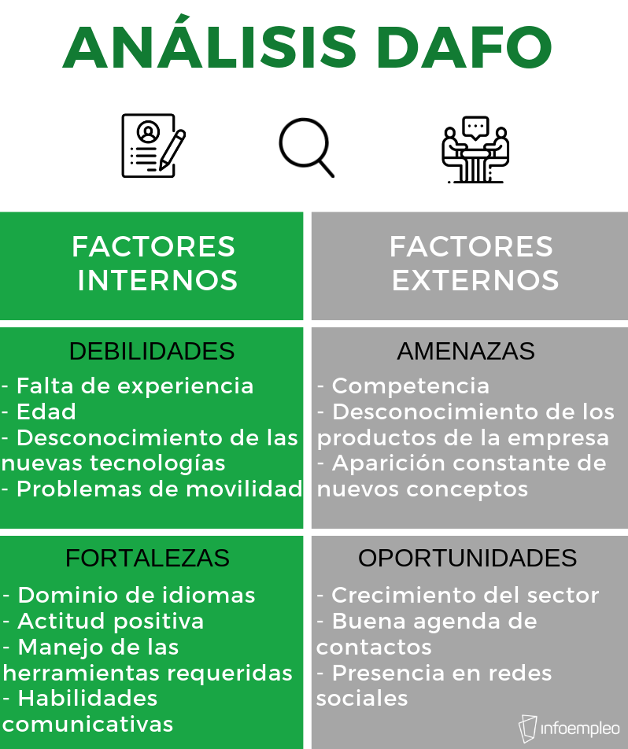
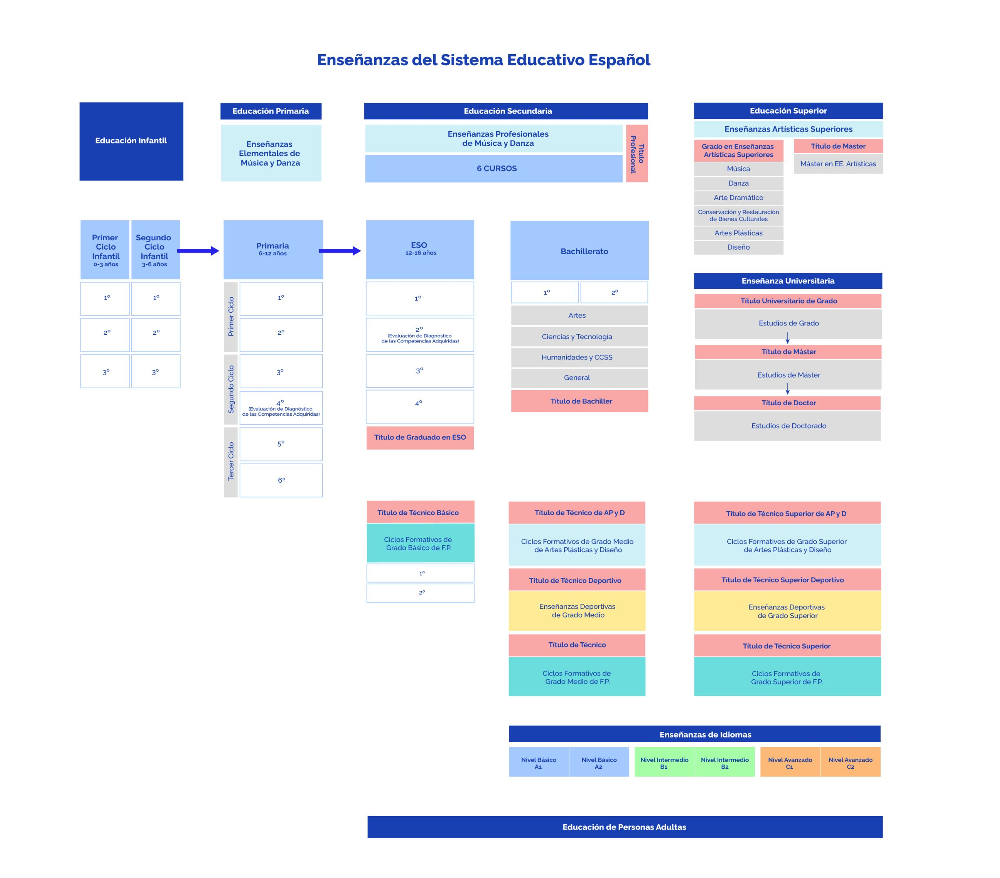
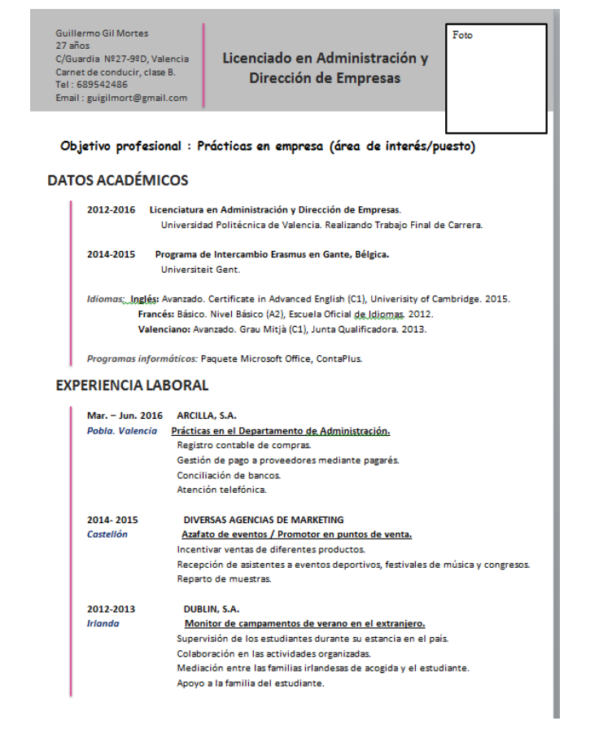
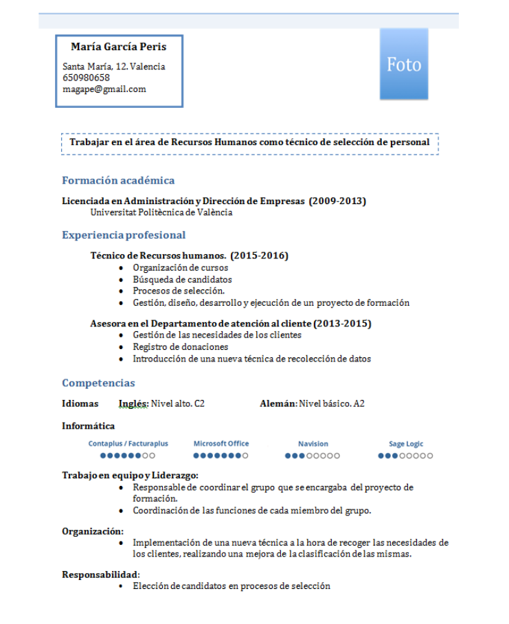
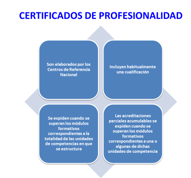
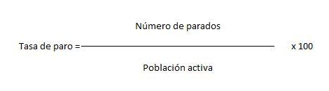
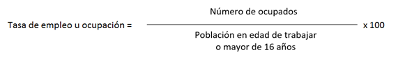
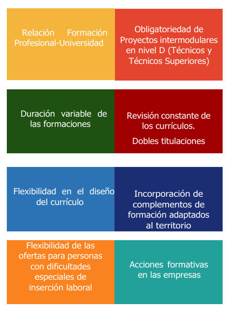
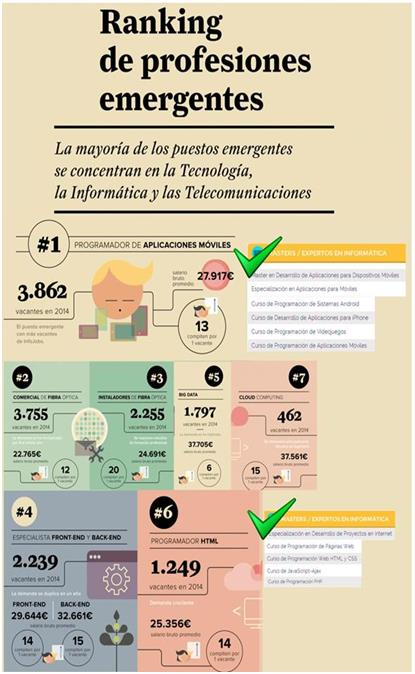

CERTIFICADO OFICIAL DE FORMACIÓN PEDAGÓGICA Y DIDÁCTICA PARA PROFESORADO TÉCNICO
1 L’ORIENTACIÓ PROFESSIONAL
1.1 COM ES CONCEP L’ORIENTACIÓ PROFESSIONAL?
La finalitat bàsica de l’educació és oferir a les persones una preparació suficient que els permeta, d’una banda, incorporar-se a la vida activa directament des de cada un dels nivells educatius del sistema educatiu i, per un altre, adaptar-se ràpidament, amb el menor cost humà, econòmic i social, a les situacions emergents provocades per l’evolució de l’economia i als canvis laborals i professionals que estes comporten.
L’Orientació Professional consistix en un procés de maduració i aprenentatge personal, a través del qual es presta una ajuda tècnica a l’individu per a facilitar-li la presa de decisions vocacionals, a fi de que aconseguisca un òptim de realització personal i d’integració social a través del món del treball i per tant ha de formar part de l’educació de l’alumne.
L’Orientació Professional és un procés d’exploració de les característiques de l’individu, de descripció de les exigències de la professió i d’avaluació de les possibilitats d’aquella enfront d’estes; de tal forma que aquell puga adoptar una decisió més lúcida i més lliure.
Segons Álvarez González són aspectes rellevants sobre l’orientació professional:
- Procés d’ajuda, individual o grupal, de caràcter continu i progressiu.
- Dirigit a tots els individus de totes les edats i en tots els moments de la vida.
- Integra aquelles dimensions que contribuïxen a la realització personal, educativa, vocacional i laboral en relació amb el desenrotllament de les conductes vocacionals.
- Intervenció sistemàtica i tècnica des de perspectives especialitzades que impliquen els diferents agents educatius, de la comunitat i soci-laborals.
- Assumix els principis de prevenció, desenrotllament i intervenció social.
- Integrada en el procés educatiu a través del currículum escolar i en el món laboral.
1.2 PRINCIPIS
Tradicionalment s’han considerat tres principis en l’orientació:
Principi de prevenció: Es tracta d’actuar abans que sorgisca el problema. Les situacions de crisis es donen especialment en les situacions de transició d’uns estudis a uns altres, transició de l’entorn escolar al món laboral i en la transició d’una ocupació a una altra. Des d’este punt de vista consta de les següents característiques:
- És proactiva.
- És intencional i fundada en els coneixements científics sobre orientació professional.
- Restringix el risc de problemes d’orientació en els membres del grup en el qual s’intervé.
- Modifica, sempre que siga possible, el context soci ambiental creador de situacions conflictives.
- Dota a les persones d’habilitats i competències necessàries per a enfrontar-se amb èxit a les situacions d’orientació professional.
- Es fonamenta a processar informació dels determinants personals (personalitat, actitud, interessos…) i els determinants socials (possibilitats de formació professional, oferta laboral…).
Principi de desenrotllament: Es fonamenta a considerar a la persona en constant procés de formació professional i personal. Des d’este principi l’Orientació Professional té la finalitat d’estimular en la persona el progrés de canvi d’un estadi a un altre.
En funció d’este principi l’Orientació Professional es caracteritza per:
- Assumir el procés de desenrotllament al llarg de tota la vida, estructurat en etapes o estadis maduratius.
- Considerar les etapes en funció del desenrotllament biològic, sense intervindre l’experiència del subjecte.
- Contemplar les etapes en funció de la capacitat de processar la informació i del desenrotllament del pensament.
- Estimular el pas d’un estadi a un altre, a través de la consolidació de les habilitats pròpies de cada etapa, per a enfrontar-se millor a la següent.
- Reforçar el principi de prevenció amb accions similars a les promogudes per este.
- Potenciar els recursos interns de les persones, per a poder enfrontar-se a les múltiples decisions professionals que exigixen contextos socioeconòmics tan canviants com l’actual.
Principi d’intervenció: Segons este principi l’orientació no sols ha de tindre en compte el context en què es realitza, sinó també la possibilitat d’intervindre sobre el propi context. L’activitat orientadora estarà dirigida a la modificació d’aspectes concrets del context. Així mateix, l’orientació, des d’esta perspectiva, tractarà d’ajudar l’alumne a conscienciar-se sobre els obstacles que se li oferixen en el seu context i li dificulten l’assoliment dels seus objectius personals, perquè puga afrontar el canvi necessari d’estos obstacles. La constant interacció entre l’individu i el context permet la transformació dels dos alhora.
En funció d’este principi l’Orientació Professional es caracteritza per:
- Descobrir, analitzar i interpretar el procés d’interacció de les persones amb el seu entorn.
- Proposar, elaborar i executar intervencions per a la transformació del context, en la mesura que siga possible.
- Crear consciència dels determinants socials que influïxen en la presa de decisions.
- Propiciar canvis socials quan es produïxen discrepàncies entre els valors de la persona i els valors de la societat.
- Promoure l’autorealització de la persona a través de l’equilibri entre l’adaptació al context i la transformació d’este, sense perdre la meta del projecte vital.
1.3 FINALITAT
Podem dir que la principal finalitat de l’orientació és el diagnòstic, la qual cosa implica una exploració completa dels escolars i del seu context amb la finalitat d’ajudar-los a comprendre’s a si mateixos i a resoldre els seus problemes i així poder predir les seues possibilitats educatives. Busquem avaluar aptituds, competències i interessos.
El contingut d’eixe diagnòstic pot ser més o menys ampli, podent abastar:
- El coneixement de les seues disfuncions o malalties que puguen afectar la seua conducta i/o rendiment.
- Les seues característiques cognitives i de personalitat.
- La trajectòria escolar de l’alumne i els continguts o matèries en els quals troba més dificultat.
- El seu context familiar i social.
Això significa admetre tres coses:
- La personalitat posseïx una sèrie de trets peculiars de cada persona que mantenen una certa estabilitat en el transcurs del temps.
- Estos trets són observables i mesurables mitjançant l’ús d’instruments, que pretenen descobrir l’estructura psicològica de cada individu.
- L’objecte del diagnòstic no és tant descobrir a l’individu com predir la seua conducta.
Després del diagnòstic es durà a terme l’assessorament, que té com a objectiu ajudar en la seua presa de decisions. La funció d’assessorament de l’orientador consistix a ser un conseller, oferir ajuda, però és l’alumne qui decidix.
L’assessorament abastarà:
- Un aspecte escolar, oferint, aclarint o ampliant el coneixement que l’alumne té de si mateix i de les seues possibilitats a fi que sàpia desenrotllar-les adequadament.
- Un aspecte vocacional i professional, informant de l’oferta formativa existent que més s’adapte a les seues característiques personals.
- I un aspecte personal facilitant l’ajuda necessària per a aconseguir un desenrotllament constructiu de la seua personalitat. En este sentit l’orientador ha de realitzar una atenció individualitzada quan les circumstàncies de l’alumne així ho requerisquen i idear activitats o programes orientats al desenrotllament de les seues relacions interpersonals i socials per a afavorir la seua integració. Un factor clau està en la qualitat de la interrelació personal entre l’orientat i l’orientador.
1.4 REGULACIÓ EN L’EDUCACIÓ
La **Llei orgànica 3/2020, de 29 de desembre (*LOMLOE)**, per la qual es modifica la Llei orgànica 2/2006, de 3 de maig, d’Educació, presta particular atenció a l’orientació acadèmica i professional. La importància que concedix a l’orientació acadèmica i professional queda de manifest, en destacar-la com un dels principis que han de regir l’educació: L’orientació educativa i professional dels estudiants, com mig necessari per a l’assoliment d’una formació personalitzada, que propicie una educació integral en coneixements, destreses i valors (art. 1,f).
També la LOMLOE, en el seu article 2.2, entre els fins de l’Educació inclou l’Orientació acadèmica i professional entre els factors que afavorixen la qualitat de l’ensenyança: ”Els poders públics prestaran una atenció prioritària al conjunt de factors que afavorixen la qualitat de l’ensenyança i, especialment, la qualificació i formació del professorat, el seu treball en equip, la dotació de recursos educatius, la investigació, l’experimentació i la renovació educativa, el foment de la lectura i l’ús de biblioteques, l’autonomia pedagògica, organitzativa i de gestió, la funció directiva, l’orientació educativa i professional, la inspecció educativa i l’avaluació”*.
L’article 22 de la LOMLOE inclou entre els principis generals de l’ESO: ”En l’educació secundària obligatòria es prestarà especial atenció a l’orientació educativa i professional de l’alumnat”*. L’article 26.4. assenyala que correspon a les Administracions educatives promoure les mesures necessàries perquè la tutoria personal dels alumnes i l’orientació educativa, psicopedagògica i professional, constituïsquen un element fonamental en l’ordenació d’esta etapa.
Veure text complet en: https://www.boe.es/diario_boe/txt.php?id=boe-a-2020-17264
Llei orgànica 3/2022, de 31 de març, d’ordenació i integració de la Formació Professional
La capacitat de les persones per a aconseguir ser allò que tenen motius per a desitjar ser requerix disposar d’un ampli conjunt de drets, capacitats i competències personals, socials i professionals que són imprescindibles tant per a desenrotllar-se plenament com persones com per a aprofitar les oportunitats d’ocupació que oferix el canvi econòmic i tecnològic.
En l’actualitat moltes persones al nostre país no disposen d’eixes capacitats, la qual cosa posa en risc el benestar personal i social. Ho posa de manifest, per exemple, l’elevada desocupació estructural, el fort abandó escolar primerenc, les bretxes de gènere, o els biaixos que afecten, especialment, a determinats col·lectius, com les persones amb discapacitat. En altres casos, persones que sí que disposen d’eixos coneixements i habilitats professionals per haver-les adquirit a través de l’experiència laboral no tenen, no obstant això, una forma fàcil i eficaç de reconéixer i certificar eixos coneixements. Esta circumstància, que pràcticament afecta a la mitat de la població activa del país, limita el progrés professional de moltes persones treballadores i, en moltes ocasions, la seua pròpia continuïtat en l’ocupació. En els dos casos estes situacions priven a eixes persones de les oportunitats per a realitzar-se plenament com a tals.
Esta privació d’oportunitats suposa una limitació al dret de ciutadania reconeguda en la nostra Constitució, així com en el Pilar Europeu dels drets socials, la Carta Social Europea, i la Convenció Internacional sobre els drets de les persones amb discapacitat. Este risc de limitació de ciutadania augmenta quan prenem en consideració que el fort canvi tecnològic i econòmic al qual estem sotmesos exigix una adequada qualificació i flexibilitat del capital humà per a adaptar-se a les circumstàncies canviants de l’economia i de la tecnologia.
Alhora que moltes persones no troben ocupació, el sistema empresarial no aconseguix cobrir algunes de les seues ofertes d’ocupació. Les vacants són especialment elevades en nivells intermedis de qualificació –vinculats a la formació professional- i, més en concret, en aquelles activitats directament relacionades amb la modernització del sistema econòmic exigida pel canvi tecnològic i la nova economia verda i blava. L’escàs desenrotllament de les qualificacions intermèdies en l’estructura formativa espanyola exigix duplicar, amb rapidesa, el nombre de persones amb formació intermèdia per a poder respondre a les necessitats del sistema productiu.
El nombre d’ocupacions generades per la digitalització i la transició ecològica, els dos grans elements transformadors del model econòmic, necessitaran ser coberts amb persones competents i qualificades professionalment, almenys, amb el nivell de formació professional de grau mitjà, que s’inclou entre els corresponents a l’ensenyança secundària postobligatòria. Les previsions per a Espanya en 2025 identifiquen que el 49% dels llocs de treball requeriran una qualificació intermèdia, i només un 14% de llocs requeriran baixa qualificació.
Els organismes internacionals recorden com l’absència de capacitats i habilitats laborals en moltes persones, o la falta de reconeixement i certificació en unes altres, és un enorme hàndicap per a la creativitat, la innovació, el dinamisme, la modernització productiva i el creixement de l’economia espanyola. El problema de la feble productivitat mitjana de la nostra economia i la insuficient capacitat d’emprenedoria estan, entre altres causes, vinculades a la falta de qualificació adequada d’una gran part del capital humà, la qual cosa coincidix amb els advertiments realitzats per organismes europeus.
Este desajustament exigix introduir un instrument àgil i eficaç que facilite la qualificació i requalificació permanent de les persones, i l’ajust entre oferta i demanda de treball, un dels desafiaments com a país. La nostra estructura formativa està llastrada per un escàs desenrotllament i falta d’atractiu en la zona de qualificació intermèdia, més greu quant ens trobem en un moment tan decisiu com la quarta revolució industrial i les seues conseqüències en les noves necessitats de qualificació de totes les persones treballadores. Comparada amb la d’altres països amb estructura econòmica i d’activitat similars, la nostra estructura formativa està esbiaixada cap avall i cap amunt. D’una banda, tenim un elevat nombre de persones sense qualificacions adequades a les necessitats de l’economia actual. Per un altre, tenim un elevat nombre de persones *sobrecualificadas en relació amb el treball que desenrotllen. Necessitem enfortir el grup de professionals amb qualificació intermèdia. Este és el tret que ens diferencia d’altres economies europees desenrotllades, que el seu principal actiu és este grup intermedi de persones qualificades professionalment.
Mentres, la formació professional continua llastrada socialment per una visió no adaptada a la realitat actual, que ha limitat tradicionalment a taxes reduïdes els percentatges d’estudiants en formació professional dins del sistema educatiu, privilegiant altres itineraris de caràcter més acadèmic, i a una insuficient inversió en l’oferta d’estes ensenyances. En els últims anys, este procés està aconseguint ser revertit, amb un creixement constant d’estudiants que opten per itineraris professionals.
Així mateix, la formació de la població activa, ocupada i desocupada, a Espanya es troba en índexs per davall del que totes les prospectives indiquen necessaris per a mantindre actualitzada i qualificada a la població. És urgent millorar els mecanismes de formació i requalificació, i ajustar-los a les necessitats pròximes als acompliments professionals.
Aconseguir una qualificació i requalificació permanent de tota la població, des dels jóvens abans d’abandonar l’escolaritat obligatòria fins al final de la trajectòria professional, requerix d’una política ferma, coordinada i ben orientada, que done coherència a un sistema integral de formació professional. Retardar decisions en este sentit suposaria assumir riscos per al benestar individual de la ciutadania i el benestar econòmic com a país, i renunciar en bona part a les oportunitats de modernització de la nostra economia i de la nostra societat, posant en risc objectius fonamentals per al segle XXI.
La moderna Economia del Creixement sosté que el dinamisme econòmic d’un país prové de l’existència d’una àmplia població laboral amb qualificacions adequades a les necessitats que demanden el canvi tècnic i econòmic. La creativitat i innovació d’una economia no és només el resultat del talent dels grups directius. El talent és una qualitat present en tota la població. El dinamisme econòmic d’un país és el resultat de la capacitació del conjunt de la seua població i no d’una reduïda elit. Pot afirmar-se que el benestar d’una societat democràtica, així com el dinamisme empresarial i econòmic d’un país passen per l’existència d’una àmplia població competent, qualificada i integrada social i professionalment.
Necessitem introduir amb urgència en el món del treball del nostre país un mecanisme que ajude a aproximar demanda i oferta d’ocupació. Esta és la principal recomanació de la moderna Economia del Treball. L’instrument més potent per a generar oportunitats per a les persones i crear esta població amb qualificacions laborals intermèdies i superiors és un eficaç Sistema de Formació Professional. Esta és l’evidència comparada d’altres països europeus. Però també la que revelen les dades de la pròpia economia espanyola. L’elevada taxa de desocupació juvenil espanyola descendix més de cinc vegades entre titulats de Formació Professional.
En combinar escola i empresa i situar a la persona en el centre del sistema, la formació professional aconseguix un adequat equilibri entre ensenyança humanística i formació *profesionalizante. D’esta manera, la formació professional es convertix, d’una banda, en una potent palanca per a l’educació i el desplegament de les capacitats de les persones i, per un altre, en un poderós instrument per a la modernització i transformació del model productiu, d’acord amb els requeriments que porta la nova economia digital, verda i blava.
Veure text complet en: https://www.boe.es/buscar/act.php?id=boe-a-2022-5139
Reial decret 659/2023, de 18 de juliol, pel qual es desenrotlla l’ordenació del Sistema de Formació Professional
Este Reial decret desenrotlla l’ordenació del sistema de formació professional establit per la Llei orgànica 3/2022, de 31 de març, d’ordenació i integració de la Formació Professional. Establix el marc normatiu que estructura el nou sistema d’FP en cinc graus (A, B, C, D i E), amb caràcter modular, acumulable i *capitalizable, permetent itineraris formatius flexibles i adaptats a les necessitats individuals i del mercat laboral.
Reial decret 69/2025, de 4 de febrer, pel qual es desenrotllen els elements integrants i els instruments de gestió del Sistema Nacional de Formació Professional
Este Reial decret completa el desenrotllament reglamentari de la Llei orgànica 3/2022, establint els elements integrants del Sistema Nacional de Formació Professional i els seus instruments de gestió, incloent-hi el Catàleg Nacional d’Ofertes de Formació Professional, el Catàleg Modular de Formació Professional, i els mecanismes d’acreditació i reconeixement de competències professionals adquirides per experiència laboral.
1.5 TÈCNIQUES
Per al diagnòstic de les Aptituds, Competències i Interessos poden utilitzar-se qüestionaris i inventaris d’actituds i interessos professionals. I al costat d’això, escales d’observació i d’avaluació i tècniques sociomètriques que permeten obtindre un perfil complet de l’alumne.
Un lloc destacat l’ocupa l’entrevista individual, element clau del procés orientador tant en la fase de recollida d’informació com en el moment de l’ajuda o consell a l’estudiant. Les aptituds no són els únics factors determinants del rendiment i no han de ser l’única base per a la predicció de l’èxit o fracàs escolar ni per a l’elecció d’una mena d’estudis.
López *Bonelli planteja tres tècniques d’investigació:
L’entrevista
L’entrevista en orientació vocacional és individual, operativa en la mesura en què l’objectiu és que l’individu siga capaç després del procés de triar una carrera, i focalitzada al voltant de quina professió i/o estudis vol fer. Té un valor terapèutic perquè ha de permetre resoldre conflictes, esclarir motius i fantasies inconscients, enfortir funcions etc., que impedixen triar.
Tècnica reflex
Pretén que el subjecte s’autocomprenga i resolga els seus problemes. Consistix en el fet que el subjecte expresse el que pensa sobre una situació (reflex immediat), sintetitze els seus sentiments i actituds (reflex sumari), elaborant un missatge, discernint entre l’essencial i l’accessori (reflex terminal).
Informació
Tracta d’aclarir la imatge distorsionada sobre un treball o professió, ja siga per falta d’informació, factors interns, etc. L’objectiu és elaborar i transmetre informació realista, afavorir la comunicació, esclarir i fomentar la busca d’informació.
1.6 AUTOANÀLISI
L’alumne ha de prendre consciència de com es veu a si mateix, des de l’autoobservació i l’autoanàlisi, analitzant i avaluant el seu propi potencial professional i el dels seus interessos personals.
https://www.todofp.es/
L’alumne ha de reflexionar sobre:
Coneixements
Fa referència als conceptes que s’han adquirit mitjançant la formació, l’autoaprenentatge, l’especialització, l’experiència, etc.
Podem parlar de:
- Competències personals: són aquelles no vinculades a una professió però que permeten millorar la seua eficàcia en el treball.
- Competències professionals: és el conjunt de coneixements, destreses, aptituds i actituds que permeten exercir un treball concret de manera competent.
S’adquirixen:
- A través de la formació.
- A través de l’experiència professional (acreditació de competències professionals).
(Les dos es poden consultar en el portal del Ministeri d’Educació “Todofp.es”)
Aptituds
autoanalitzant el seu comportament, responsabilitat, iniciativa, afany de superació, la seua capacitat d’aprendre noves coses, la creativitat, la polivalència, la seua capacitat de fer alguna cosa.
Tradicionalment es classifiquen en:
Capacitats motrius:
Control i coordinació de moviments.
Habilitats per a tasques de precisió.
Capacitats de comunicació:
Transmissió d’idees i coneixements de manera verbal i escrita.
Capacitats intel·lectuals:
Comprensió i expressió.
Anàlisi de situacions.
Càlcul.
Creativitat.
Entre les teories més conegudes per a avaluar les aptituds podem destacar la **teoria Multifactorial de *Thurstone**, basada en la tècnica estadística de l’anàlisi factorial, per a la qual no existiria un factor general d’intel·ligència, sinó que està compost per un nombre limitat de factors diversos o aptituds mentals primàries bàsiques que són:
- R = raonament general.
- N = raonament numèric.
- S = raonament espacial.
- C = comprensió verbal.
- V = fluïdesa verbal.
- M = memòria.
- P = velocitat perceptiva.
Destreses
Preguntant-se com posar en pràctica els coneixements adquirits, l’experiència laboral, les habilitats, etc.
Interessos i expectatives
Són els desitjos o impulsos de grat, indiferència o desgrat cap a un objecte, activitat o professió. Centrant-nos en els interessos professionals direm que són les preferències que ens van espentant en una determinada direcció professional.
Són clàssiques les sis àmplies àrees d’interessos professionals que ens presenta J.L. *Holland:
- Àrea realista: activitats manuals, mecàniques o tècniques.
- Àrea científica: activitats que permeten analitzar les coses.
- Àrea artística: activitats de tipus creatiu, com pintar, escriure, la música.
- Àrea social: activitats d’ajuda als altres.
- Àrea emprenedora: activitats que valoren els aspectes polítics i econòmics que suposen risc.
- Àrea burocràtica: activitats ordenades, organitzades i d’acord amb normes poc canviants.
Situació personal
Suport familiar, situació econòmica, ajudes institucionals.
Després de la reflexió sobre estos punts s’ha de dur a terme un balanç professional contrastant els mateixos amb l’estat del mercat de treball, a fi de definir un projecte professional amb possibilitats d’èxit. Una és la **tècnica *DAFO**, que facilita la labor d’anàlisi, avaluació i autoconeixement, servint-nos de base per a establir estratègies de millora i facilitar el camí i els recursos a utilitzar.
Es tracta d’una sèrie de qüestions que poden plantejar-se per a ajudar la persona a trobar respostes i concretar les fortaleses, debilitats, amenaces i oportunitats que determinen la seua situació en relació a la seua busca d’ocupació:
- Identificació de FORTALESES (aspectes positius, recursos, avantatges, assoliments) molt important: depenen de la persona.
- Identificació de OPORTUNITATS (tota la força de l’entorn que representa un avantatge per a la persona o pot ajudar a aconseguir l’objectiu). No depenen de la persona.
- Identificació de DEBILITATS (aspectes interns que limiten la capacitat d’aconseguir l’objectiu). Depenen de la persona.
- Identificació de AMENACES (tota la força de l’entorn: riscos, condicionants, barreres que poden impedir aconseguir l’objectiu). No depenen de la persona.

Una vegada realitzat esta autoanàlisi s’hauran de EXTRAURE CONCLUSIONS per a determinar les estratègies a seguir.
1.7 PRESA DE DECISIONS
El procés de prendre decisions és un procés continu que permetrà a l’alumnat prendre decisions de menor a major transcendència, conforme vaja obtenint informació de si mateix i de les alternatives educatives i professionals. Diferents autors (Álvarez González, 2004; Gómez, 1995; Dt. i Yeh, 2005; Osipow, 1983; Rivas, 1988) destaquen els següents factors:
- De tipus personal: L’autoestima i autoconfiança, els valors, la personalitat, les aptituds, les experiències, la consciència de les emocions i la regulació emocional.
- De tipus motivacional: Les preferències, les expectatives, les aspiracions, els interessos i la satisfacció.
- De tipus professional: Eixides laborals, prestigi social, seguretat, salari, entre altres.
- De tipus ambiental: Possibilitats de l’entorn, la situació econòmica, el suport i suport familiar.
Podem centrar-nos en dos models per la seua rellevància per a la presa de decisions educatiu-professionals:
Model de Gelatt: És un model molt operatiu, ens indica com ha de realitzar-se una elecció. Sosté que la presa de decisions és un procés humà no científic, no sistemàtic, no seqüencial, i que existixen tres directrius que haurien de dirigir el procés.
- La primera és “considera els teus fets amb imaginació, però no imagines els teus fets”.
- La segona directriu de Gelatt és “coneix el que vols i creu-ho, però no estigues segur”.
Per a Gelatt la presa de decisions implica un procés continu de descobrir objectius. Per este motiu, els alumnes haurien d’aprendre a estar en un estat continu d’incertesa positiva sobre els seus objectius, mantenint les seues opcions obertes durant tot el temps. Conclou dient que el subjecte que pren decisions hauria de ser racional llevat que hi haja una bona raó per a no ser racional.
**El model DECIDIXES de *Krumbolt** consta de les següents fases:
- Definir bé la situació problemàtica. Explicitar el que es desitja i el temps límit per a prendre la decisió.
- Establir un pla d’acció. En esta fase s’han de descriure les accions necessàries per a prendre la decisió; s’ha de planificar quan es farà cada activitat i s’ha d’estimar el temps que es dedicarà a cada etapa o fase.
- Aclarir valors. Aclarir els valors i considerar els beneficis.
- Identificar alternatives. Remenar les diferents opcions i alternatives.
- Descobrir resultats possibles. Comparar les diferents opcions.
- Eliminar alternatives. Descartar aquelles alternatives que no responen a les necessitats plantejades.
- Començar l’acció. Dur a terme l’opció triada.
Pots ampliar esta informació en el següent enllaç: https://www.todofp.es/inicio.html
1.8 L’ELECCIÓ D’ITINERARIS FORMATIUS *PROFESIONALIZADORES
El procés d’autoanàlisi i la presa de decisions, permeten dissenyar un itinerari formatiu propi necessari per a l’adquisició dels elements requerits per a acostar l’objectiu professional marcat. Podem definir l’itinerari professional com la descripció i direcció del camí professional a seguir en el procés formatiu.
Dins del procés formatiu *profesionalizador hem de distingir entre:
1.8.1 FORMACIÓ REGLADA
Es referix a ensenyances contemplades pel Ministeri d’Educació, Formació Professional i Esports i impartides en centres públics o privats acreditats per a això (Graus de Formació Professional, Graus Universitaris, Màster…) contemplant-se a la seua finalització un títol oficial.
La Llei orgànica 3/2022, de 31 de març, d’ordenació i integració de la Formació Professional, juntament amb el Reial decret 659/2023, de 18 de juliol, pel qual es desenrotlla l’ordenació del Sistema de Formació Professional, i el Reial decret 69/2025, de 4 de febrer, que desenrotlla els elements integrants i els instruments de gestió del Sistema Nacional d’FP, establixen un nou sistema de formació professional únic i integrat, estructurat en cinc graus (A, B, C, D i E) amb caràcter modular, acumulable i *capitalizable.
La **Llei orgànica 3/2020, de 29 de desembre (*LOMLOE)**, per la qual es modifica la Llei orgànica 2/2006, de 3 de maig, d’Educació, constituïx el marc educatiu general.
https://www.boe.es/diario_boe/txt.php?id=boe-a-2020-17264
Llei orgànica 3/2022, de 31 de març, d’ordenació i integració de la Formació Professional
https://www.boe.es/buscar/act.php?id=boe-a-2022-5139
Reial decret 659/2023, de 18 de juliol, pel qual es desenrotlla l’ordenació del Sistema de Formació Professional
https://www.boe.es/buscar/doc.php?id=boe-a-2023-16889
Reial decret 69/2025, de 4 de febrer, pel qual es desenrotllen els elements integrants i els instruments de gestió del Sistema Nacional de Formació Professional
https://www.boe.es/diario_boe/txt.php?id=boe-a-2025-2039

Font de la imatge: https://formacion.intef.es/aulaenabierto/pluginfile.php/10276/mod_book/chapter/12826/esquema-ensenanzas-actualizado.jpg.jpg?time=1653639930228 “Organigrama Sistema educatiu espanyol”
{kind=link}
Dins de l’itinerari professional comptem amb el nou sistema estructurat en cinc graus.
1.8.2 SISTEMA DE FORMACIÓ PROFESSIONAL: ELS CINC GRAUS
El nou sistema de Formació Professional s’organitza en cinc graus (A, B, C, D i E), amb caràcter modular, acumulable i *capitalizable, permetent que cada persona puga construir el seu propi itinerari formatiu al llarg de tota la seua vida:
Grau A: Acreditació de Competència (microacreditacions)
Són programes formatius de curta duració que conduïxen a l’obtenció d’una acreditació parcial de competència professional. Tenen caràcter parcial i acumulable.
Característiques:
- No es requerixen requisits acadèmics previs.
- Duració variable segons els resultats d’aprenentatge a aconseguir (entre 30 i 300 hores).
- S’obté una acreditació parcial de competència amb validesa en tot el territori nacional.
- L’acumulació de totes les acreditacions parcials corresponents a un mòdul professional permet obtindre el Grau B.
Grau B: Certificat de Competència
Oferta formativa referida a un mòdul professional complet del Catàleg Modular de Formació Professional. Té caràcter parcial i acumulable.
Característiques:
- No es requerixen requisits acadèmics previs.
- La duració coincidix amb la càrrega horària del mòdul professional corresponent.
- S’obté un Certificat de Competència amb validesa en tot el territori nacional.
- L’acumulació de certificats de competència corresponents a diversos mòduls professionals permet obtindre el Grau C.
Grau C: Certificat Professional
Oferta formativa composta per diversos mòduls professionals del Catàleg Modular amb alta significació en el mercat laboral. Pot incloure formació en empresa.
Característiques:
- Requisits d’accés segons el nivell (1, 2 o 3) del certificat professional.
- Pot obtindre’s per superació de la formació completa o per acumulació de Certificats de Competència (Grau B).
- Inclou tres nivells segons la complexitat de les competències:
- Nivell 1: activitats d’execució bàsiques.
- Nivell 2: activitats d’execució autònoma amb responsabilitat limitada.
- Nivell 3: activitats especialitzades amb autonomia i responsabilitat de coordinació.
- S’obté un Certificat Professional amb validesa en tot el territori nacional.
- Pot incloure períodes de formació en empresa (mínim 20% de la duració).
Grau D: Cicle Formatiu
Són els cicles formatius de Grau Bàsic, Grau Mitjà i Grau Superior. Conduïxen a l’obtenció de títols de Formació Professional amb caràcter oficial i validesa en tot el territori nacional.
Cicles de Grau Bàsic:
- Requisits d’accés: haver cursat el primer cicle d’ESO o, excepcionalment, haver cursat el segon curs d’ESO, tindre compliments 15 anys i no superar els 17 anys en el moment de l’accés, i haver proposat l’equip docent la incorporació a un cicle de Grau Bàsic.
- Duració: dos cursos acadèmics (2.000 hores).
- Estructura organitzada en tres àmbits:
- Àmbit de Comunicació i Ciències Socials (inclou Llengua Castellana, Valencià/llengua cooficial, Llengua Estrangera i iniciació professional i Ciències Socials).
- Àmbit de Ciències Aplicades (inclou Matemàtiques Aplicades i Ciències Aplicades).
- Àmbit Professional (mòduls professionals associats a unitats de competència).
- Inclou el mòdul de Itinerari Personal per a l’Ocupabilitat i el Projecte intermodular d’Aprenentatge Col·laboratiu.
- Formació en empresa integrada curricularment des del primer curs.
- Permet obtindre el títol de Professional Bàsic i el títol de Graduat en ESO.
Cicles de Grau Mitjà:
Requisits d’accés: títol de Graduat en ESO, títol de Professional Bàsic, superació de prova d’accés (amb 17 anys o més), o títol de Tècnic o Tècnic Superior.
Duració: dos o tres cursos acadèmics (2.000 hores en cicles de dos anys).
Estructura:
Mòduls professionals associats a unitats de competència.
Mòduls transversals obligatoris:
Itinerari Personal per a l’Ocupabilitat I (96 hores, primer curs).
Itinerari Personal per a l’Ocupabilitat II (96 hores, segon curs).
Digitalització Aplicada al Sistema Productiu (mínim 30 hores).
Sostenibilitat Aplicada al Sistema Productiu (mínim 30 hores).
Inglés Professional (mínim 90 hores en cicles de grau mitjà).
Projecte intermodular d’aprenentatge col·laboratiu (integrador de competències, amb 1 hora lectiva setmanal).
Mòduls optatius (entre 80 i 160 hores anuals).
Formació dual obligatòria: integració curricular de la formació en empresa, entre el 25% i el 50% de la duració total del cicle.
Permet obtindre el títol de Tècnic.
Cicles de Grau Superior:
- Requisits d’accés: títol de Batxiller, títol de Tècnic de Grau Mitjà d’FP, títol de Tècnic Superior o equivalent, superació de prova d’accés (amb 19 anys o més, o 18 si es posseïx títol de Tècnic), o haver superat curs de formació específic d’accés amb 19 anys complits.
- Duració: dos o tres cursos acadèmics (2.000 hores en cicles de dos anys).
- Estructura similar a Grau Mitjà:
- Mòduls professionals associats a unitats de competència.
- Mòduls transversals obligatoris:
- Itinerari Personal per a l’Ocupabilitat I (96 hores, primer curs).
- Itinerari Personal per a l’Ocupabilitat II (96 hores, segon curs).
- Digitalització Aplicada al Sistema Productiu (mínim 30 hores).
- Sostenibilitat Aplicada al Sistema Productiu (mínim 30 hores).
- Inglés Professional (mínim 120 hores en cicles de grau superior).
- Projecte intermodular d’aprenentatge col·laboratiu.
- Mòduls optatius (entre 80 i 160 hores anuals).
- Formació dual obligatòria: integració curricular de la formació en empresa, entre el 25% i el 50% de la duració total del cicle.
- Permet obtindre el títol de Tècnic Superior i accés directe a estudis universitaris.
Grau E: Curs d’Especialització
Oferta formativa que permet l’especialització en àrees concretes dins d’una família professional o en àrees amb caràcter transversal.
Característiques:
- Requisits d’accés: títol de Tècnic o Tècnic Superior d’FP, segons corresponga.
- Duració variable segons l’especialització (entre 300 i 900 hores).
- Inclou formació en empresa (entre 25% i 50% de la duració).
- Permet obtindre el títol d’Especialista.
1.8.3 NOVA ESTRUCTURA DE LA FORMACIÓ EN EMPRESA: FP DUAL OBLIGATÒRIA
Un dels canvis més significatius del nou sistema d’FP és la integració curricular obligatòria de la formació en empresa per a tots els cicles formatius de Grau D (Grau Mitjà i Superior) i Grau E (Cursos d’Especialització), implantada des del curs 2024-2025.
Característiques principals:
- Integració curricular: La formació en empresa no és un mòdul independent, sinó que està integrada en el currículum des de l’inici dels estudis.
- Duració mínima: Entre el 25% i el 50% de la duració total del cicle formatiu (amb un mínim del 20% per a nivells 1).
- Des del primer curs: La formació en empresa pot iniciar-se des del primer curs del cicle.
- Tutorització compartida: L’alumnat compta amb un tutor o tutora en el centre educatiu i un altre en l’empresa.
- Avaluació conjunta: Els resultats d’aprenentatge desenrotllats en l’empresa s’avaluen de manera coordinada entre el centre educatiu i l’empresa.
- Règim dual: Pot realitzar-se mitjançant:
- Contractes de formació en alternança (remunerats).
- Beques de formació professional.
- Altres formes de cooperació centre-empresa autoritzades.
Este model substituïx a l’antic mòdul de *FCT (Formació en Centres de Treball), que es realitzava al final del cicle una vegada superats els altres mòduls.
1.8.4 AVALUACIÓ EN FORMACIÓ PROFESSIONAL (COMUNITAT VALENCIANA)
En la Comunitat Valenciana, la Orde 8/2025, de 22 d’abril (publicada en el DOGV el 31 de desembre de 2024), regula l’avaluació de l’aprenentatge de l’alumnat dels cicles formatius i cursos d’especialització de Formació Professional.
Sistema d’avaluació:
- Sistema mixt: Combina avaluació contínua i prova final:
- 40% Proves d’Avaluació Contínua (PAC): Avaluació del procés d’aprenentatge al llarg del curs.
- 60% Prova Final: Avaluació dels resultats d’aprenentatge al final del període formatiu.
- Possibilitat de superació només amb prova final: L’alumnat pot aprovar el mòdul únicament amb la prova final si aconseguix la qualificació mínima establida.
- Avaluació de competències: S’avaluen resultats d’aprenentatge i competències transversals.
- Avaluació coordinada en FP dual: En la formació en empresa, l’avaluació es realitza de manera coordinada entre el tutor del centre educatiu i el tutor d’empresa.
- Qualificació: De 0 a 10 punts, sent necessari un mínim de 5 per a superar cada mòdul.
1.8.5 CURRÍCULUMS DE FORMACIÓ PROFESSIONAL EN LA COMUNITAT VALENCIANA
La Generalitat Valenciana ha publicat els decrets que establixen els currículums adaptats a la nova llei:
Decret 114/2025, de 29 de juliol, del Consell, pel qual s’establixen els currículums dels cicles formatius de Grau Mitjà i de Grau Superior de Formació Professional, en aplicació de la Llei orgànica 3/2022, de 31 de març.
Decret 117/2025, de 5 d’agost, del Consell, pel qual s’establixen els currículums dels cicles formatius de Grau Bàsic de Formació Professional, en aplicació de la Llei orgànica 3/2022, de 31 de març.
Estos decrets incorporen: - Els nous mòduls transversals (Itinerari Personal per a l’Ocupabilitat I i II, Digitalització Aplicada, Sostenibilitat Aplicada, Inglés Professional). - El Projecte intermodular d’Aprenentatge Col·laboratiu. - La formació en empresa integrada curricularment. - L’estructura curricular adaptada al nou sistema.
1.8.6 ACREDITACIÓ DE COMPETÈNCIES PROFESSIONALS
El nou sistema d’FP facilita el reconeixement i acreditació de competències professionals adquirides per experiència laboral o vies no formals de formació:
Procediment d’acreditació: - Permet a les persones que han adquirit competències professionals a través de l’experiència laboral obtindre una acreditació oficial. - Es realitza mitjançant convocatòries periòdiques de les administracions competents. - Inclou les fases de: - Assessorament. - Avaluació de les competències. - Acreditació i, si és el cas, certificació.
Efectes de l’acreditació: - Permet obtindre Acreditacions de Competència (Grau A), Certificats de Competència (Grau B) o Certificats Professionals (Grau C). - Facilita l’accés a ofertes formatives de nivell superior. - Millora les oportunitats d’ocupació i progressió professional. - Contribuïx al reconeixement de l’aprenentatge al llarg de tota la vida.
1.8.7 REQUISITS D’ACCÉS ACTUALITZATS
El nou sistema d’FP establix diverses vies d’accés a les diferents ofertes formatives:
Accés a Grau A i B (Acreditacions i Certificats de Competència):
- No es requerixen requisits acadèmics o professionals previs.
- És necessari posseir les habilitats bàsiques de comunicació lingüística que permeten l’aprenentatge.
Accés a Grau C (Certificats Professionals):
- Nivell 1: Sense requisits acadèmics ni professionals.
- Nivell 2 i 3: Segons el que s’establix en l’RD 659/2023:
- Títol de Graduat en ESO.
- Certificat Professional de nivell anterior.
- Prova d’accés.
- Acreditació de competències professionals adquirides per experiència laboral.
Accés a Grau D (Cicles Formatius):
Grau Bàsic:
- Haver cursat el primer cicle d’ESO o, excepcionalment, haver cursat 2n d’ESO.
- Tindre compliments 15 anys i no superar els 17 en el moment de l’accés.
- Proposta de l’equip docent.
Grau Mitjà:
- Títol de Graduat en ESO.
- Títol Professional Bàsic.
- Títol de Tècnic o Tècnic Superior.
- Superació de prova d’accés (17 anys o més).
- Acreditació de competències professionals equivalents.
Grau Superior:
- Títol de Batxiller.
- Títol de Tècnic de Grau Mitjà d’FP.
- Títol de Tècnic Superior o equivalent.
- Superació de prova d’accés (19 anys o més, o 18 amb títol de Tècnic).
- Curs de formació específic d’accés (19 anys complits).
- Acreditació de competències professionals equivalents.
Accés a Grau E (Cursos d’Especialització):
- Títol de Tècnic o Tècnic Superior d’FP, segons corresponga al nivell del curs d’especialització.
1.8.8 FAMÍLIES PROFESSIONALS
La Formació Professional s’organitza en 26 famílies professionals, que agrupen els cicles formatius segons afinitats formatives, processos tecnològics i sectors productius:
- Activitats físiques i esportives.
- Administració i gestió.
- Agrària.
- Arts gràfiques.
- Arts i artesanies.
- Comerç i màrqueting.
- Edificació i obra civil.
- Electricitat i electrònica.
- Energia i aigua.
- Fabricació mecànica.
- Hostaleria i turisme.
- Imatge personal.
- Imatge i so.
- Indústries alimentàries.
- Indústries extractives.
- Informàtica i comunicacions.
- Instal·lació i manteniment.
- Fusta, moble i suro.
- Manteniment i servicis a la producció.
- Marítim-pesquera.
- Química.
- Sanitat.
- Seguretat i medi ambient.
- Servicis socioculturals i a la comunitat.
- Tèxtil, confecció i pell.
- Transport i manteniment de vehicles.
- Vidre i ceràmica.
Cada família professional inclou ofertes formatives dels cinc graus (A, B, C, D i E), permetent itineraris formatius complets des de les microacreditacions fins als cursos d’especialització.
Pots consultar els centres on s’impartixen les diferents famílies professionals en la Comunitat Valenciana en el següent enllaç: https://ceice.gva.es/es/web/centros-docentes/formacion-profesional/familias-profesionales?viewurl162653243=/abc/i_guiadecentros/es/niveles_cfof.asp
1.8.9 ITINERARIS FORMATIUS SEGONS EL PUNT DE PARTIDA
El nou sistema permet múltiples itineraris formatius adaptats a cada situació personal:
Si no es disposa del títol de Graduat en ESO:
- Grau A (microacreditacions).
- Grau B (Certificats de Competència).
- Grau C nivell 1 (Certificats Professionals).
- Cicle de Grau Bàsic (amb 15 anys complits).
- Educació Secundària per a Persones Adultes.
- Prova d’accés a Grau Mitjà (17 anys o més).
- Prova d’accés a Grau Superior (19 anys o més).
- Prova d’accés a la Universitat per a majors de 25 anys.
- Acreditació de competències professionals per experiència laboral.
Si es disposa del títol de Graduat en ESO:
- Batxillerat.
- Grau A, B i C de qualsevol nivell.
- Cicles de Grau Mitjà.
- Prova d’accés a Grau Superior (19 anys o més).
- Curs de formació específic per a accés a Grau Superior.
- Acreditació de competències professionals per experiència laboral.
Si es disposa del títol de Graduat en ESO i Certificats Professionals:
- Totes les opcions del punt anterior.
- Possibilitat de convalidació de mòduls en cicles formatius.
- Accés preferent a cicles relacionats amb les competències acreditades.
Si es té un títol de Tècnic (Cicle de Grau Mitjà):
- Batxillerat.
- Cicles de Grau Superior (accés directe).
- Cursos d’Especialització de nivell mitjà (Grau E).
- Grau A, B i C de qualsevol nivell.
- Acreditació de competències professionals per experiència laboral.
Si es té el títol de Batxillerat:
- Cicles de Grau Mitjà.
- Cicles de Grau Superior.
- Grau A, B i C de qualsevol nivell.
- Estudis Universitaris (després de *EBAU).
- Acreditació de competències professionals per experiència laboral.
Si es té el títol de Batxillerat i Certificats Professionals:
- Totes les opcions del punt anterior.
- Possibilitat de convalidació de mòduls en cicles formatius.
- Accés preferent a cicles relacionats amb les competències acreditades.
Si es té un títol de Tècnic Superior (Cicle de Grau Superior):
- Estudis Universitaris (accés directe sense *EBAU).
- Cursos d’Especialització de nivell superior (Grau E).
- Grau A, B i C de qualsevol nivell.
- Altres Cicles de Grau Superior.
- Acreditació de competències professionals per experiència laboral.
1.8.10 ESTUDIS SUPERIORS
Constituïts per:
- Formació Professional de Grau Superior: Cicles formatius i Cursos d’Especialització (Grau D i E de nivell superior).
- Ensenyances Artístiques Superiors: Estudis superiors de música, dansa, art dramàtic, conservació i restauració de béns culturals, disseny i arts plàstiques.
- Ensenyances Esportives Superiors: Formació de tècnics esportius de nivell superior.
- Ensenyança Universitària: Graus, Màsters i Doctorats oficials.
1.8.11 ENSENYANCES D’IDIOMES
A través de les Escoles Oficials d’Idiomes (EE.OO.II.) el Ministeri d’Educació i les Administracions Educatives oferixen a la població adulta la possibilitat d’aprendre una gran varietat de llengües estrangeres en règim especial. Les ensenyances s’oferixen en diversos nivells de competència segons el Marc europeu comú de referència per a les Llengües (MECR): A1, A2, B1, B2, C1 i C2.
A més, en el nou sistema d’FP, tots els cicles formatius de Grau Mitjà i Superior inclouen el mòdul de Inglés Professional com a part de la formació obligatòria, amb un mínim de 90 hores en Grau Mitjà i 120 hores en Grau Superior.
1.8.12 RECURSOS I ENLLAÇOS D’INTERÉS
Es pot ampliar la informació sobre la Formació Professional en els següents enllaços:
- **Portal *TodoFP:** https://www.todofp.es/
- Graus del Sistema de Formació Professional: https://todofp.es/sobre-fp/informacion-general/grados-sistema-fp.html
- Nous mòduls professionals en FP: https://todofp.es/sobre-fp/informacion-general/nuevos-modulos-profesionales-fp.html
- Acreditació de Competències Professionals: https://todofp.es/acreditacion-de-competencias.html
- Famílies Professionals - Hostaleria i Turisme: https://todofp.es/que-estudiar/familias-profesionales/hosteleria-turismo.html
- Formació Professional - Generalitat Valenciana: https://ceice.gva.es/es/web/formacion-profesional
1.9 FORMACIÓ NO REGLADA
És aquella que no està contemplada pel Ministeri d’Educació com a ensenyança oficial i oferix formació complementària o especialitzada (Cursos de formació contínua, Postgraus privats, Màster no oficials…). Esta formació engloba totes aquelles ensenyances, aprenentatges, cursos i seminaris de diverses temàtiques, que es realitzen per a iniciar-se o especialitzar-se en el nostre àmbit laboral o treball futur que anem a exercir, o bé aconseguir algun tipus de capacitació professional addicional. Esta formació la impartixen centres privats de formació, universitats privades, escoles de negocis, acadèmies, plataformes en línia…
Esta formació també respon a les necessitats de les organitzacions empresarials a través de la formació contínua. Esta formació pot impartir-se a través d’institucions com ara sindicats, associacions, centres formatius i de les pròpies empreses.
Encara que no conduïxen a titulacions oficials, estos cursos poden ser molt útils per a:
- Especialització en àrees específiques.
- Actualització de coneixements i competències.
- Millora de l’ocupabilitat.
- Desenrotllament d’habilitats complementàries.
- Adaptació a les demandes canviants del mercat laboral.
Els cursos més demandats actualment són:
- Intel·ligència Artificial i Machine Learning.
- Ciberseguretat i protecció de dades.
- Màrqueting digital i comerç electrònic.
- Desenrotllament d’aplicacions mòbils i web.
- Transformació digital d’empreses.
- Gestió de projectes (metodologies àgils).
- Cuina i restauració sostenible.
- Gestió ambiental i energies renovables.
- Gestió sociosanitària i atenció a la dependència.
- Disseny gràfic i disseny UX/UI.
- Idiomes (especialment anglés professional).
- Habilitats blanes (soft skills) i lideratge.
És important verificar que els centres que impartixen formació no reglada compten amb les acreditacions i reconeixements pertinents, i que la formació rebuda siga valorada en el sector professional al qual es dirigix.
2 LA PROFESSIÓ COM A REALITAT SOCIAL I LA SEUA CONFIGURACIÓ JURÍDICA
La professió és un fenomen sociocultural en el qual intervé un conjunt de coneixements i habilitats, tradicions, costums i pràctiques que depenen del context econòmic, social i cultural en el qual sorgix i es desenrotlla. Per tot això, i tal com contempla el diccionari de la Reial Acadèmia on es definix professió com a “ocupació, facultat o ofici que cada un té i exercix públicament”, considerem a la mateixa en principi, com una realitat social més que com un institut jurídic.
La professió i el seu exercici fan referència a una activitat econòmica individual que s’exercix a partir d’uns determinats sabers o competències específiques. A cada professió correspon, així, una imatge sociològicament caracteritzada per la realització d’unes comeses típiques per al desenrotllament de les quals han de posseir-se uns certs coneixements intel·lectuals o tècnics, que són els que fan de cada professió una cosa socialment valuosa o funcional.
L’expansió dels coneixements tècnics, l’explosió demogràfica i el creixement dels centres urbans en el segle XIX, durant la Revolució Industrial, van contribuir a modificar l’organització social existent, propiciant la creació de tasques professionals més especialitzades (*Barrón, 1996).
Ara bé, quan la professió és només una realitat social, el seu específic nucli de sabers no està sotmés a control jurídic de cap temps, però l’exercici de la professió, quant a realitat social i econòmica, pot tindre efectes jurídics.
Wilensky Pacheco (1964) va establir que la professió és una forma especial d’organització ocupacional basada en un cos de coneixement sistemàtic adquirit a través d’una formació escolar, i establix que una activitat passa a ser considerada professió quan supera les cinc etapes del procés de professionalització, on:
- El treball es convertix en una ocupació de temps integral a conseqüència de la necessitat social del sorgiment i ampliació del mercat de treball.
- Es creen escoles per a l’ensinistrament i formació de nous professionals.
- Es constituïx l’associació professional on es definixen els perfils professionals.
- Es reglamenta la professió assegurant així el monopoli de competència del saber i de la pràctica professional.
- S’adopta un codi d’ètica amb la intenció de preservar així als “genuïns professionals”.
La professió pot estar referendada institucionalment mitjançant diplomes o títols, o de l’específica possessió dels mateixos mitjançant certificació de qualificacions professionals. Un estàndard de competència professional és el conjunt de coneixements, destreses i capacitats que permeten l’exercici de l’activitat professional conforme a les exigències de la producció i l’ocupació. Segons la Llei orgànica 3/2022, de 31 de març, d’ordenació i integració de la Formació Professional, una competència professional és el conjunt de coneixements i capacitats que permeten l’exercici de l’activitat professional, conforme a les exigències de la producció i l’ocupació.
L’acceleració del canvi cientificotècnic ha donat lloc a l’alteració de l’oferta social d’ocupació per a determinades activitats professionals fins ara més o menys estables a l’aparició de noves professions o a la remodelació del perfil de les antigues, la qual cosa ha determinat el replantejament dels criteris sobre la formació conduent a l’exercici professional amb la finalitat de propiciar no sols mecanismes d’actualització dels sabers sinó també vies formatives que preparen al professional per a eixe nou horitzó de caràcter interdisciplinari, la polivalència professional de la formació rebuda, l’èmfasi no sols en els continguts apresos sinó en els mètodes que permeten la posterior adaptació als canvis.
La Llei 2/2007, de 15 de març, de societats professionals, vigent amb les seues modificacions posteriors, definix en el seu article 1r que “activitat professional és aquella per a l’exercici de la qual es requerix titulació universitària oficial o professional la pràctica de la qual exigix acreditar esta titulació, així com la inscripció en el Col·legi Professional corresponent”.
En el marc actual, la regulació de les professions s’articula sobre dos eixos fonamentals:
- Rellevància pública de l’activitat professional, valorada en funció del seu impacte social i econòmic.
- Requisit de capacitació acreditada, exigible mitjançant la possessió d’estàndards de competència o títols oficials, conforme al Catàleg Nacional d’Estàndards de Competències Professionals i les exigències del RD 69/2025.
El control jurídic del nucli de sabers pot adoptar diverses fórmules: directrius estatals per al currículum, plans d’estudi obligatoris, acreditació de competències per experiència, exàmens de certificació professional o col·legiació obligatòria. L’ús del títol o acreditació està reglamentat per normes autonòmiques i estatals, garantint la qualitat i la protecció del ciutadà.
La configuració jurídica d’una professió exigix que el vincle entre activitats identificadores i sabers habilitants no es base només en la convenció social, sinó en una construcció normativa expressa. Així, l’Ordenament:
- Establix els estàndards de competència professional acreditats (RD 659/2023 i RD 69/2025).
- Definix els requisits d’accés (títols, acreditacions, exàmens, col·legiació).
- Reconeix l’àmbit d’actuació i les funcions exclusives del professional.
Entre la simple pràctica social i la regulació estricte-normativa existixen fórmules intermèdies (llicències, autoritzacions, validació de capacitació per ens distints de l’Estat), determinant un espectre graduat d’intervenció pública segons el nivell d’integritat del nexe “activitat–sabers” que cada professió aconseguisca jurídicament.
2.1 2.1. LA CONSTITUCIÓ ESPANYOLA: EL DRET A LA LLIURE ELECCIÓ DE LA PROFESSIÓ
La Constitució Espanyola en diferents articles fa menció al dret a la lliure elecció de la professió, en concret en els articles següents:
- Dret a la lliure elecció de la professió (art. 35 CE).
- Reserva de llei per a tota possible regulació de l’exercici de professions titulades (art. 36 CE).
- Competència estatal en la regulació de tots els títols acadèmics i professionals (art. 36 CE).
2.1.1 DRET A LA LLIURE ELECCIÓ DE LA PROFESSIÓ
La Constitució Espanyola en el seu article 35.1 establix “el deure de treballar i el dret al treball, a la lliure elecció de professió o ofici, a la promoció a través del treball i a una remuneració suficient per a satisfer les seues necessitats i les de la seua família sense que en cap cas puga fer-se una discriminació per raó de sexe…”, el mateix contingut s’arreplega en l’art. 4 de l’Estatut dels Treballadors.
Pel que, tant en la nostra Constitució, com en l’Estatut dels Treballadors s’inclou el dret a la lliure elecció de la professió o ofici. Es tracta d’un reconeixement exprés que reforça altres drets també reconeguts en la Constitució, com poden ser el principi d’igualtat, el lliure desenrotllament de la personalitat i el propi dret al treball.
El dret a la lliure elecció de la professió és un dret incondicionat pel que fa a la professió com a realitat social i un dret sotmés per mandat de la pròpia Constitució a uns certs caràcters de configuració.
El dret a la lliure professió o ofici, en el supòsit de professions titulades ha de passar pel compliment dels requisits que l’Ordenament establisca per a l’obtenció, expedició i homologació del corresponent títol.
El títol és un instrument a través del qual s’articula, per a la societat i els ciutadans, la garantia de la possessió d’uns determinats coneixements.
Per la seua part l’art. 3 de la Llei 17/2009, de 23 de novembre, sobre l’accés a les activitats de servicis i el seu exercici, indica que una professió regulada és “l’activitat o conjunt d’activitats professionals, l’accés de les quals, exercici o una de les modalitats d’exercici, estiguen subordinats de manera directa o indirecta, en virtut de disposicions legals o reglamentàries, a la possessió de determinades qualificacions professionals.”
El Consell de les Comunitats Europees va establir un sistema general de reconeixement mutu dels títols d’Ensenyança Superior que acrediten una formació mínima de tres anys de duració, i era necessari aprovar les normes que permeteren aplicar este sistema a Espanya, tenint en compte que la seua regulació afectarà, únicament, als nacionals d’un Estat membre que es propose exercir per compte propi o alié una professió que haja sigut regulada en l’Estat membre d’acolliment.
Esta norma permetrà suprimir els obstacles que existixen per a la lliure circulació en l’àmbit comunitari dels ciutadans dels països membres que estan en possessió dels títols indicats i afavorirà la seua mobilitat. Per consegüent, amb caràcter general, el que estiga en possessió de les qualificacions professionals adquirides en un altre Estat membre que siguen anàlogues a les que s’exigix al nostre país per a exercir una professió podrà accedir a ella en les mateixes condicions que els qui hagen obtingut un títol espanyol.
2.2 SISTEMA NACIONAL DE FORMACIÓ PROFESSIONAL I ACREDITACIÓ DE COMPETÈNCIES
2.2.1 EL CATÀLEG NACIONAL D’ESTÀNDARDS DE COMPETÈNCIES PROFESSIONALS
La Llei orgànica 3/2022, de 31 de març, d’ordenació i integració de la Formació Professional, desenrotllada pel Reial decret 659/2023, de 18 de juliol i el Reial decret 69/2025, de 4 de febrer, establix un nou sistema integral de formació professional que transforma l’anterior Catàleg Nacional de Qualificacions Professionals (CNCP) en el Catàleg Nacional d’Estàndards de Competències Professionals (CNECP).
Este canvi terminològic adapta la denominació al significat que té als països de la Unió Europea i evita els errors interpretatius que el terme «qualificació» ha vingut arrossegant. A més, la flexibilització de la formació fins a les «microformacions» requerix comptar amb descriptors menors, com són els estàndards de competències professionals –equivalents a les anteriors unitats de competència contingudes en les qualificacions professionals- i els elements de competència.
Característiques del Catàleg Nacional d’Estàndards de Competències Professionals:
- Els estàndards de competències professionals s’organitzen per famílies professionals (26 en total) i per nivells (1, 2 i 3) en funció de la complexitat, coneixements i capacitats, responsabilitat i autonomia de la funció a exercir.
- Estos nivells estan alineats amb els establits en la Recomanació del Consell, de 22 de maig de 2017, relativa al Marc Europeu de Qualificacions per a l’Aprenentatge Permanent per als nivells 3, 4 i 5, respectivament.
- Cada estàndard de competència professional inclou:
- Dades d’identificació: denominació oficial, família professional, nivell i codi alfanumèric.
- Competència professional: conjunt de coneixements i destreses que permeten l’exercici de l’activitat professional conforme a les exigències de la producció i l’ocupació.
- **Elements de la Competència (*EC):** realitzacions professionals i els Indicadors de Qualitat (*IC) que establixen el nivell d’execució exigit.
- Context professional: àmbit professional, sectors productius, ocupacions i llocs de treball més rellevants.
El **Institut Nacional de les Qualificacions (*INCUAL)** és l’òrgan competent per al disseny i actualització dels estàndards de competències professionals, que tindran validesa en tot el territori espanyol.
2.2.2 EL CATÀLEG NACIONAL D’OFERTES DE FORMACIÓ PROFESSIONAL
El **Catàleg Nacional d’Ofertes de Formació Professional (*CNOCP)** és l’instrument del Sistema Nacional de Formació Professional que conté totes les ofertes de formació professional reconegudes i acreditables en el marc del Sistema de Formació Professional.
Característiques:
- Està organitzat d’acord amb els nivells (1, 2 i 3) i les famílies professionals dels estàndards de competència.
- Cada oferta formativa compta amb una denominació oficial, un currículum bàsic i un codi alfanumèric que l’identifica inequívocament en relació amb el seu grau, nivell i integració en una oferta de grau major.
- Inclou totes les ofertes dels cinc graus (A, B, C, D i E) del nou sistema d’FP.
- Qualsevol oferta no inclosa en este catàleg no serà considerada part del Sistema de Formació Professional.
2.2.3 ACREDITACIÓ DE COMPETÈNCIES PROFESSIONALS ADQUIRIDES PER EXPERIÈNCIA LABORAL
El nou sistema de formació professional facilita el reconeixement i acreditació de competències professionals adquirides per experiència laboral o vies no formals de formació, permetent a les persones obtindre una acreditació oficial de les seues competències sense necessitat d’haver cursat formació reglada.
Procediment d’acreditació:
El procediment, regulat pel Reial decret 69/2025 i desenrotllat per cada Comunitat Autònoma, pot estar obert de manera permanent i inclou les següents fases:
Assessorament: Una persona experta en el sector professional ajuda a revisar l’historial professional i formatiu i a identificar les competències adquirides i les que poden faltar.
Avaluació: Un expert o experta avalua les competències professionals mitjançant diferents procediments (proves pràctiques, entrevistes professionals, anàlisis de *portfolio, etc.).
Acreditació: L’Administració expedirà una acreditació dels estàndards de competència demostrats.
Requisits per a participar:
Posseir la nacionalitat espanyola, certificat de registre de ciutadania comunitària o targeta de familiar de ciutadà de la Unió Europea, o ser titular d’una autorització de residència o de residència i treball a Espanya en vigor.
Per a nivell 1: Tindre 18 anys complits en el moment de realitzar la inscripció.
Per a nivells 2 i 3: Tindre 20 anys complits en el moment de realitzar la inscripció.
Experiència laboral:
Nivell 1: Justificar almenys 2 anys d’experiència laboral, amb un mínim de 1.200 hores treballades en total, en els últims 15 anys.
Nivells 2 i 3: Justificar almenys 3 anys d’experiència laboral, amb un mínim de 2.000 hores treballades en total, en els últims 15 anys.
O formació:
Nivell 1: Justificar almenys 200 hores de formació en els últims 10 anys.
Nivells 2 i 3: Justificar almenys 300 hores de formació en els últims 10 anys.
Efectes de l’acreditació:
- Permet obtindre Acreditacions de Competència (Grau A), Certificats de Competència (Grau B) o Certificats Professionals (Grau C).
- Facilita l’accés a ofertes formatives de nivell superior.
- Pot conduir, mitjançant l’acumulació d’acreditacions, a l’obtenció de títols de Formació Professional.
- Millora les oportunitats d’ocupació i progressió professional.
- Contribuïx al reconeixement de l’aprenentatge al llarg de tota la vida.
Àmbit d’aplicació:
Seran objecte d’acreditació de competències professionals totes aquelles recollides en el Catàleg Nacional d’Estàndards de Competències Professionals, a excepció de les vinculades a la Família Professional Sanitat, excepte autorització expressa o normativa que així ho permeta de l’organisme regulador de la professió.
2.2.4 PROFESSIONS REGULADES A ESPANYA
Una professió regulada és aquella activitat o conjunt d’activitats professionals l’accés de les quals, exercici o una de les modalitats d’exercici, estiguen subordinats de manera directa o indirecta, en virtut de disposicions legals o reglamentàries, a la possessió de determinades qualificacions professionals específiques.
Professions regulades que requerixen titulació de Formació Professional:
Cicles Formatius de Grau Mitjà:
- Cures Auxiliars d’Infermeria
- Elaboració de Vins
- Farmàcia i Parafarmàcia
- Navegació i Pesca Litoral
- Emergències Sanitàries
Cicles Formatius de Grau Superior:
- Higiene Bucodental
- Documentació i Administració Sanitàries
- Laboratori Clínic i Biomèdic
- Imatge per al Diagnòstic i Medicina Nuclear
- Radioteràpia i Dosimetria
- Audiologia Protètica
- Anatomia Patològica i *Citodiagnóstico
- Pròtesis Dentals
- Ortopròtesi i Productes de Suport
- Transport Marítim i Pesca d’Altura
- Organització del Manteniment de Maquinària de Vaixells i Embarcacions
- Educació Infantil
- Integració Social
Professions regulades que requerixen titulació universitària:
Inclouen, entre altres: Metge, Veterinari, Infermer, Fisioterapeuta, Dentista, Farmacèutic, Logopeda, Òptic-Optometrista, Podòleg, Teràpia Ocupacional, Dietista-Nutricionista, Psicòleg General Sanitari, les diferents enginyeries i arquitectures, Maestro en Educació Infantil, Maestro en Educació Primària, Professor d’Educació Secundària, Advocat, Procurador dels Tribunals, entre altres.
Per a accedir a una professió regulada és imprescindible estar en possessió del títol oficial que habilita per al seu exercici. En el cas de títols obtinguts a l’estranger, serà necessari realitzar el procediment de homologació (per a títols de fora de la UE) o reconeixement professional per Directiva UE (per a títols d’Estats membres de la Unió Europea).
2.3 LA LLIURE CIRCULACIÓ DELS TREBALLADORS I PROFESSIONS EN L’O.E.
Un dels objectius fonamentals dels tractats constitutius de l’actual Unió Europea és la lliure circulació de persones en les diferents modalitats d’activitat laboral que es denominen:
- Lliure circulació de treballadors.
- Llibertat d’establiment.
- Lliure prestació de servicis.
2.3.1 LA LLIURE CIRCULACIÓ DELS TREBALLADORS
La lliure circulació de treballadors és una de les quatre llibertats fonamentals que establixen els tractats de la Unió Europea (UE), juntament amb la lliure circulació de mercaderies, capital i servicis. El marc jurídic actual es basa en:
- **Tractat de Funcionament de la Unió Europea (*TFUE)**, especialment els articles 45, 46, 47 i 48.
- Reglament (UE) núm. 492/2011 del Parlament Europeu i del Consell, relatiu a la lliure circulació dels treballadors dins de la Unió.
- Directiva 2014/54/UE del Parlament Europeu i del Consell, relativa a les mesures per a facilitar l’exercici dels drets conferits als treballadors en el context de la lliure circulació dels treballadors.
- Directiva 2004/38/CE del Parlament Europeu i del Consell, relativa al dret dels ciutadans de la Unió i dels membres de les seues famílies a circular i residir lliurement en el territori dels Estats membres.
La llibertat de circulació de persones s’inscriu en el context més ampli de la mobilitat dels diversos factors productius utilitzada com a via de potenciació del mercat comunitari i constituïx un aspecte important del dret a la no discriminació en el camp laboral, que s’estén a l’abolició de tota diferència de tracte “basada en la nacionalitat” entre els treballadors dels Estats membres en matèria d’ocupació, remuneració i altres condicions de treball.
Les normes que regulen la llibertat de circulació de treballadors s’apliquen als qui sent treballadors per compte d’altri i nacionals de qualsevol Estat membre de la Unió Europea es desplacen al territori d’un altre estat per motius laborals.
Es tracta de treballadors per compte d’altri o assalariats, ja que, als autònoms se’ls aplica el règim de llibertat d’establiment o, si és el cas el de lliure prestació de servicis. Els treballadors per compte d’altri beneficiaris de la lliure circulació han de ser, a més nacionals dels diferents estats que componen la Unió Europea.
La llibertat de circulació suposa:
El reconeixement, als treballadors de la Unió del dret d’abandonar el territori del seu propi Estat, per a accedir a una activitat assalariada i exercir-la en el territori d’un altre Estat membre mitjançant la simple presentació d’un document d’identitat o passaport en vigor. Es prohibix l’exigència de visat, tant per a abandonar el país com per a entrar en la destinació.
Dret de residència al país comunitari de destinació.
Dret a instal·lar-se amb el/la cònjuge, parella registrada (quan la legislació del país membre tracte de la mateixa manera a estes unions respecte als matrimonis), així com amb els seus descendents directes menors de 21 anys o majors de 21 anys que es troben a càrrec, i amb els seus ascendents directes a càrrec.
Dret a accedir a una ocupació assalariada en qualsevol Estat membre en igualtat de condicions amb els nacionals d’este Estat i amb les mateixes prioritats que ells.
Prohibició de tota discriminació per raó de nacionalitat en matèria d’ocupació, remuneració i altres condicions de treball.
Dret de residència permanent als treballadors que es troben en algun dels següents suposats:
Treballadors que en cessar el seu ús tenen dret a obtindre una pensió de jubilació en l’Estat de residència.
Treballadors que, havent residit, ininterrompudament, més de dos anys, cessen en el seu ús a causa d’invalidesa permanent.
Treballadors residents i empleats durant més de tres anys en un Estat membre, que contracten com a fronterer en un altre Estat membre limítrof, tenint la seua residència en el primer.
Accés als avantatges socials i fiscals en les mateixes condicions que els nacionals.
Dret a la formació en centres d’ensenyança professional en les mateixes condicions que els nacionals.
Concepte de treballador:
Segons la jurisprudència del Tribunal de Justícia de la Unió Europea (*TJUE), és treballador “qualsevol persona que faça un treball real i efectiu, sota la direcció d’una altra persona i pel qual rep una remuneració”. S’inclouen els treballadors permanents, els empleats eventuals o de temporada, els treballadors fronterers i els que duen a terme la seua activitat laboral mitjançant prestacions de servicis.
El dret a la lliure circulació pot ser objecte de limitacions justificades per raons d’orde públic, de seguretat o de salut pública.
2.3.2 EL DRET D’ESTABLIMENT
El dret d’establiment comprén l’accés a activitats no assalariades i al seu exercici, tant per persones físiques com jurídiques. Està regulat principalment en els articles 49 a 55 del Tractat de Funcionament de la Unió Europea (TFUE).
El dret d’establiment podrà exercitar-se mitjançant:
El trasllat físic i material de la persona beneficiaria a un altre Estat membre, com succeïx en el cas d’establiment de professionals (establiment principal o primari).
Sense trasllat físic, com en el cas d’adquisició o participació d’empreses o de creació d’agències, sucursals, o filials per una empresa amb seu en un altre Estat membre (establiment secundari).
Reconeixement de qualificacions professionals:
Conseqüència fonamental de la lliure circulació de treballadors i professionals és la homologació i reconeixement mutu de titulacions necessàries per a l’exercici professional. La normativa europea i espanyola establix:
Directiva 2005/36/CE del Parlament Europeu i del Consell, de 7 de setembre de 2005, relativa al reconeixement de qualificacions professionals, modificada per: - Directiva (UE) 2024/505 del Parlament Europeu i del Consell, de 7 de febrer de 2024. - Directiva Delegada (UE) 2024/782 de la Comissió, de 4 de març de 2024.
Reial decret 581/2017, de 9 de juny, pel qual s’incorpora a l’ordenament jurídic espanyol la Directiva 2013/55/UE del Parlament Europeu i del Consell, de 20 de novembre de 2013, per la qual es modifica la Directiva 2005/36/CE relativa al reconeixement de qualificacions professionals i el Reglament (UE) núm. 1024/2012 relatiu a la cooperació administrativa a través del Sistema d’Informació del Mercat Interior.
Este acord ha donat lloc als processos de reconeixement mutu de qualificacions professionals, permetent que:
- Els nacionals d’un Estat membre que posseïsquen les qualificacions professionals requerides en un Estat membre puguen exercir la mateixa professió en un altre Estat membre.
- S’establixen diferents sistemes de reconeixement: automàtic (per a professions amb formació harmonitzada), basat en l’experiència professional, o reconeixement general (mitjançant compensació si és necessari).
- Es garantix la coordinació de les disposicions legals, reglamentàries i administratives reguladores de l’accés a l’activitat per compte d’altri i per compte propi.
2.3.3 LLIURE PRESTACIÓ DE SERVICIS
La llibertat de prestació de servicis consistix en l’alliberament de la prestació de servicis, considerant-se com a tals les prestacions realitzades, normalment, a canvi de remuneració, en la mesura en què no estiguen regides per les disposicions relatives a la lliure circulació de mercaderies capitals i persones i sent els seus beneficiaris els nacionals dels Estats membres establits en un país de la Unió que no siga el destinatari de la prestació. Està regulada principalment en els articles 56 a 62 del Tractat de Funcionament de la Unió Europea (TFUE).
El característic en la prestació de servicis és la realització d’activitat econòmica en un Estat membre per persones que no estan establides en ell ni a títol principal ni secundari, és a dir, que el prestador del servici estiga establit en un Estat membre i el destinatari de la prestació en un altre distint, existint un encreuament de frontera de les prestacions, amb independència que la prestació es realitze sense desplaçament o amb desplaçament de l’un i l’altre, i fins i tot amb permanència temporal del prestador del servici.
Diferència entre establiment i prestació de servicis:
Realment entre dret d’establiment i llibertat de prestació de servicis, no hi ha pràcticament diferències pel contingut de les activitats que realitzen, sinó que les diferències estaran en el fet que:
- En el dret d’establiment, hi ha una activitat estable amb instal·lació permanent en l’Estat en què es realitzen les activitats.
- En la prestació de servicis existix una activitat ocasional i sense instal·lació permanent (sense establiment) en este Estat.
El dret d’establiment i la lliure prestació de servicis tenen com a beneficiaris als nacionals d’un Estat membre, tant persones físiques, com a jurídiques, i s’apliquen, en principi a tota mena d’activitats econòmiques no assalariades.
Directiva 2006/123/CE del Parlament Europeu i del Consell, de 12 de desembre de 2006, relativa als servicis en el mercat interior (coneguda com a “Directiva de Servicis” o “Directiva Bolkestein”), incorporada a l’ordenament jurídic espanyol mitjançant la Llei 17/2009, de 23 de novembre, sobre el lliure accés a les activitats de servicis i el seu exercici.
La Unió Europea ha regulat el dret d’establiment i la lliure prestació de servicis en un conjunt d’activitats com l’agricultura, la pesca, els transports, l’educació, etc. A més s’han dictat nombroses directives sobre professions titulades (metges, infermers, arquitectes, enginyers, veterinaris, farmacèutics, etc.).
Reconeixement mutu de qualificacions:
Per a facilitar la lliure circulació de professionals, s’establixen mecanismes de reconeixement mutu de diplomes, certificats i altres títols que acrediten les qualificacions professionals necessàries per a l’exercici d’una professió regulada en un Estat membre.
Els professionals que desitgen exercir temporalment la seua professió en un altre Estat membre poden fer-lo:
- Sota el títol professional de l’Estat membre d’establiment, quan la professió no estiga regulada en l’Estat d’acolliment.
- Sota el títol professional de l’Estat d’acolliment, quan la professió estiga regulada, prèvia declaració prèvia de prestació de servicis i, si és el cas, comprovació de qualificacions.
Este marc jurídic garantix la mobilitat professional en el territori de la Unió Europea, contribuint a la construcció d’un mercat únic de servicis i a l’aprofitament òptim del capital humà qualificat en tot l’espai europeu.
3 PAPER DE L’ORIENTACIÓ PROFESSIONAL RESPECTE A LA TRANSICIÓ A LA VIDA ACTIVA
La formació constituïx el principal determinant de la transició a la vida activa, en facilitar la incorporació de les persones jóvens al mercat laboral en condicions òptimes d’ocupabilitat. Més enllà de l’adquisició de coneixements tècnics, l’experiència en entorns reals de treball incrementa el potencial per a accedir a un lloc i consolidar competències in situ. Per això, els programes d’orientació professional oferixen un acompanyament integral: des de la reflexió sobre interessos i habilitats personals fins al disseny de projectes formatius i professionals que permeten a l’alumnat afrontar amb autonomia els reptes del món adult. La transició s’estén des de l’elecció de l’itinerari formatiu fins a la plena integració en una ocupació qualificada, passant per l’avaluació contínua de resultats d’aprenentatge i competències transversals.
3.1 FORMACIÓ DUAL INTEGRADA
Amb la implantació de la formació dual obligatòria per a tots els cicles formatius de Grau Mitjà, Grau Superior i Cursos d’Especialització (Graus D i E) s’extingix l’antic mòdul de Formació en Centres de Treball (FCT) i es consolida un model d’aprenentatge integrat:
- Cada mòdul professional combina continguts teòrics i pràctiques en empresa.
- La duració de la formació en empresa oscil·la entre el 25% i el 50% del total d’hores de cada mòdul (20% mínim per a microacreditacions de Grau A).
- L’alumnat inicia la formació en empresa des del primer curs, compatibilitzant estudi i pràctiques com a part del currículum.
- Cada estudiant disposa d’un tutor del centre educatiu i un tutor d’empresa, que coordinen el programa formatiu, supervisen activitats i avaluen els resultats d’aprenentatge en l’entorn laboral.
- L’avaluació s’ajusta al sistema mixt 40% avaluació contínua + 60% prova final regulat en la Orde 8/2025 (DOGV 31/12/2024), amb opció d’aprovar només amb la prova final si s’aconseguix la qualificació mínima.
L’ordenació completa de la formació dual, incloent-hi els seus elements integradors i els instruments de gestió del Sistema Nacional de Formació Professional, s’articula mitjançant el Reial decret 659/2023 i el Reial decret 69/2025.
3.1.1 ACCÉS I MATRÍCULA
L’accés a cada mòdul dual està condicionat a la superació prèvia dels resultats d’aprenentatge dels blocs teòrics o, si és el cas, l’acreditació de competències professionals equivalents. No existix matrícula independent ni límit estricte de convocatòries per a les pràctiques, perquè la formació dual forma part del currículum de cada mòdul i cicle. No obstant això, l’alumnat pot:
- Sol·licitar exempció parcial o total de la formació en empresa mitjançant acreditació d’almenys un any d’experiència laboral a temps complet o equivalent a temps parcial, en el mateix camp professional (procediment regulat per la Llei orgànica 3/2022 i el RD 69/2025).
- Renunciar a l’avaluació de la formació en empresa per causes degudament justificades (malaltia prolongada, obligacions familiars, maternitat/paternitat, ocupació remunerada, etc.), sense esgotar anticipadament les convocatòries d’avaluació dels mòduls de projecte integrador.
3.1.2 DURACIÓ I CALENDARI
La duració de la formació en empresa està definida en els currículums dels cicles (Decrets 114/2025 i 117/2025 de la CV) i integrada al llarg del calendari lectiu, sense concentrar-se en un període final. L’alumnat realitza pràctiques distribuïdes al llarg del curs acadèmic, de manera que:
- Els continguts teòrics i pràctics es desenrotllen de manera paral·lela.
- Les direccions dels centres, amb autorització de la Inspecció Educativa, poden programar períodes extraordinaris de pràctiques fora del calendari lectiu (agost, caps de setmana, períodes no lectius) per raons d’estacionalitat del sector, falta de llocs formatius o causes objectives.
3.1.3 ESPAIS DE REALITZACIÓ
La formació en empresa pot dur-se a terme en un o diversos centres de treball, dins de la mateixa comunitat o en una altra distinta, i fins i tot a l’estranger mitjançant projectes Erasmus+ d’FP dual. L’alumnat manté la seua condició d’estudiant amb cobertura d’una assegurança de responsabilitat civil i d’accidents subscrit per l’administració educativa.
3.1.4 AVALUACIÓ
L’avaluació de la formació en empresa, en formar part de cada mòdul professional, s’ajusta als criteris d’avaluació establits en els currículums oficials i es realitza mitjançant la coordinació dels dos tutors. Els resultats d’aprenentatge desenrotllats en l’empresa s’integren en la qualificació final de cada mòdul, seguint la ponderació 40/60. La validació de competències es documenta en un informe conjunt i en el Suplement Europeu al Títol d’FP.
3.2 FORMACIÓ PER A L’OCUPACIÓ
El Sistema de Formació Professional per a l’Ocupació, gestionat pel SEPE i les comunitats autònomes, promou accions formatives no reglades dirigides a persones ocupades i desocupades, amb l’objectiu de:
- Alinear competències amb les necessitats del mercat laboral.
- Millorar l’ocupabilitat i la versatilitat professional.
- Fomentar la requalificació i la promoció interna.
Estes ofertes inclouen:
- Accions d’inserció al treball amb pràctiques en empreses.
- Formació a distància i teleformació per a facilitar l’accés.
- Tallers especialitzats per a col·lectius vulnerables (jóvens, dones, persones amb discapacitat).
Són certificats independents del sistema educatiu i conduïxen a Certificats de Professionalitat de nivell 1, 2 o 3, homologats per l’administració laboral.
3.3 PROGRAMES EUROPEUS
Els programes de la UE reforcen la mobilitat i la cooperació:
- Erasmus+ FP: Mobilitat per a pràctiques professionals i formació dual en empreses europees.
- eTwinning: Projectes de col·laboració docent i alumnat mitjançant TIC.
- Euroscola: Experiències de simulació parlamentària en el Parlament Europeu.
- Aula del Futur (Future Classroom Lab) - Aules ATECA: Innovació pedagògica amb tecnologia emergent.
- Scientix: Comunitat d’ensenyança de les ciències finançada per Horitzó Europa.
Estes iniciatives, alineades amb les estratègies Europa 2020 i Educació i Formació 2020, potencien la integració de competències digitals i transversals en el perfil professional de les persones jóvens, preparant-les per a un mercat global dinàmic.
4 ACCÉS AL MÓN LABORAL
4.1 EL PROCÉS DE BUSCA D’OCUPACIÓ
La persona que es disposa a buscar ocupació ha de conéixer i planificar tot el procés; del contrari, perdrà temps i oportunitats. És un procés de màrqueting personal en el qual el candidat a un lloc de treball és el producte a vendre en les millors condicions possibles, per això, el primer pas que es deu dur a terme és el d’autoavaluació. A través de l’autoavaluació obtindrem el coneixement de:
- Les qualitats professionals que poden fer-nos desitjables en el món laboral.
- Les aptituds professionals: cursos d’idiomes, titulació…
- Les condicions de treball que poden ser acceptades: horari localització geogràfica, disponibilitat per a viatjar, treballs nocturns, salari…
Una vegada definides les característiques personals i professionals, és el moment de fixar un objectiu professional assolible, al voltant del qual es planificarà tot el procés de busca d’ocupació.
4.2 FONTS D’INFORMACIÓ
El treball cal eixir a buscar-lo i els mitjans que faciliten esta informació són molts i molt variats, però abans cal plantejar-se si es busca una ocupació en l’administració pública o en empreses privades. Ací tens fonts d’informació en qualsevol dels dos casos.
4.2.1 FONTS D’INFORMACIÓ SOBRE OCUPACIÓ PÚBLICA
Una Oferta d’Ocupació Pública és el document en el qual una Administració Pública exposa les seues necessitats de recursos humans que no poden ser cobertes amb els efectius de personal existent. Les Ofertes d’Ocupació Pública, que s’aproven anualment pels òrgans de Govern de les Administracions Públiques, han de ser publicades en el Diari Oficial corresponent. La Administració General de l’Estat ha de publicar les seues ofertes en el Boletín Oficial del Estado. La publicació comporta l’obligació de convocar els corresponents processos selectius per a les places compromeses.
Són font d’ocupació a través del sistema d’oposicions, per a adquirir la condició de funcionari o de la contractació laboral. Aproximadament un 15% de la població emprada treballa per a diferents administracions públiques espanyoles. L’oferta pública d’ocupació no és una oferta uniforme; unes administracions i uns llocs són més oferits que uns altres, així que s’han de conéixer bé totes les opcions que es tenen abans de prendre una decisió. Els avantatges de l’ocupació pública són:
- Seguretat en l’ocupació.
- En alguns llocs es treballa sense pressió.
- Sou garantit i establit.
- No discriminació per motius de sexe, edat, religió…
- Prestacions complementàries.
Inconvenients:
- El sou està comprés entre unes quantitats no superables.
- Les proves selectives són dures i requerixen bastant esforç en la majoria de els casos.
- L’horari és fix.
4.2.2 FORMES D’ACCÉS
L’accés a l’ocupació pública pot fer-se de diferents formes: Contractació temporal sota pressupost de programes específics: Les entitats públiques poden sol·licitar programes que incloguen la contractació de personal. Este és el cas, per exemple, de les contractacions que fan alguns ajuntaments per a dirigir una Escola Taller o una Casa d’Oficis. Cal tindre en compte que estos contractes duren exclusivament el que dura el programa, i no hi ha obligatorietat de vinculació posterior amb l’entitat.
Concurs de mèrits: Les administracions poden fer pública una necessitat de personal, fent una baremació de mèrits (títols, cursos realitzats, experiència laboral) Oposicions: Consistixen en proves selectives elaborades sobre un temari oficial. Estes proves solen ser dures, la persona ha de tindre clar que vol preparar-te-les abans de fer la inversió de temps i esforç. També ha de considerar que moltes oposicions compartixen part del temari, així que amb un poc d’esforç extra pot presentar-te a diferents places. El millor és considerar esta opció com un objectiu a aconseguir a mitjà i llarg termini.
Concurs oposició: Es computen tant la puntuació en la prova de coneixements com els mèrits.
La informació sobre l’ocupació pública es pot aconseguir consultant el Butlletí Oficial del Estat, el Diari Oficial de la Comunitat Valenciana, així com els butlletins oficials de província. També contactant amb els centres de formació que es dediquen a preparar les oposicions. A més, hi ha prou bibliografia al respecte, així com adreces d’Internet.
Algunes d’elles són:
- www.empleopublico.net
- www.oposiciones.es
- www.opositor.com
- www.cef.es
- http://www.temario-oposiciones.com
4.2.3 FONTS D’INFORMACIÓ SOBRE OCUPACIÓ EN EMPRESES PRIVADES.
L’ocupació privada suposa una relació contractual entre una empresa i un treballador. Una empresa està formada per un conjunt d’elements humans i materials organitzats per a produir béns i servicis, comercialitzar-los i així obtindre beneficis. Hui dia, no hi ha dubte que l’empresa és el principal generador d’ocupació. A Espanya predominen les empreses mitjanes, és a dir, aquelles que tenen entre 51 i 250 treballadors. Optar per l’ocupació privada té una sèrie d’avantatges, encara que, com no, també inconvenients.
Els avantatges són:
- Major facilitat de promoció segons la capacitació.
- Pot haver-hi incentius per producció.
- Generalment en l’empresa privada s’apliquen abans les noves tecnologies.
- Més flexibilitat en la gestió de recursos humans.
- Possibilitat de participar en l’empresa.
- Possibilitat de treballar en equip.
Alguns inconvenients detectats en moltes empreses espanyoles són:
- Precarietat i temporalitat en la contractació.
- S’exigix major flexibilitat i disponibilitat horària.
- Major risc de discriminació per qualsevol variable com a sexe, edat, religió…
- Precarietat en les relacions laborals.
4.2.4 ALTRES FONTS D’OCUPACIÓ
Mitjans de comunicació, premsa, revistes, ràdio, televisió. Moltes empreses acudixen, principalment als periòdics, a posar anuncis sobre ofertes de ocupació. Generalment estos anuncis es concentren en les pàgines de color salmó que els periòdics inclouen els caps de setmana, encara que també apareixen anuncis en revistes especialitzades en economia, finances, inversió, etc. D’altra banda en emissores de ràdio i televisió existixen programes dedicats a les ofertes d’ocupació.
Agències de col·locació
Es tracta d’agències d’intermediació entre empresaris i treballadors amb l’objecte de trobar treball als demandants d’ocupació i trobar treballadors a aquelles empreses que els sol·licite. Estes empreses no tenen ànim de lucre i només cobren pels gastos ocasionats en esta intermediació. Es poden buscar agències privades de col·locació en sindicats, cambres de comerç, organitzacions no governamentals, ajuntaments, universitats, etc.
**Empreses de treball temporal (*ETT)**
Són empreses que es dediquen a posar a la disposició d’una altra empresa (l’empresa en la qual presten servicis), amb caràcter temporal, treballadors per ella contractats. En el treball temporal es produïx sempre una triple relació:
- La que es produïx entre la *ETT i el treballador (relació laboral).
- La que s’establix entre la *ETT i l’empresa en la qual presten servicis (relació mercantil)
- L’existent entre l’empresa en la qual presten servicis i el propi treballador (relació funcional)
Borses de treball
Són una base de dades o arxiu amb informació sobre demandants d’ocupació o possibles candidats a un lloc de treball. Estes bosses es creguen generalment en organismes o institucions formatives, centres d’ensenyança de secundària i batxillerat, universitats i centres de formació en general tant públics com privats. Es nodrixen dels seus propis alumnes i són un punt de trobada amb les empreses. A més de la labor d’intermediació en la busca d’ocupació oferixen altres servicis com a orientació, assessorament i formació complementària.
Relacions Personals
La família, els amics, els coneguts, els companys de classe, en general el cercle pròxim és un mitjà de trobar ocupació. El que convé és donar-ho a conéixer perquè este cercle pròxim servisca d’intermediari, és a dir estiga atent a una oferta de treball, done el nostre nom o ens ho comunique, a més de servir per a ampliar el cercle.
Internet
Internet s’ha convertit en una font important d’informació en tots els aspectes i també a l’hora de buscar ocupació. Existixen nombroses pàgines Web que funcionen com Portals d’ocupació o Borses de treball. Es poden localitzar ofertes d’ocupació per províncies, per sectors d’activitat per nivell d’estudis, etc.
Enllaços per a buscar ocupació hi ha molts, ací incloem alguns.
- infojobs.net
- laboris.net
- trabajos.com
- infoempleo.com
- monster.es
- empleo.net
- trabajamos.net
- empleomarketing.com
- tecnoempleo.com
- primerempleo.com
- jobeeper.com
- jobijoba.es
- linkedin.com/company/linkedin
Pràctiques en empreses en els estudis de Formació Professional
Els alumnes que cursen els cicles formatius de Formació Professional han de realitzar una Formació en Centres de Treball. En este Mòdul, els alumnes continuen la seua formació realitzant pràctiques formatives en empreses i esta incorporació al món real de l’empresa pretén a més, generar contactes i donar a conéixer a l’alumne a l’empresari amb objecte que pense en ell com un possible treballador de la seua empresa.
Portal Eures
EURES és un servici d’ocupació dependent de les institucions de la Unió Europea i que en cada Estat membre funciona en coordinació amb els servicis d’ocupació locals. El objectiu de EURES és posar a la disposició dels ciutadans dels diferents Estats membres les ofertes de treball que puguen existir en el conjunt de la Unió. Els servicis de EURES es presten per mitjà dels consellers EURES, la missió dels quals consistix a donar una informació precisa tant sobre l’existència de vacants com sobre les condicions de treball en cada un dels Estats membres. Per a complir este objectiu, el servici EURES compta amb dos bases de dades que funcionen en l’àmbit del conjunt de la Unió Europea. En una d’elles es registren les vacants que s’oferixen en cada un dels Estats i en les altres dades actualitzats sobre les condicions de vida, legislació laboral o qualsevol altre tipus de informació que la Xarxa EURES considere que pot ser d’interés per al demandant de ocupació.
Per a obtindre informació existix un conseller EURES de la zona on viva el demandant d’ocupació. Font: https://ec.europa.eu/eures/public/es/homepage
SEPE programa “Pla d’Activació per a la Inserció” (PAI)
Des de la finalització del Programa PREPARA al març de 2017, les ajudes de suport a persones desocupades sense cobertura contributiva es van integrar en el Pla d’Activació per a la Inserció (PAI), regulat actualment per:
- Reial decret llei 11/2022, de 25 de juny, de mesures urgents de protecció social, ocupació i economia;
- Reial decret 14/2024, de 12 de gener, pel qual es regula el Pla d’Activació per a la Inserció;
- Directrius de la Conferència Sectorial d’Ocupació i Assumptes Laborals.
El PAI oferix acompanyament personalitzat mitjançant accions d’orientació, formació i prospecció d’ocupació, juntament amb una ajuda econòmica de 580 €/mes (equivalent al 80% de l’IPREM) durant sis mesos, prorrogables altres sis si la taxa de desocupació supera el 18% segons la *EPA.
Requisits generals d’accés:
- Haver esgotat la prestació contributiva i no tindre dret a subsidi per desocupació o Renda Activa d’Inserció.
- Inscripció ininterrompuda com a demandant d’ocupació almenys 12 dels últims 18 mesos.
- Mancar de rendes familiars superiors al 75% del SMI prorratejat.
- Per a persones amb càrregues familiars, increment del 10% de l’ajuda, fins a 638 €/mes.
- Per a aturats de llarga duració (més de 12 mesos en atur), estén l’ajuda sis mesos addicionals automàticament.
Fases del PAI:
- Diagnòstic i orientació: Determinació de competències, interessos i barreres.
- Pla individualitzat d’inserció: Definició d’itinerari formatiu i d’ocupació.
- Formació i pràctiques en empresa: Mínim 20% de la duració en pràctiques duals.
- Seguiment i prospecció: Acompanyament continu i visites a empreses.
- Avaluació i tancament: Mesurament de resultats d’inserció i aprenentatge.
El PAI substituïx l’antiga pròrroga automàtica condicionada de *PREPARA (RD-llei 1/2013 i 1/2016) per un programa permanent, amb indicadors d’eficàcia i eficiència vinculats al finançament autonòmic de les polítiques actives d’ocupació.
4.3 EL PROCÉS DE SELECCIÓ DE PERSONAL
4.3.1 LA CARTA DE PRESENTACIÓ
Què és una carta de presentació?
La carta de presentació és un dels documents que s’utilitzen en el procés de busca d’ocupació. És un escrit en el qual s’assenyala la disposició del treballador a formar part de una empresa. La carta de presentació acompanya al Curriculum vitae i pretén atraure la atenció del responsable de la selecció de personal de manera que ens tinga en consideració com a candidat a cobrir un lloc de treball. La persona que s’interessa per una oferta de treball o de pràctiques inicia el procés de selecció quan establix el primer contacte amb el seu potencial ocupador en remetre una carta de presentació i un currículum. Existixen dos enfocaments i objectius en enviar una carta de presentació i un currículum:
- Com a resposta a una oferta.
- Presentar la pròpia candidatura per a un futur posat o pràctiques en aquelles empreses en les quals puga ser interessant treballar.
En esta carta de presentació es mostraran una declaració d’intencions i una explicació cortés del motiu pel qual la persona està interessada pel lloc o beca i per tant, remitent un curriculum vitae postulant-se com a candidat.
També és una breu descripció del que el candidat podria aportar a l’empresa o organització Tota carta de presentació ha d’incloure els següents continguts:
- Motiu pel qual envia la carta de presentació i el currículum. (Contestació a un anunci, autocandidatura)
- Descripció sobre l’empresa (Demostra que t’has informat sobre ella)
- Explicació sobre el que el candidat pot aportar a eixa empresa
- L’objectiu: entrar en un procés de selecció o mantindre una entrevista.
La carta és la targeta de visita i servix per a presentar-se, comptar breument el que el candidat sap fer i el que desitja: prendre part en les proves, l’entrevista, etc.
És el primer contacte que tindrà amb l’ocupador, cal reflexionar sobre el format, tipus de lletra, estructuració del missatge, etc.
Convé que enviar una carta de presentació sempre que es remeta el currículum a una oferta d’ocupació.
Tipus: Existixen dos tipus de carta de sol·licitud d’un lloc de treball o d’una beca:
- Carta de presentació com a contestació a una oferta de treball
- Carta de presentació “candidatura espontània”.
Regles Pràctiques:
- Usar una sola fulla, de grandària foli, o *DIN A-4.
- Deixar amplis espais entre paràgraf i paràgraf.
- Calcular uns màrgens de 3 cm. més o menys, per l’esquerra i de 2 cm. per la dreta.
- Escriure a ordinador, excepte si s’indica expressament que es faça a mà, utilitzant doble espai.
- No oblidar posar telèfon de contacte, correu electrònic
“La carta de presentació sempre acompanya al Currículum. És com la targeta de visita que et introduïx als seleccionadors/as. Cal cuidar-la”.
Carta d’Agraïment
- Es pot enviar després d’una entrevista de selecció.
- Ha d’anar dirigida a la persona que et va atendre.
- Es pot enviar per e-mail, mostrant interés per continuar en el procés.
- Es pot enviar una nota escrita a mà, mostrant un toc personal.
- Establix un clima de seguiment o de “portes obertes”.
4.3.2 EL CURRÍCULUM
Què és un Curriculum vitae?
El Curriculum vitae és una relació ordenada de les dades acadèmiques, de formació i professionals d’una persona. El currículum es redacta a fi de respondre a una oferta de treball però també pot ser espontani, és a dir es redacta sense l’existència d’oferta i es repartix en diferents empreses per a sol·licitar treball.
És un resum escrit i ordenat dels principals assoliments i experiències acadèmiques i de treball del candidat, que s’utilitza sobretot en la primera fase de la selecció. El currículum ha d’adaptar-se al màxim a l’oferta o lloc al qual es presente el candidat, per això s’ha de ressaltar els aspectes personals i professionals més concordes al mateix i en ocasions convé ometre informació que no aporta cap valor, encara que siga rellevant per a un altre posat/beca.
En el següent apartat apareixen els punts rellevants que ha de contindre un currículum, encara que si el candidat no pot posar res en algun dels apartats, per exemple en experiència, és millor que no s’incloga este apartat.
L’orde que proposem és el més habitual en el currículum cronològic per a un titulat sense experiència laboral; en el cas que es desitge ressaltar l’experiència, vinculada en major o menor mesura al tipus d’ocupació al qual el candidat es presenta, s’ha de col·locar l’apartat “Experiència” a continuació de les dades personals i abans de la “Formació Complementària” o “Cursos”.
Apartats:
- Dades personals:
- Nom i cognoms.
- Data de naixement.
- Dades de contacte (telèfon, correu electrònic,…).
- Permís de conduir.
- Formació acadèmica.
- Títol aconseguit i especialitat.
- Centre on es van cursar els estudis.
- Data de començament i final.
- Projecte o Treball final de carrera.
- Beques de tipus Erasmus o altres programes.
- Formació complementària.
- Els cursos realitzats, seminaris, cursets, i, en general, qualsevol tipus de formació addicional relacionada amb el lloc al qual s’opta o l’empresa a la qual es dirigixen, amb dates, centre i duració.
- Idiomes.
Indicar conversa, escriptura i lectura. Especificació de possibles cursos, cursets, estades a l’estranger, títols si es tenen, etc. En especificar les competències lingüístiques es poden “graduar” de manera que vagen d’un major domini: llengua materna, bilingüe o fluid a uns “coneixements” indefinits.
- La fluïdesa en l’idioma podrà ser comprovada si ho consideren necessari.
- Coneixements informàtics
- Llenguatges de Programació: ex.: BASIC, C++ Java, Python, PHP, SQL…
- Programes específics: Matlab, Prest, Autocad, Menphis, Catia, Rinhoceros, Microsoft Project …
- Paquets integrats (ofimàtica). Microsoft office (Word, *Acces, Excel)
- Experiència professional i preprofessional
- Nom del lloc i/o nivell
- Empresa, Organisme per al qual es va treballar o es treballa
- Funciones/tasques que s’han exercit més importants
- Mes i any del començament i fi del contracte/de l’activitat o període total expressat en mesos/anys.
La denominada experiència preprofessional és la que fa referència a les pràctiques en empresa vinculades als estudis. No és convenient col·locar en este apartat l’experiència no relacionada com a treballs durant vacacions, classes particulars, etc, millor col·locar-los en “Altres dades”.
Quan es descriuen els treballs o pràctiques que s’han realitzat és convenient llistar-los amb una cronologia inversa, és a dir, el més nou primer i el més antic darrere.
En el cas dels candidats amb experiència en diverses àrees professionals o sectors de activitat podria ser interessant elaborar el currículum amb format funcional, que permet agrupar treballs similars i dissimular les llacunes temporals en l’activitat laboral.
- Altres dades
- Activitats culturals
- Beques, ajudes a l’estudi, col·laboracions, voluntariat, treballs no relacionats amb la teua titulació i remunerats o no, representació estudiantil, etc. -Col·laboració en empresa familiar
Com fer el currículum?
El currículum ha de ser:
- Breu: Un foli o dos com a màxim escrits a ordinador (per una cara).
- Directe: Indicar la major titulació. No obstant això, si la procedència acadèmica és de Formació Professional es pot indicar detalladament si és adequat per al lloc.
- Usar substantius en lloc de verbs en la mesura que siga possible.
No obstant això, que estes normes són flexibles:
- Si el currículum és d’una certa envergadura o es desitja ressaltar algun detall, activitat, etc., pot ser més extens ocupant més folis si és necessari.
- Si interessa ressaltar o referir a algun aspecte particular, com les funcions generals que s’exercien en un lloc, es poden posar de manera específica amb guions
- És bàsic adaptar-ho a l’oferta
Positiu
- Evitar mostrar els fracassos, suspensos, acomiadaments.
- Ometre allò que puga considerar-se “problemàtic”: períodes de crisi personal, situació familiar inestable, etc.
Ben estructurat
Amb encapçalaments, màrgens i espais.
Quatre blocs separats:
- Dades personals
- Formació
- Experiència pre i/o professional
- Altres dades.
Tipus de currículum
- CRONOLÒGIC: la més tradicional, part d’allò més antic pel cap alt present. Ressalta l’evolució seguida.
- CRONOLÒGIC INVERS: consistix a començar per les dades més recents. Ressalta les últimes experiències.
- Per COMPETÈNCIES o FUNCIONAL: es destaca assoliments, habilitats i experiència en una àrea.
Exemple de currículum invers:

El Currículum per competències i com redactar-lo
Objectiu professional: Curt i concret, dos línies màxim. Lloc, sector, àrea en els quals el candidat puga destacar.
Formació: Inclou en primer lloc la formació reglada i de manera cronològica, mostrant sempre els de major nivell, es poden afegir formació complementària relacionada amb el lloc.
Experiència professional: En ella es mostrarà el lloc, l’empresa, el lloc i les dates. Així com les funcions exercides amb paraules clau i comprensibles.
Capacitats i competències: Idiomes, competències informàtiques, competències socials vinculant-les amb activitats desenrotllades que demostren que es posseïx eixa capacitat, competències organitzatives (p.e: responsable d’un equip de 7 persones), competències tècniques (maneig de programes concrets, carnets etc.).
Exemple de currículum per competències:

CV en línia.
Ferramentes existents en la xarxa.
- Cuvitt: Ferramenta per a crear currículums diferenciats, adaptant variables professionals al lloc o projecte.
- CVgram: Genera currículums en línia important dades des de Linkedin.
- Vizify: Crea una pàgina web a partir del perfil de Linkedin i Twitter, ressaltant la informació més rellevant.
- Re.vu: Importa dades de Linkedin o Facebook, permet personalitzar la URL i adjuntar arxius a mode de portafolis.
- Visualize.me: Exporta dades de Linkedin i mostra el currículum en format visual mitjançant gràfics.
Enviament d’un currículum per correu electrònic.
L’aparent informalitat que envolta el món d’Internet no implica que es descuren els documents que s’han d’enviar i adjuntar a l’empresa via e-mail. Les cartes de presentació continuen sent necessàries.
Si s’envia el currículum per correu electrònic convé que es tracte d’un arxiu no gaire extens (en un principi no hauria de superar els 300 KB). És fonamental comprovar que l’arxiu que s’envia no continga algun virus.
S’ha d’indicar en l’assumpte del missatge clarament la referència de l’anunci, o en defecte d’això, el tipus de treball al qual es vol optar, ja que ajudarà molt a la seua classificació. A més, dels cognoms i nom.
La vigència d’un currículum en una base de dades és d’un mínim de 6 mesos, per això no és convenient que es renove la candidatura abans, ja que l’única cosa que s’aconseguirà serà duplicar les dades i confondre a l’empresa que gestiona l’oferta d’ocupació. Si s’envia a diverses empreses, s’ha d’utilitzar còpia oculta (CCO:).
Avantatges de l’ús de PDF.
Es poden protegir amb contrasenya per a evitar la visualització i modificació no autoritzades.
Es poden realitzar busques de paraules que apareguen en el text o en anotacions, marcadors o camps de dades dels arxius, si l’arxiu no està protegit.
Es manté l’aspecte exacte del document.
Accés i privilegis restringits per a poder modificar el document per als qui no tenen drets d’edició sobre este.
Alt índex d’emmagatzematge. Un document que en format de Word o PowerPoint ens ocupa diversos MB d’espai, en convertir-ho en PDF es reduïx significativament la seua grandària, comunament a raó de 1-5 respecte a la grandària original.
Implantació del Codi QR en un currículum.
Alguns dels llocs que pot portar associat nostre QR en escanejar-ho:
- About.me: Servici en línia que oferix més informació sobre nosaltres mateixos. Es pot configurar al gust de l’usuari perquè puguen conéixer més del mateix i donar una bona impressió professional.
- Perfil en Linkedin: La xarxa social professional per excel·lència. És una excel·lent forma de que coneguen el nostre perfil professional, vegen la nostra experiència, habilitats i recomanacions de persones amb les quals hem treballat.
- Blog Professional: Si s’és autor d’un blog o es participa com co-editor en un alié, és una bona manera de mostrar-ho als altres. Es deixarà constància al reclutador que es té coneixement sobre el que requerix el lloc sobre la base del contingut generat
- Exemples de treballs realitzats: Mostrar treballs ja realitzats i que hagen sigut casos d’èxit. Els exemples són la millor mostra de com es treballa.
Consells per a fer autocandidatura.
Consistix a enviar de manera voluntària el curriculum vitae a una empresa que no té cap procés de selecció obert, per tant perquè no caiga en sac foradat i no malgastar temps ni esforç hem de ser acurats a l’hora de triar al fet que empreses anem a dirigir-nos, i com presentar el nostre currículum i la carta de presentació.
Currículum: Quan preparem el currículum hem d’analitzar prèviament l’empresa i revisar en la nostra experiència laboral que coneixements, funcions o tasques els poden ser útils. És convenient transmetre tot allò que puguem aportar, per a això convé llegir-se bé la web de l’empresa i utilitzar la mateixa terminologia o paraules que es manegen en este portal.
És important reflexionar sobre el Perfil del lloc o àrea que s’està sol·licitant , hi ha persones que no disposen de les paraules tècniques que descriguen les labors que ha realitzat, així que podem adaptar les que apareixen en la descripció del perfil ocupacional facilitant que qui llig el currículum trobe en el nostre historial professional les paraules clau que busca. En funció del lloc o àrea funcional que sol·licitem pot ser interessant reflectir les competències, aptituds i coneixements que creiem importants.
Carta de presentació: La carta de presentació és molt important, l’empresa no està buscant a cap nou empleat, per tant este es troba en l’obligació de donar una explicació de per què els envia el seu currículum i perquè haurien de considerar entrevistar-li.
Per norma general, en el primer paràgraf s’ha d’indicar per què es dirigix a eixa empresa en concret, prèviament el candidat haurà hagut d’arreplegar informació d’ella i ara és el moment d’esmentar les seues virtuts i per què vol treballar allí.
En els paràgrafs següents cal concretar per què la seua candidatura ha de ser considerada pel departament de recursos humans. Haurà d’analitzar no sols les seues competències tècniques sinó també les genèriques, explicar quins beneficis tindria l’empresa si li contracta.
On dirigir-les.
No és efectiu remetre el nostre currículum a totes les empreses que trobem sense orde ni concert, el candidat ha d’encaminar-se a aquelles empreses del sector en què hi haja treballat i en les quals la seua experiència els siga útil així com aquelles que de manera habitual demanden posats de la seua ocupació. Per a seleccionar-les hem de seguir unes pautes racionals i ordenades, quins poden ser:
Empreses de la competència
Fires especialitzades. És important visitar la web de la Fira de la nostra ciutat i veure el calendari. Es recomana acudir a la fira en què les empreses del seu sector professional o afins assistisquen. Per què és recomanable assistir? perquè ens indica que empreses del sector busquen mercats, clients, quals volen posicionar-se, fer màrqueting o simplement es mouen.
Clúster. Michael *Porter ho definix com a concentracions d’empreses i institucions interconnectades en un camp particular per a la competència. Amb paraules senzilles són associacions d’empreses que es consoliden com a grups de pressió, o de influència de promoció i que ajuden a definir l’estratègia de desenrotllament econòmic d’una regió. Per tant aquelles que pertanguen a un clúster, solen ser empreses forts i amb projecció. El candidat buscarà aquelles que integren el clúster del seu sector professional i allí enviarà el seu currículum.
Guia de Polígons. En algunes pàgines web de les cambres de comerç, en les de els parcs empresarials o en les pàgines del govern autonòmic solen arreplegar llistats ordenats per polígons, alfabèticament, etc. I en la majoria contenen el sector o codi nacional d’activitats -*CNAE- . És un bon recurs per a conéixer les empreses de la regió
Portalparados. Bona web on anuncien les empreses que realitzaran contractacions per tota Espanya i fora d’ella. Imprescindible consultar per a no perdre processos de selecció http://www.portalparados.es
La Premsa local o la secció d’economia dels diaris nacionals. Si es busca treball és imprescindible estar informat dels moviments empresarials que hi ha en la ciutat o regió. Moltes vegades en notícies econòmiques o en la portada del diari local comuniquen si alguna empresa va fer una inversió, ampliar plantilla, s’instal·larà a la nostra ciutat, o gana algun premi d’exportació, etc. Llavors serà el moment de realitzar labor d’investigació sobre eixa empresa i enviar-los nostra autocandidatura, ja que moltes no anuncien els seus processos de selecció.
4.4 EL CONTACTE AMB L’OFERTA D’OCUPACIÓ: PROCESSOS DE SELECCIÓ
Tot l’esforç en la busca d’ocupació serà recompensat sens dubte prompte o tard amb la participació en un procés de selecció, que pot consistir en una entrevista, una dinàmica de grups, uns tests d’aptituds, de personalitat, o en unes proves professionals.
El procés de selecció s’ha de preparar el millor que es puga, ja que si el demandant no causa bona impressió, tot l’esforç anterior de busca d’ocupació no servirà de res . Vegem a continuació amb més detall estos processos de selecció.
4.4.1 L’ENTREVISTA DE TREBALL
L’entrevista de treball consistix en un diàleg entre un candidat i un o més entrevistadors.
Les dos parts té els seus objectius:
- El/els entrevistadors: volen esbrinar si el candidat és l’adequat per al lloc, predir el seu rendiment en el mateix i a més saber si realment està motivat.
- El candidat: vol demostrar que pot exercir eixe lloc de treball, que realment vol fer-ho, i a més pot estar interessat a obtindre informació sobre el lloc de treball i sobre l’empresa.
Tipus d’entrevistes
Estructurada, directiva: les preguntes estan prefixades, i les opcions de resposta són molt limitades o fins i tot són proporcionades en forma d’alternatives. La interpretació i valoració de les respostes es fa sobre la base d’uns criteris establits. Realment és una entrevista fàcil, ja que deixa poc marge per a la improvisació.
Oberta, informal, lliure: no hi ha planificació prèvia, ni estructuració. El entrevistador busca sondejar informacions subjectives com ara l’estat d’ànim, o les opinions sobre determinats temes. Ací ha de prevaldre la sinceritat, i cal tractar de no entrar en contradiccions. És una entrevista difícil, que també requerix molta experiència per part de l’entrevistador.
semidirectiva o semiestructurada: l’estructura i les preguntes estan definides prèviament, amb un marge per a abordar aquelles qüestions que sorgisquen. Les preguntes són obertes. Esta és la situació amb la qual més probablement pot trobar-se una persona que demande ocupació.
Entrevista no formal: no té regles fixes, consistix més prompte en una conversa personal bastant informal. Es dona amb major freqüència en sectors com la construcció, l’hostaleria i l’empresa xicoteta. El que busca ací l’empresari és obtindre una primera impressió i a partir d’ací provar al candidat en el període de prova.
Entrevista de tribunal: és la mantinguda per diversos entrevistadors i un solo candidat. Requerix molt nivell de concentració i atenció per part del candidat. Sol ser bastant estructurada, i en el cas de l’empresa privada, sol emprar-se en les últimes fases del procés de selecció.
Entrevista de tensió: l’objectiu és conéixer com reacciona el candidat en situacions en les quals és difícil mantindre el control. S’empra en llocs en el qual el ambient és molt tibant. Els entrevistadors fan preguntes molt agressives, amb un to cínic, i dubten obertament de les capacitats del candidat.
Estructura de l’entrevista
Generalment, les entrevistes *semiestructuradas solen seguir el següent esquema:
Salutació: La presentació ha de ser cortesa; si el candidat està assegut quan arriba el entrevistador, ha d’alçar-se i encaixar-li la mà amb fermesa. Ha de somriure mirant als ulls. Esperar per a asseure’t al fet que li ho demanen. El correcte és esperar que el entrevistador comence a parlar.
Introducció: L’entrevistador tractarà de crear un ambient menys tibant i trencar el gel. Per a això, possiblement fa preguntes poc significatives; el candidat ha de contestar-les sense estendre’t massa, per a permetre passar al cos principal de l’entrevista al més prompte possible.
Presentació de l’empresa i informació sobre el lloc a cobrir: L’entrevistador informarà d’estos aspectes breument; és el moment de fer saber per part del candidat que s’ha informat prèviament d’això, si així ha sigut.
Recollida de dades: Esta serà la part més extensa; l’entrevistador tractarà d’esbrinar si el candidat vol, sap i pot exercir el lloc de treball. Més avant trobaràs diversos exemples de possibles preguntes.
Finalització: No cal dir que el final de l’entrevista l’ha de marcar l’entrevistador que generalment deixa la porta oberta a qualsevol dubte o pregunta. Algunes de les preguntes que el candidat podria fer són.
Quina edat té la resta de l’equip de treball?
Porten molt temps en l’empresa?
Es tracta d’un lloc nou o és un lloc que ja existia?
Treballen per objectius, per pressupostos?
Existix algun programa de formació per a empleats de la meua categoria?
Tindria a algú amb qui consultar els meus dubtes els primers dies en cas de ser seleccionat?
Preparant l’entrevista
És fonamental que es prepare l’entrevista de treball. Deixar-ho tot a la improvisació és jugar-li-ho tot a una sola carta. És cert que cada entrevista és diferent, però també ho és que, un treball de reflexió previ farà que el candidat acudisca molt més tranquil i siga més ben valorat pels entrevistadors.
El candidat ha de recaptar informació sobre l’empresa i sobre el lloc de treball: el tipus d’informació que interessa és el sector, l’activitat, la política d’empresa, els seus principals productes i servicis, salaris, i molt especialment tot el relacionat amb el lloc al qual s’opta, com les funcions, competències que solen buscar en els seus empleats, i formació que se’ls exigix. Així, el candidat podrà establir comparacions amb el perfil professional i portar previstos possibles punts forts i febles.
El candidat ha de tractar de ser sincer, però potenciant els punts forts i buscant solucions per als febles. No es tracta que s’aprenga les respostes de memòria; es perdria naturalitat i s’estaria afegint una pressió més en l’entrevista. Esta informació es pot buscar a través de diferents fonts: Internet, premsa especialitzada, cambra de comerç, amics, empleats que ja treballen per a ella. És qüestió de posar la imaginació a treballar, i una vegada més recórrer a l’agenda de contactes per a recaptar tota la informació possible.
Consells pràctics abans de l’entrevista
- Recopilar informació sobre l’empresa.
- Comprovar dia i hora de la cita; també adreça, telèfon i nom de la persona que durà a terme l’entrevista.
- Portar eixa informació aconseguisc per a qualsevol imprevist.
- Calcular el temps que et costarà desplaçar-te fins al lloc. Ser puntual.
- Ser discret a l’hora de triar vestuari i complements.
- Portar la documentació en un format professional.
- Preparar els punts forts i febles de la candidatura al lloc oferit.
- Preparar les preguntes “temudes”: els punts febles de la candidatura i les preguntes personals.
Consells pràctics Durant l’entrevista:
- Apagar el mòbil.
- No fumar ni beure o menjar durant l’entrevista.
- Preguntar el nom de l’interlocutor.
- Parlar de manera clara i a un ritme apropiat.
- Utilitzar un llenguatge correcte, evita expressions massa informals.
- Somriure, sent amable i respectuós.
- Mostrar-se interessat i comunicatiu, l’entusiasme és contagiós.
- Pensar breument la resposta i respondre amb sinceritat.
- Descriure els fets, sense criticar ni mentir.
- Procurar que els punts forts del candidat isquen en l’entrevista.
- Esperar que l’entrevistador expose les condicions laborals. No preguntar sobre este tema a l’inici de l’entrevista.
Consells pràctics en finalitzar l’entrevista
- Mostrar agraïment per l’atenció rebuda.
- Sol·licitar la possibilitat de preguntar dubtes sobre el lloc i les condicions oferides.
- Consultar quina serà la següent fase.
- Confirmar l’interés pel lloc.
- No donar per finalitzada l’entrevista fins que l’entrevistador l’indique.
4.4.2 DINÀMIQUES DE GRUP
La dinàmica de grups té el seu origen als Estats Units cap a 1930 quan sorgixen les primeres investigacions sobre grups en el camp laboral, polític, social, etcètera Estos primers estudis, juntament amb els principis teòrics de la Gestalt, contribuïxen a desenrotllar la teoria de la dinàmica de grups. En la II Guerra Mundial, el psicòleg Kurt Lewin consigui convéncer als soldats nord-americans que canviaren els seus hàbits alimentosos després de diverses sessions de treball en grup. Així van sorgir les dinàmiques, enteses com a reunions de persones a les quals es convida a participar entorn d’un tema, i que poden aplicar-se en diversos àmbits: en l’ambient familiar, en el món laboral, en el camp soci-polític i per descomptat en el camp educatiu. En qualsevol d’estos contextos en els quals s’aplique pretendrà aconseguir algun dels següents objectius.
- Conéixer a fons les forces que actuen en el grup i la seua composició.
- Conéixer els aspectes que dificulten o afavorixen la cohesió del grup.
- Tindre una visió general del grup mantenint una posició de neutralitat.
- Fomentar la participació de tots els membres.
- Fer responsable a cada membre del grup del seu procés d’aprenentatge.
- Afavorir el desenrotllament de cada membre del grup.
- Facilitar a cada membre del grup l’autoavaluació de les seues habilitats individuals.
- Avaluar l’acció conjunta del grup i oferir-li retroalimentació.
Fins ara, l’habitual en recursos humans era recórrer a les dinàmiques de grup en la selecció de comandaments directius o de professionals tècnics molt qualificats. Però les coses estan canviant. Cada vegada hi ha més processos que inclouen una o diverses d’estes proves, i el seu ús no es restringix solament als perfils directius. Algunes empreses tenen per norma utilitzar-les en totes les seleccions, fins i tot en la de becaris en pràctiques. També s’està sofisticant el seu disseny. A vegades, s’organitzen complexes combinacions de dinàmiques que es desenrotllen a través de diverses sessions. Són els assessment centers, cada vegada més estesos.
Entre alguns dels processos de selecció que s’utilitzen per a determinar al candidat ideal, destaca per la seua peculiaritat, i sobretot perquè és la més temuda pels candidats a un lloc de treball, les dinàmiques de grup o també anomenades entrevistes grupals. L’estar al costat dels teus “rivals”, haver de comportar-te de manera “adequada”, sense tindre clar que esperen de tu, pot provocar una situació d’incertesa i és inevitable eixir amb dubtes de si el hem fet bé o malament, si és millor parlar el primer o no, si busquen al que destaca, al qual ataca les opinions dels altres, al conciliador,…
Ajudarà a estar més segur, saber la seua finalitat, per a això començarem definint les dinàmiques de grup.
Consistix en una reunió de candidats/as en les quals es proposa un tema o cas perquè el grup arribe a un acord en un temps determinat; mentrestant, la reunió és observada per una o més persones que avaluen l’actuació de cada participant. Segons Manuel Olleros, autor del llibre El procés de captació i selecció de personal (Editorial Gestió 2000), les dinàmiques de grup són anàlisi de casos l’objectiu dels quals és avaluar les competències que es posen de manifest quan els candidats interactuen.
Normalment este tipus de proves no tenen una solució determinada, el que es busca és que els participants interactuen entre ells, treballen en equip i intenten arribar a una resposta adequada.
Este tipus de prova s’usa dins d’un procés de selecció, acompanyat d’altres com test de personalitat, aptituds, redacció d’un informe, fer una presentació, etcètera i sempre d’entrevista personal.
El nombre de participants pot variar, oscil·lant habitualment entre 6 i 10. Els temes sobre els quals s’establix el debat poden plantejar una simulació d’una situació que es pot donar en l’acompliment del lloc, o fins i tot poden girar entorn de dilemes ètics, morals o situacions fictícies. Estes sessions compten amb un temps determinat que es comunica als participants en l’inici de la prova i que rarament supera els 60 minuts.
Segons l’estudi d’ocupabilitat de titulats de la Universitat Politècnica de València, les competències més demandades pels ocupadors als titulats universitaris per al acompliment del lloc de treball serien:
- Capacitat per a treballar en equip.
- Capacitat per a adquirir coneixements.
- Capacitat per a utilitzar ferramentes informàtiques.
- Capacitat per a usar el temps de manera efectiva.
Les actituds i/o comportaments que es busquen en els candidats dependran del perfil del lloc al qual s’estiga optant. Per això, és molt important tindre clar quines són les competències que acompanyen al lloc oferit.
Algunes de les competències que una empresa pot buscar en els seus candidats i que són susceptibles de ser avaluades en una prova d’este tipus són: iniciativa, capacitat de treball en equip, capacitat i estil de lideratge, diplomàcia, convicció, seguretat, creativitat, organització, tolerància a l’estrés i a la pressió, flexibilitat, tenacitat, meticulositat, delegació, capacitat per a la presa de decisions, comunicació persuasiva, control del temps, empatia, etcètera…
Depenent del perfil del lloc, es donarà més importància a unes o a unes altres, per la qual cosa és aconsellable obtindre informació prèvia sobre l’empresa i el lloc i intentar predir què tipus de perfil i quines competències poden ser les que estiguen considerant idònies.
Per exemple, si aspirem a un lloc amb un perfil comercial, el més probable és que la empresa valore competències com: la comunicació persuasiva, l’orientació al client, negociació, esperit comercial,…Però, si ens inclinem per un perfil tècnic, les competències més valorades seran: rigor tècnic, organització i planificació, treball en equip,… Per tant, mai podem oblidar que cada dinàmica és diferent, i que depenent del perfil del lloc oferit, es valoraran uns comportaments i/o actituds més que unes altres.
Alguns experts assenyalen que aplicar una dinàmica de grup és una garantia de trobar el candidat perfecte. Per a Ramona Oltra, consultora sènior de Tea Cegos, si s’usen estes tècniques, la probabilitat d’encertar en la selecció supera el 90%. I és que les dinàmiques posen al descobert gran quantitat de trets de la persona quan entra en contacte amb unes altres, alguna cosa que no permet cap altra tècnica de selecció. És una manera de radiografiar les competències genèriques de cada candidat i comprovar, en viu i en directe, el seu comportament respecte a un grup de treball.
Tots sabem que l’entrevista personal és inevitable i molt valuosa però no permet conéixer al candidat/a en un entorn social, relacionant-se amb uns altres i reaccionant a tota mena de situacions i havent de prendre decisions en temps real.
Una de les competències que més fàcilment pot ser avaluada en esta mena de proves és el lideratge. El treball en grup permet detectar fàcilment la capacitat de lideratge i veure si va acompanyada d’altres característiques molt necessàries per als directius: capacitat de negociació, assertivitat, proactivitat, organització del temps, valors ètics,…
I com observen les persones seleccionadores? Totes elles prendran notes per a cada candidatura a mode de matriu. Poden usar plantilles on apuntar els comportaments més bàsics i habituals o simplement tindre un paper amb els noms de cada candidatura per columnes.
La seua intervenció serà només per a dinamitzar l’actuació del grup amb la condició d’obtindre més informació dels participants
Tipus de dinàmiques de grup:
- Amb rols preestablits: s’adjudica un paper o rol a cada participant, demanant-los que representen un guió, en el qual s’exposa una situació, que han de resoldre en pocs minuts. Este examen o joc de rol és una de les ferramentes més utilitzada de selecció de personal dels Assessment Centers o centres d’avaluació. Situacions fictícies, dilemes morals, este tipus de dinàmiques tracten de conéixer com pensa la gent sobre problemes socials, no hi ha respostes correctes i incorrectes, ja que cada un tenim diferents opinions sobre el que és correcte i incorrecte
- Dinàmiques basades en situacions reals: se situa als candidats en un context similar a les funcions que exerciria en el treball al qual opten. Les activitats poden ser molt diverses, menjades amb directius, redactar un informe, fer una presentació, proves escrites, etcètera.
Consells per a les dinàmiques de grup:
- Parar atenció a les instruccions i/o material que donen per a abordar el tema proposat.
- Llegir el dilema plantejat amb rapidesa marcant la informació més important.
- Si al candidat li han assignat un paper, fixar el seu objectiu en la discussió
- Mostrar-se tal qual s’és.
- Escoltar als altres amb atenció i mostrar respecte per les opinions de tots els participants.
- Si es pot anar prenent notes del que diuen. Les participacions han de ser clares, concises i integrant, si és possible les aportacions dels altres.
- Participar activament i contribuir al fet que el grup aconseguisca el seu objectiu
- Mostrar-se col·laborador per a la resolució del problema.
- Normalment, es busca gent cooperadora que sàpia treballar en equip, no rivalitzar en excés.
- No abandonar la idea que es tinga inicialment de manera ràpida sense haver intentat persuadir als altres que pot ser una bona opció.
- Evitar la votació per a prendre decisions per majoria; procurar arribar al consens.
- Convidar a participar als candidats més callats: “…, tu què opines?”
- Procurar donar solucions al grup.
- Si el candidat planteja algun problema, ha d’incorporar alguna proposta de solució: “Crec que no hem tingut en compte que…, em sembla que això podria resoldre’s….què us sembla?”
Es valora:
- Trencar el gel al començament de la prova.
- Canalitzar la discussió i servir de guia per al grup (sense autoritarismes), intentant aconseguir un consens.
- Resumir i traure conclusions abans de finalitzar.
El que s’ha d’evitar:
- Monopolitzar la xarrada.
- Guardar silenci durant tota la prova.
- Criticar les intervencions dels altres candidats.
- Ser polèmic o pretendre estar en possessió de la veritat absoluta.
En finalitzar:
- Mostrar agraïment per l’atenció rebuda.
- Sol·licitar la possibilitat de preguntar i consulta quina és la següent fase.
- Confirmar interés pel lloc.
- Saludar a la secretària, recepcionista o porter.
- No donar per finalitzada la prova fins que s’indique.
Per a finalitzar un últim consell, la clau està en l’actitud, és a dir, demostrar ganes de col·laborar, entusiasme i alegria en realitzar la dinàmica de grup.
4.4.3 TESTS DE SELECCIÓ DE PERSONAL
En moltes ocasions, els processos de selecció per a cobrir un lloc de treball comencen per la realització d’algun test, de personalitat, o d’intel·ligència, entre altres. És una manera de filtrar, i així entrevistar únicament els candidats que han puntuat millor en estes proves.
Tests de personalitat
Hi ha moltíssimes proves de personalitat en el mercat, encara que molt diferents entre si. En qualsevol cas, la qual cosa s’ha de saber és que les proves de personalitat no convé preparar-les, el candidat obtindrà millors resultats si és completament sincer. Moltes d’elles, fins i tot, inclouen escales de sinceritat.
Hi ha dos tipus fonamentals de proves de personalitat:
Proves projectives: Es basen en la presentació d’estímuls ambigus, als quals el subjecte ha de respondre donant la seua interpretació del que veu. En la resposta del subjecte queda reflectida la estructura de personalitat. Una de les més conegudes és el Test de Rorschach o test de les taques. Al subjecte se li van presentant una sèrie de làmines, i davant la consigna “diga’m el que veu” ha de donar una resposta completament lliure. El examinador valorarà aspectes com el temps de reacció, si s’ha tingut en compte la làmina en general o algun detall, si se li atribuïx moviment, si ha tingut en compte el color… En esta prova és molt difícil preparar les respostes; com ja hem esmentat anteriorment, el millor és ser completament sincer.
Tests introspectius: Se li presenten al subjecte diverses afirmacions referents a la personalitat, i ell deu valorar en quina mesura es corresponen amb la seua manera de ser. Generalment estes proves solen estar tipificades, per tant les respostes són tractades de forma numèrica, i s’obté un perfil concret de personalitat. Com en el cas anterior, tampoc convé mentir; inclouen escales de sinceritat en la major part de els casos.
Tests d’aptituds
Estes proves tracten de mesurar habilitats i aptituds. Algunes se centren en la intel·ligència general, i altres en aptituds específiques. Són proves en les quals el subjecte obté una puntuació que li situa respecte a la població de la seua mateixa edat i nivell cultural.
Els tests d’intel·ligència general més freqüents consistixen a presentar sèries de figures per a completar, analogies, sèries de dominó, sèries de lletres, de números… El fonament d’estes proves consistix en el fet que la intel·ligència general o Coeficient Intel·lectual del subjecte subjau i repercutix en la resta d’aptituds del subjecte.
Els tests d’aptituds específiques abasten les proves com ara el raonament abstracte, numèric i verbal, aptitud per a la mecànica, visió espacial, comprensió verbal, vocabulari, sintaxi, raonament matemàtic.
Cal recordar que les proves de personalitat no és convenient preparar-les; en el cas de les proves d’aptituds és just el contrari, la pràctica pot fer que el candidat millore considerablement en la seua execució. Si es necessita practicar, en el mercat es pot trobar moltíssima bibliografia consistent en manuals amb diversos tipus de proves psicotècniques amb les solucions. Alguns fins i tot tenen les solucions comentades.
Alguns consells a l’hora de realitzar un test
- Tractar de presentar els test sense esborradures, esborralls i/o signes que no es tenen en compte. En una prova de selecció s’ha de preguntar si es pot utilitzar una fulla en blanc o si permeten fer anotacions en el full de respostes, i en este cas no tindran tan en compte la presentació.
- Indicar totes les dades personals i acadèmics en totes i cada una de les proves.
- Cenyir-se a les instruccions.
- Preguntar tots els dubtes abans d’iniciar les proves. Quan s’estan realitzant es perd temps i moltes qüestions no es poden resoldre.
- És important estar motivat/a per a realitzar bé les proves, en cas contrari es perd concentració i els resultats no seran molt satisfactoris.
- Tractar d’estar tranquil i dominar els nervis. No precipitar-se en la resposta.
- Si es perd la concentració en realitzar algunes proves, tractar de reflexionar abans de respondre i practicar exercicis per a millorar l’atenció.
- S’ha de procurar anar ràpid/a. En realitzar estes proves el més important és aconseguir el major nombre de respostes correctes, ja que totes tenen el mateix valor.
- Estes proves són només una part en el procés de selecció, tant si els resultats en les mateixes són satisfactoris com si no, en l’entrevista s’ha de demostrar no sols què s’està preparat/a tècnicament sinó qualitat humana.
4.4.4 PROVES PROFESSIONALS
Són proves molt específiques dirigides a valorar el domini que el candidat té de les tècniques, instruments i coneixements que haurà d’aplicar en el lloc de treball. Estes proves no sempre estan tipificades, com en el cas anterior, sinó que generalment són elaborades pels encarregats de selecció de la pròpia empresa o per alguna consultora. Ací s’inclourien les proves de mecanografia, de maneig de programes informàtics, de coneixements teòrics sobre la matèria que s’ha de dominar en el lloc de treball, etc. Sens dubte, també són proves que s’han de preparar. Fins i tot algunes de les proves es poden preparar-les acudint a alguna acadèmia o centre d’informació especialitzat.
4.5 EL MERCAT DE TREBALL
Per Mercat Laboral entenem la confluència de la demanda i l’oferta de llocs de treball, és a dir, aquells agents que oferixen treball i aquelles persones que poden ocupar estos llocs. Donades les seues característiques especials, el mercat laboral sol estar regulat per l’Estat a través de ferramentes com ara el dret laboral, els convenis col·lectius i els contractes.
Els conceptes que més apareixen en els mitjans de comunicació en parlar d’estadístiques i mercat de treball estan relacionats amb les persones treballadores. Són termes com població activa, desocupada, ocupada… Tindre clars estos conceptes és important perquè ens ajuda a interpretar les estadístiques que periòdicament es publiquen sobre el mercat laboral.
La població econòmicament activa és el conjunt de persones que busquen activament treball i que bé ja tenen una ocupació o que l’estan buscant. No convé confondre la població activa amb la població en edat laboral o població en edat econòmicament activa (PEEA), que és la que segons la legislació té capacitat legal d’incorporar-se al mercat de treball (per exemple, entre els 16 i els 65 anys, variant segons la legislació vigent). No es considera població activa la que fa un treball sense remunerar, per exemple, la cura de la pròpia llar o l’estudi, però no busca en el mercat de treball una ocupació remunerada (és a dir, no està incorporada al mercat de treball).
La població ocupada, o persones amb ocupació, és la formada per totes aquelles persones de 16 o més anys que tenen un treball per compte d’altri o han exercit una activitat per compte propi. És a dir, és la part de la població activa que efectivament exercix un treball remunerat. Els ocupats se subdividixen en:
- Treballadors per compte propi (ocupadors, empresaris sense assalariats i treballadors independents)
- I assalariats (públics o privats).
I atesa la duració de la jornada els ocupats es classifiquen en:
- Ocupats a temps complet (amb una jornada habitual setmanal superior a 30 hores)
- I ocupats a temps parcial (amb una jornada habitual setmanal inferior a 35 hores).
La població desocupada la formen aquelles persones que, estant en disposició legal de treballar no exercixen un treball però l’estan buscant.
Es considera que una persona busca ús de manera activa si:
- Ha estat en contacte amb una oficina pública d’ocupació amb la finalitat de trobar treball.
- Ha estat en contacte amb una oficina privada (oficina d’ocupació temporal, empresa especialitzada en contractació, etc.) amb la finalitat de trobar treball.
- Ha enviat una candidatura directament als ocupadors.
- Ha indagat a través de relacions personals, per mediació de sindicats, etc.
- S’ha anunciat o ha respost a anuncis de periòdics.
- Ha estudiat ofertes d’ocupació.
- Ha participat en una prova, concurs o entrevista, en el marc d’un procediment de contractació.
- Ha estat buscant terrenys o locals.
- Ha realitzat gestions per a obtindre permisos, llicències o recursos financers.
- També es consideren parats les persones que ja han trobat un treball i estan a l’espera d’incorporar-se a ell, sempre que verifiquen les dos primeres condicions.
De les definicions anteriors deduïm que la població activa es dividix en població ocupada i població desocupada.
Població inactiva són aquelles persones de 16 o més anys que no s’incorporen al mercat laboral, és a dir, que no són ocupats ni aturats i que no busquen cap ocupació. Un instrument indispensable en l’anàlisi del mercat de treball és la **Enquesta de Població Activa (*EPA)**, un mostreig trimestral la finalitat principal del qual és conéixer la activitat econòmica a través d’unes enquestes que realitzen els entrevistadors de l’Institut Nacional d’Estadística; obtenen dades d’interés sobre diverses categories com ocupats, aturats, inactius…
Les dos principals variables de les quals l’Enquesta de Població Activa dona estimacions són l’ocupació i l’atur.
La taxa d’activitat mesura la relació que existix entre la població activa i la població total de 16 anys o més, per la qual cosa ens dona una idea de la població que potencialment podria treballar en un país.

La taxa d’atur o de desocupació és l’indicador més conegut per a analitzar la situació del mercat de treball i mesura la relació existent entre la població parada o desocupada i la població activa, és a dir, la suma de l’ocupada i l’aturada.

La taxa d’ocupació: de manera similar podem trobar la taxa d’ocupació, és a dir, la relació entre ocupats i actius.

La diferència entre la taxa d’activitat i la taxa d’ocupació és que la taxa d’activitat té en compte per a mesurar la situació d’ocupació d’un país a la població activa, que no és més que la suma de la població ocupada i la població parada. En canvi, la taxa de ocupació o ocupació solament inclou a la població ocupada, sense tindre en compte a la població parada o aturada sobre el total de la població en edat de treballar, compresa en edats entre 16 i 64 anys.
De tots estos indicadors del mercat de treball la dada de la desocupació o atur és el més rellevant i al qual mensualment es presta més atenció. A Espanya els organismes públics encarregats d’elaborar les estadístiques sobre taxa d’atur són:
- Institut Nacional d’Estadística (INE): Elabora l’Enquesta de Població Activa (*EPA) a través d’una enquesta trimestral a 64.000 llars, de la qual s’obtenen dades sobre l’estat dels membres de la família en relació al treball.
- Institut Nacional d’Ocupació (INEM): Mesura els diferents apartats en els quals es dividix la població, tenint en compte exclusivament als inscrits en este organisme o en els seus equivalents autonòmics i ignorant a aquells que no figuren en les seues llistes. És per això que la taxa d’atur que ens oferix esta font es denomina atur registrat.
Existixen diferències en estes dos taxes a causa de la diferent metodologia utilitzada. Com que hi ha persones que formen part de la població activa però que no estan inscrites en les oficines d’ocupació (és el que es denomina “atur desanimat”) la xifra d’atur *EPA sol ser superior i considerar-se més fiable, fins i tot a l’hora de fer comparacions a nivell internacional.
4.5.1 AVALUAR EL MERCAT DE TREBALL
Els principals indicadors confirmen que 2021 ha sigut un any de recuperació de l’ocupació i, en menor mesura, de l’activitat econòmica. El mercat laboral ha remuntat arribant pràcticament a nivells previs a la pandèmia: si l’any 2020 va presentar registres de destrucció d’ocupació desconeguts en la sèrie històrica, en 2021 es produïx un efecte invers, encara que lleugerament atenuat. No obstant això, en termes del PIB la recuperació no presenta una intensitat similar, per la qual cosa encara no ha aconseguit el nivell anterior a la crisi sanitària.
Amb la relaxació de les mesures de protecció contra la COVID-19 a causa dels avanços en la vacunació i la consegüent volta a la normalitat, juntament amb el previsible impacte de els fons europeus, les expectatives apuntaven a principis de 2022 a una intensificació de la recuperació que, no obstant això, s’està veient truncada pels efectes de la invasió de Ucraïna i l’encariment de matèries primeres i energia.
Els indicadors d’atur són els que millor comportament presenten. Tant l’atur registrat com l’atur estimat han revertit els increments experimentats l’any anterior, finalitzant 2021 amb una taxa d’atur del 13,33%, per davall del nivell prepandèmia i un 20% menys d’aturats registrats. Així i tot, una dada negativa, en la composició del desocupació, és l’augment del pes dels aturats de llarga duració.
En termes d’ocupats i afiliats també s’han superat lleugerament els valors de 2019, no obstant això, en contractació encara no s’aconseguix el nivell de prepandèmia, ni en número de contractes ni en persones contractades.
En 2021, els afiliats es van incrementar un 2,64% i este increment va ser major en els treballadors per compte d’altri, en les dones, en els jóvens i en els afiliats amb contracte indefinit. Per sectors econòmics, construcció i servicis són els que millor comportament presenten, amb pujades en el nombre d’afiliats per damunt de la mitjana i, en menor mesura, indústria. Per contra, agricultura i pesca registra un descens del 3,44%.
Les activitats econòmiques que han impulsat l’increment de l’afiliació durant l’any van ser: Activitats esportives, recreatives i d’entreteniment, Servicis d’allotjament, Servicis de menjars i begudes, Activitats de creació, artístiques i espectacles i programació, consultoria i altres activitats relacionades amb la informàtica.
Quant a la contractació, es va produir un increment del 17,75% situant-se en 19.384.359 els contractes registrats durant 2021. Els majors augments es van donar entre els contractes indefinits, reduint-se lleugerament la taxa de temporalitat, si bé encara seguix superant el 89%. Esta dada és previsible que en 2022 experimente un retrocés significatiu degut a l’efecte de la reforma laboral. La reducció de la temporalitat ha anat acompanyada d’un moderat increment de la rotació i de la parcialitat. Els contractes a temps parcial van augmentar un 32,29%, per damunt dels de jornada completa, que ho van fer un 16,52% el que ha portat a un augment de la taxa de parcialitat, situant-se en el 32,80%.
Pel que fa a l’atur registrat, en 2021 descendix un 20,12%, la qual cosa suposa que a 31 de desembre hi havia registrats 3.105.905 demandants parats. Els hòmens, els menors de 30 anys, els estrangers i els demandants de primera ocupació registren descensos superiors a la mitjana.
L’atur baixa en tots els sectors per damunt del 18%, destacant la caiguda en les Activitats de creació, artístiques i espectacles, Servicis de menjars i begudes, Servicis de allotjament, i Activitats d’agències de viatges. El perfil de l’aturat inscrit en els servicis públics d’ocupació continua sent el d’una dona major de 45 anys, que no supera el nivell formatiu d’educació secundària obligatòria i que la seua última ocupació va ser en el sector servicis.
Quant a les perspectives per a l’any 2022 s’espera que les mesures adoptades des del Govern ajuden a dinamitzar el mercat laboral amb projectes com els relacionats amb el vehicle elèctric, la salut d’avantguarda, energies renovables, hidrogen renovable, emmagatzematge i agroalimentació.
La digitalització serà clau per al mercat laboral i afectarà de manera transversal a totes les activitats econòmiques i àmbits de la societat. S’espera que mesures com el kit digital ajuden a les empreses, especialment a les més xicotetes, a millorar la seua productivitat. Entre les activitats que destaquen per les seues bones perspectives d’ocupació estan: construcció, especialment en la rehabilitació, servicis socials a causa de l’envelliment de la població, les activitats relacionades amb l’economia circular, la indústria química i farmacèutica, la indústria alimentària, els servicis a les empreses, així com la investigació i desenrotllament, el comerç electrònic, la logística, el transport de mercaderies i emmagatzematge.
Finalment, cal assenyalar que la recuperació de l’activitat econòmica i laboral es enfronta a la carència de mà d’obra qualificada per a cobrir les necessitats empresarials de personal, i esta situació és més crítica en la indústria, la construcció i, de forma transversal, en ocupacions i competències vinculades a la digitalització.
Per nivells formatius, en 2021 els majors increments s’han produït entre els de Batxillerat, Formació Professional (graus mitjà i superior) i universitaris, mentres que els d’Estudis primaris són els que menys increments han experimentat. Estos últims van ser precisament els únics que van augmentar la seua presència en 2020, quan pràcticament la mitat dels contractes que van implicar desplaçament van ser d’este nivell formatiu. En 2021 esta proporció ha disminuït en quatre punts percentuals fins a suposar el 46,61% de contractes amb desplaçament.
A nivell sectorial els majors augments s’han produït en els servicis i la indústria, en el primer cas servix per a compensar la intensitat del retrocés que es va produir l’any anterior.
Demanda d’ocupació i atur registrat
Una demanda d’ocupació és una sol·licitud de treball per compte d’altri realitzada per un treballador davant els servicis públics d’ocupació amb la finalitat d’inserir-se en una activitat laboral, o si ja posseïx un treball, per a canviar o aconseguir un altre millor.
L’atur registrat correspon al nombre de demandants que figuren inscrits, i d’alta, en els servicis públics d’ocupació l’últim dia de cada mes, excloent als que es troben en les situacions descrites en l’Orde Ministerial de l’11 de març de 1985, que es troben en situació de no parats. La suma de les dos magnituds es correspon amb el número total de persones registrades com a demandants d’ocupació, a una data determinada.
Evolució del nombre de demandants aturats i no parats
Font: Elaborat per l’Observatori de les Ocupacions del SEPE a partir de les dades del SISPE. 31 de desembre de cada any.
A 31 de desembre de 2021, els demandants aturats inscrits en els servicis públics de ocupació han disminuït un 20,12%, respecte a la mateixa data de l’any anterior, i situant-se en valors inferiors als de 2019. Este descens suposa que, en números absoluts, a 31 de desembre de 2021, Espanya registre 782.232 aturats menys que en 2020, el major descens de l’atur registrat en el que va de segle, encara que ocasionat, en gran part, per la millora de les condicions sanitàries relacionades amb la pandèmia de la COVID-19.
La irrupció d’este virus a principis de 2020, havia provocat, que en eixe any es produïra un dels majors augments de l’atur registrat dels últims anys, concretament un 22,90%, tot i que eixe increment es va veure atenuat per l’ús intensiu dels expedients de regulació temporal d’ocupació (ERTO). En millorar la situació *sanitaría, la majoria de les activitats van recuperar la seua situació anterior, la qual cosa va donar lloc al fet que molts treballadors es reincorporaren a la seua activitat, propiciant que l’atur registrat disminuïsca considerablement, alhora que es reduïa el nombre de treballadors acollits a els expedients de regulació temporal d’ocupació vinculats a la COVID-19.
Després d’este descens, la xifra final de demandants parats a Espanya a 31 de desembre de 2021, se situa en 3.105.905. Esta quantitat és similar a la registrada a mitjan any 2019, la qual cosa certifica que es recupera el retrocés que s’havia produït en 2020. I amb respecte al 31 de desembre de 2007, data que marca un punt d’inflexió davant el començament de la crisi, en 2021, encara hi ha un increment de l’atur registrat d’un 45,85%, encara que molt inferior al 82,58%, que es va registrar en 2020.
L’estudi dels col·lectius d’interés per a l’ocupació és un dels objectius prioritaris en el marc de les directrius europees i nacionals. En este informe es fa referència de forma global a estos, però l’Observatori de les Ocupacions s’ocupa de cada un ells, de forma individualitzada, en els informes específics que elabora cada any, a este efecte.
En tots els col·lectius d’interés per a l’ocupació disminuïxen els demandants parats amb respecte a l’any anterior, i els que més el fan són, el de Jóvens menors de 30 anys, que baixa un 35,97% i el d’Estrangers, que ho fa un 29,89%. Per contra, els que menys descendixen, són els Majors de 45 anys, que baixen un 10,70% (pràcticament la mitat del 20,12% que es produïx en la totalitat d’aturats), i les Persones amb discapacitat que es reduïxen un 12,55%. En definitiva, s’incrementa el pes específic dels col·lectius de Dones, Persones amb discapacitat i Majors de 45 anys (este últim 5,75 punts percentuals, passant del 48,78% en 2020, al 54,53% en 2021), mentres que el de els Jóvens menors de 30 anys i el d’Estrangers, es reduïxen 3,77 i 1,78 punts percentuals, respectivament
Ocupacions més contractades
Font: Elaborat per l’Observatori de les Ocupacions del SEPE a partir de les dades del SISPE. 31 de desembre de cada any.
Entre les ocupacions amb majors increments respecte del 2020 sobreïxen els Empleats d’informació a l’usuari, Empleats de logística i transport de passatgers i mercaderies i Recepcionistes d’hotels amb xifres de variació entorn del 60%.
Amb més de 4,5 milions de contractes el grup de Treballadors dels servicis de restauració, personals, protecció i venedors registra el 23,37% de la contractació estatal. En 2021 a causa de les restriccions derivades de les mesures sanitàries ha perdut pes en el conjunt de la contractació perquè han sigut les activitats econòmiques d’Hostaleria i Comerç les que més han acusat les restriccions. Malgrat això, la variació interanual ha sigut del 36,18%, una de les més altes, si bé, les xifres de partida del 2020 eren molt baixes.
En este grup la taxa de contractes a jóvens menors de 30 anys és del 46,93% i la taxa de dones és 60,62%. La rotació és elevada amb 2,24 contractes per treballador. Destaca en este gran grup l’ocupació de Cambrers assalariats que ocupa el tercer lloc del rànquing d’ocupacions més contractades en l’Estat, amb prop de 1,7 milions de contractes que representen el 8,60% de la contractació estatal. Esta ocupació ha perdut 1,3 milions de contractes i quatre punts del seu pes percentual respecte del 2019, encara que la variació 2021/2020 és del 56,39% (255.895 contractes més). Els Venedors en botigues i magatzems, amb 912.661 contractes en 2021, és la segona ocupació més contractada del grup i continua ocupant el quint lloc en el rànquing estatal. Respecte del 2019 ha perdut quasi cent mil contractes, però ha recuperat 231.141 respecte del 2020. El 69,30% de la contractació és registrada a dones i la estabilitat és del 13,25%.
En tercer lloc, se situa la contractació als Cuiners assalariats. La distribució per sexes és equilibrada, hi ha un alt percentatge de majors de 45 anys (36,76%) i d’estrangers (24,60%).
I dins d’este gran grup, en les ocupacions relacionades amb la cura de les persones la presència femenina és majoritària, les taxes de temporalitat i la rotació són altes: Auxiliars d’infermeria d’atenció primària; Treballadors de les cures a les persones en servicis de salut; Treballadors de les cures personals a domicili; Tècnics auxiliars de farmàcia i Cuidadors de xiquets en guarderies i centres educatius.
El grup de Treballadors qualificats en el sector agrícola, ramader, forestal i pesquer, que reunix el 1,46% del total dels contractes, ha experimentat una variació interanual del 2,69%. El sector primari és el que més representativitat ha perdut en l’estructura ocupacional estatal i l’únic que té una variació negativa en la dècada 2012-2021 amb un descens del 2,58%.
Un de cada cinc contractes és subscrit per dones, i el 40,26% per treballadors majors de 45 anys.
4.5.2 AJUSTAR L’OFERTA EDUCATIVA A LES NECESSITATS DEL MERCAT
El mercat mundial actual presenta un elevat grau de competitivitat, amb ràpids canvis tecnològics, exigència contínua de noves necessitats, capacitats i destreses per a la adequació a les empreses i el sorgiment de nous jaciments d’ocupació, per la qual cosa no ens ha d’estranyar una constant actualització de la Formació que evite que els educadors i ocupadors visquen en universos paral·lels. L’adequació de la formació al mercat laboral no és una simple necessitat, sinó un requisit imprescindible. Conéixer què demana el mercat i què valoren les empreses (necessitats d’ocupació i formació), hauria de servir de punt de partida per a adaptar l’oferta formativa a l’evolució i requeriments del mercat laboral, posant especial interés en la innovació i en la incorporació de les noves tecnologies.
I esta necessitat de donar resposta a les demandes del mercat laboral passen per:
-Augmentar la col·laboració entre el sistema educatiu i l’empresa, establint plans d’estudi o pràctiques en conjunt, per a adaptar l’oferta a la demanda i la economia nacional. L’FP dual, ha de prendre’s com a model d’esta col·laboració. - Implementar i desenrotllar els Certificats de Professionalitat, completant els itineraris professionals que siguen més útils per al creixement de l’economia, tenint en compte els recursos de cada zona i la necessitat de fer canvis en el model productiu. - Promoure l’adquisició de competències bàsiques, sobretot en el cas dels aturats amb baixa qualificació. - Atendre la formació professional especialitzada, per a donar resposta a necessitats de sectors o subsectors concrets i per a afavorir la competitivitat empresarial que facilita la inserció laboral dels alumnes en combinar la formació amb l’ocupació real i, especialment, en les àrees formatives en les quals no es pot disposar d’entorns de simulació en centres formatius per les característiques del sector (entorns agrarimarítims, maquinària pesant o sofisticada, grans instal·lacions, plantes químiques o de metal·lúrgia, etc.). - Fomentar la Formació modular, ja que, en molts casos, es requerix formació en aspectes concrets que aporten valor afegit per ser de caràcter emergent, innovador o perquè hi ha molts treballadors que tenen carències, de manera que bastaria una qualificació en eixes unitats competencials i no d’ampli espectre, per a millorar l’ocupabilitat i competitivitat dels professionals d’un sector. - Fomentar l’aprenentatge d’idiomes, hui dia ja no sols l’anglés, és una necessitat general i comú a la major part dels sectors; també està creixent la demanda de professionals que dominen l’alemany i el xinés.
El Catàleg Nacional d’Estàndards de Competències Professionals (CNECP), gestionat per l’Institut Nacional de les Qualificacions (INCUAL), constituïx el referent per a dissenyar i homologar totes les ofertes formatives del nou sistema d’FP. Sobre esta base s’articulen:
- Els títols oficials de Formació Professional (Grau Mitjà i Superior), amb currículums modulars, acumulables i *capitalizables.
- Els Certificats de Professionalitat (Grau C), que agrupen un o diversos estàndards de competència i conduïxen a qualificació de nivell 1, 2 o 3.
- Les microformacions i mòduls professionals parcials (Graus A i B), associades a unitats de competència, que permeten una habilitació ràpida i flexible.
- La Formació Professional per a l’Ocupació, independent del sistema educatiu però vinculada als mateixos estàndards, amb accions d’inserció, reinserció i reciclatge de treballadors.
Tota l’oferta apareix recollida en el Catàleg Nacional d’Ofertes de Formació Professional (CNOFP), accessible en https://incual.educacion.gob.es/bdc.
La relació entre el Sistema Nacional de Qualificacions i FP, l’FP reglada del sistema educatiu i l’FP per a l’Ocupació s’articula en:
- Llei orgànica 3/2020, de 29 de desembre (LOMLOE), que establix el marc educatiu general i introduïx l’FP en el currículum obligatori.
- Llei orgànica 3/2022, de 31 de març, d’ordenació i integració de la Formació Professional, que crea el sistema de cinc graus modulars i *capitalizables.
Estos textos deroguen l’antic Reial decret 1538/2006 i actualitzen el Reial decret 34/2008, unificant l’oferta d’FP en un únic sistema coherent i alineat amb el Marc Europeu de Qualificacions.
El Ministeri d’Ocupació i Seguretat Social, a través de l’Observatori del Servici Públic de Ocupació Estatal i amb la participació de les administracions educatives, les administracions laborals i els agents socials, desenrotlla una funció permanent de prospecció i detecció de necessitats formatives del sistema productiu, per a proporcionar respostes efectives a les necessitats de formació i requalificació del mercat laboral, i per a anticipar-se a els canvis i respondre a la demanda que es puga produir de mà d’obra qualificada, contribuint així al desenrotllament professional i personal dels treballadors i a la competitivitat de les empreses.
Per a això té en compte:
- Les tendències i l’evolució previsible de l’economia espanyola, plasmant les novetats que exigix actualitzar i adaptar les competències dels treballadors a través de la formació.
- Els sectors que seran motor de creixement i de creació de nous llocs de treball i els sectors en reconversió.
- Les competències transversals que han de ser objecte d’atenció prioritària per a donar resposta a les tendències identificades i afavorir l’ocupabilitat i mobilitat intersectorial dels treballadors.
- Els objectius d’atenció prioritària (sectorials, transversals, territorials i per col·lectius) i els indicadors que permeten l’avaluació del desenrotllament i els resultats de l’activitat formativa que es realitze en virtut d’eixe escenari.
És imprescindible avançar en la configuració d’un sistema integrat d’informació i orientació professional. Per això, el portal TODOFP, posat en marxa pel Ministeri de Educació en col·laboració amb les Comunitats Autònomes, ha de convertir-se en un portal de referència a Espanya de la formació professional del Sistema Educatiu. Amb l’objecte de elaborar unes ofertes formatives que realment donen resposta a les demandes de la societat, el Govern i les Administracions Autonòmiques han elaborat un mapa de l’oferta de la Formació Professional del Sistema Educatiu del nostre país.
4.5.3 L’OFERTA DE FORMACIÓ PROFESSIONAL
Llei orgànica 3/2022, de 31 de març, d’ordenació i integració de la Formació Professional, incorpora canvis que de manera resumida es presenten així:

4.5.4 TOTA LA FORMACIÓ PROFESSIONAL AMB CARÀCTER DUAL
- A partir del 35% de duració de la formació
- Col·laboració en més del 30% de resultats d’aprenentatge en l’empresa
- Amb vinculació contractual
- Cada estudiant comptarà amb un PLA DE FORMACIÓ que detallarà els resultats de aprenentatge en el centre i en l’empresa.
- Es regula la figura de tutor dual del centre
- Es regula la figura de tutor dual d’empresa
- Contempla l’agrupament de PIMES i el tutor d’empresa compartit
- Es creen figures que col·laboren i faciliten la col·laboració centre-empresa:
- Figura del prospector d’empreses
- Figura d’expert sènior d’empresa en el centre
Els fins del sistema de formació professional per a l’ocupació en l’àmbit laboral són:
- Afavorir la formació al llarg de la vida dels treballadors desocupats i ocupats per a millorar les seues competències professionals i els seus itineraris d’ocupació i formació, així com el seu desenrotllament professional i personal.
- Contribuir a la millora de la productivitat i competitivitat de les empreses.
- Atendre els requeriments del mercat de treball i a les necessitats de les empreses, proporcionant als treballadors les competències, els coneixements i les pràctiques adequats.
- Millorar l’ocupabilitat dels treballadors, especialment dels que tenen majors dificultats de manteniment de l’ocupació o d’inserció laboral.
- Promoure que les competències professionals adquirides pels treballadors, tant a través de processos formatius com de l’experiència laboral, siguen objecte de acreditació.
- Acostar i fer partícips als treballadors dels avantatges de les tecnologies de la informació i la comunicació, promovent la disminució de la bretxa digital existent, i garantint l’accessibilitat d’estes.
La programació i execució d’esta formació es desenrotllarà en els següents camps:
- Iniciatives de formació professional per a l’ocupació: entenent-se com cada una de les modalitats de formació professional per a l’ocupació dirigides a donar resposta immediata a les diferents necessitats individuals i del sistema productiu
- Formació programada per les empreses.
- Oferta formativa per a treballadors ocupats, que té per objecte oferir-los una formació que atenga els requeriments de productivitat i competitivitat de les empreses, a les necessitats d’adaptació als canvis en el sistema productiu i a les possibilitats de promoció professional i desenrotllament personal dels treballadors, de manera que els capacite per a l’acompliment qualificat de les diferents professions i els permeta millorar la seua ocupabilitat.
- Oferta formativa per a treballadors desocupats, que busca oferir-los una formació ajustada a les necessitats formatives individuals i del sistema productiu, que els permeta adquirir les competències requerides en el mercat de treball i millorar el seu ocupabilitat.
4.5.5 MODALITATS DE CONTRACTACIÓ
CONTRACTE INDEFINIT
Índex de continguts
- Contracte indefinit
- Clàusules específiques del contracte indefinit ordinari
- Clàusules específiques del contracte indefinit de persones amb discapacitat
- Clàusules específiques del contracte indefinit de persones amb discapacitat en centres especials d’ocupació
- Clàusules específiques del contracte indefinit per a persones amb discapacitat procedents d’enclavaments laborals
- Clàusules específiques del contracte indefinit de persones amb capacitat intel·lectual limite
- *Clausulas específiques del contracte indefinit de persones desocupades de llarga duració
- Clàusules específiques del contracte indefinit per a treballadors en situació de exclusió social
- Clàusules específiques del contracte indefinit per a treballadors que tinguen acreditada per l’administració competent la condició de víctima de violència de gènere, domèstica, víctima del terrorisme o víctima de tràfic d’éssers humans
- Clàusules específiques del contracte indefinit per a treballadors en situació de exclusió social per empreses d’inserció
- *Clausulas específiques del contracte indefinit de familiar de treballador autònom
- Clàusules específiques del contracte indefinit per a treballadors majors de cinquanta-dos anys beneficiaris dels subsidis per desocupació
- Clàusules específiques del contracte indefinit de servici de la llar familiar
- Clàusules específiques del contracte indefinit de treball en grup
- Clàusules específiques del contracte indefinit d’alta direcció
- Altres contractes indefinits
- Clàusules específiques de conversió de contractes formatius i temporal per al foment de l’ocupació de persones amb discapacitat en indefinit
- Clàusules específiques de conversió de contracte per a l’obtenció de la pràctica professional, de relleu, de substitució per anticipació de l’edat de jubilació en indefinit
Característiques del contracte
El contracte indefinit és aquell que es concerta sense establir límits de temps en la prestació dels servicis, quant a la duració del contracte. El contracte de treball indefinit podrà ser verbal o escrit i podrà celebrar-se a jornada completa, parcial o per a la prestació de servicis fixos discontinus. Els contractes indefinits poden en alguns casos ser beneficiaris d’Incentius a la contractació, quan es complisquen els requisits que en cada cas s’exigisquen per la Normativa d’aplicació, depenent de les característiques de l’empresa, del treballador i, en el seu cas, de la jornada. En este contracte regix el que s’establix amb caràcter general per als contractes indefinits, sense que done lloc la seua celebració a l’establiment de contingut específic dins de les Clàusules específiques, al no donar dret a cap incentiu per la contractació.
CONTRACTE TEMPORAL
Índex de Continguts
- Contracte Temporal
- Clàusules específiques del contracte per circumstàncies de la producció
- Clàusules específiques del contracte de duració determinada de substitució de persona treballadora
- Clàusules específiques del contracte de duració determinada de substitució per a substituir a treballadors en formació per treballadors beneficiaris de prestacions per desocupació
- Clàusules específiques del contracte de duració determinada de substitució per a substituir a treballadors durant els períodes de descans per maternitat, adopció, acolliment, risc durant l’embaràs, risc durant la lactància natural o suspensió per paternitat
- Clàusules específiques del contracte de duració determinada de substitució per a substituir baixes per incapacitat temporal de persones amb discapacitat
- Clàusules específiques del contracte de duració determinada de substitució per a substituir a treballadores víctimes de violència de gènere
- Clàusules específiques del contracte de duració determinada per a treballadors en situació d’exclusió social
- Clàusules específiques del contracte de duració *determindad per a treballadors que tinguen acreditada per l’administració competent la condició de víctima de violència de gènere, domèstica, víctima del terrorisme o víctima de tràfic d’éssers humans
- Clàusules específiques del contracte de duració determinada temporal per a treballadors en situació d’exclusió social per empreses d’inserció
- Clàusules específiques del contracte temporal de foment d’ocupació per a treballadors en situació d’exclusió social en empreses d’inserció
- Clàusules específiques del contracte de duració determinada per a treballadors majors de cinquanta-dos anys beneficiaris dels subsidis per desocupació
- Clàusules específiques del contracte de duració determinada de situació de jubilació parcial
- Clàusules específiques del contracte de duració determinada de relleu
- Clàusules específiques del contracte per a la millora de la *ocupabilidad i la inserció laboral / foment d’ocupació agrària
- Clàusules específiques del contracte de duració determinada de servici de la llar familiar
- Clàusules específiques del contracte temporal de persones amb discapacitat
- Clàusules específiques del contracte duració determinada de persones amb discapacitat en centres especials d’ocupació
- Clàusules específiques del contracte de duració determinada d’accés de personal investigador doctor
- Personal investigador predoctoral en formació
- Clàusules específiques del contracte de duració determinada per a penats en institucions penitenciàries
- Clàusules específiques del contracte de duració determinada de menors i jóvens, en centres de menors sotmesos a mesures d’internament
- Clàusules específiques del contracte de duració determinada de treball en grup
- Clàusules específiques del contracte de duració determinada d’alta direcció
- Altres
- Clàusules específiques del contracte temporal de substitució per anticipació de la edat de jubilació
Definició
El contracte temporal, és aquell que té per objecte l’establiment d’una relació laboral entre empresari i treballador per un temps determinat. Perquè s’entenga que concorre causa justificada de temporalitat serà necessari que es especifique amb precisió en el contracte la causa habilitant de la contractació temporal, les circumstàncies concretes que ho justifiquen i la seua connexió amb la duració prevista. El contracte de treball temporal podrà celebrar-se a jornada completa o parcial. El contracte de treball temporal es formalitzarà per escrit, podrà ser verbal quan en la situació per circumstàncies de la producció la duració del mateix siga inferior a quatre setmanes i la jornada completa.
CONTRACTE TEMPORAL PER A LA FORMACIÓ EN ALTERNANÇA
Índex de continguts
- Contracte per a la Formació en Alternança (ordinari)
- Clàusules específiques del contracte temporal per a la Formació en Alternança celebrat per empreses de treball temporal (*ETT)
- Clàusules específiques del contracte temporal per a la Formació en Alternança en programes d’ocupació i formació
- Clàusules específiques del contracte temporal per a la Formació en Alternança celebrat amb persones amb discapacitat
- Clàusules específiques del contracte temporal per a la Formació en Alternança celebrat amb persones amb capacitat intel·lectual límit
Definició
D’acord amb el que es preveu en l’article 11.2 de l’Estatut dels Treballadors, el contracte per a la formació en alternança tindrà per objecte compatibilitzar l’activitat laboral retribuïda amb els corresponents processos formatius en l’àmbit de la formació professional, els estudis universitaris o del Catàleg d’especialitats formatives del Sistema Nacional de Ocupació.
Per al compliment amb l’objectiu de qualificació professional, l’activitat laboral exercida en règim d’alternança ha de complementar, coordinar-se i integrar-se amb l’activitat formativa en un programa comú, en el marc dels acords i convenis de cooperació subscrits pels centres universitaris o de formació professional i les entitats formatives acreditades o inscrites amb les empreses i entitats col·laboradores.
A tal fi, el lloc de treball ha de permetre la formació complementària prevista i l’activitat laboral exercida en l’empresa haurà d’estar directament relacionada amb l’activitat formativa que justifica la contractació laboral.
Clàusules específiques
Els contractes per a la formació en alternança poden ser beneficiaris d’Incentius a la contractació, quan es complisquen els requisits que s’exigisquen per la normativa d’aplicació, depenent de la grandària de la plantilla de l’empresa. L’incentiu serà una reducció del 100% en les quotes a la Seguretat Social del treballador contractat i del 100% en les quotes empresarials a la Seguretat Social quan la plantilla de l’empresa siga menor de 250 persones o del 75% si és igual o major de 250 treballadors. Este incentiu s’aplicarà en els mateixos percentatges en el supòsit de treballadors inscrits en el Sistema Nacional de Garantia Juvenil.
Esgotada la seua duració màxima, si es transforma en indefinit, les empreses tindran dret a una reducció en les quotes de la Seguretat Social de 1.500 euros durant els tres primers anys o de 1.800 euros en el cas de ser dona.
Formalització
La formalització del contracte i l’annex relatiu al conveni de col·laboració subscrit entre el centre o entitat formativa haurà de constar per escrit en els models oficials establits pel Servici Públic d’Ocupació Estatal. El contingut del contracte i els seus annexos es comunicarà al Servici Públic d’Ocupació corresponent en el termini dels 10 dies següents a la seua concertació o finalització, així com els seus prorrogues. Quan es formalitze el contracte amb un treballador amb discapacitat el contracte es formalitzarà per escrit, en quadruplicat exemplar, en model oficial. Al contracte s’acompanyarà sol·licitud d’alta en el règim corresponent de la Seguretat Social, així com el certificat de discapacitat. L’empresa posarà en coneixement de la representació legal de les persones treballadores els acords de cooperació educativa o formativa que contemplen la contractació formativa, incloent la informació relativa als plans i programes individuals, així com a els requisits i les condicions en les quals es desenrotllarà l’activitat de tutorització.
Normativa
Reial decret llei 32/2021, de 28 de desembre, de mesures urgents per a la reforma laboral, la garantia de l’estabilitat en l’ocupació i la transformació del mercat de treball.
Reial decret 1529/2012, de 8 de novembre, pel qual es desenrotlla el contracte per a la formació i l’aprenentatge i s’establixen les bases de la formació professional dual.
CONTRACTE FORMATIU PER A L’OBTENCIÓ DE LA PRÀCTICA PROFESSIONAL
Índex de continguts
- Contracte formatiu per a l’obtenció de la pràctica professional
- Contracte formatiu per a l’obtenció de la pràctica (ordinari)
- Clàusules específiques del contracte formatiu per a l’adquisició de la pràctica profesinal celebrat per empreses de treball temporal (ETT)
- Clàusules específiques del contracte formatiu per a l’adquisició de la pràctica *profesinal per a persones amb discapacitat
Definició
D’acord amb el que es preveu en l’article 11.3 de l’Estatut dels Treballadors, el contracte tindrà per objecte l’obtenció de la pràctica professional adequada al nivell d’estudis o de formació objecte del contracte, mitjançant l’adquisició de les habilitats i capacitats necessàries per al desenrotllament de l’activitat laboral corresponent al títol obtingut per la persona treballadora amb caràcter previ.
Clàusules específiques
Els contractes formatius per a l’obtenció de la pràctica professional poden ser beneficiaris d’incentius a la contractació. Quan el contracte es concerte amb treballadors amb discapacitat que tinga reconegut un grau de discapacitat igual o superior al 33%, es tindrà dret a una reducció del 50% de la quota empresarial a la Seguretat Social per contingències comunes corresponent al treballador contractat durant la vigència del contracte.
Formalització
La seua formalització haurà de constar per escrit. De no observar-se la formalització per escrit quan siga exigible, el contracte es presumirà celebrat per temps indefinit i a jornada completa, excepte prova en contra que acredite la seua naturalesa temporal o el caràcter a temps parcial dels servicis, tal com s’establix l’article 8.2 de l’Estatut de els Treballadors. En tot cas, qualsevol de les parts podrà exigir que el contracte es formalitze per escrit fins i tot durant el transcurs de la relació laboral. Adquiriran la condició de treballadors fixos, qualsevol que haja sigut la modalitat de la seua contractació, els que no hagueren sigut donats d’alta en la Seguretat Social, una vegada transcorregut un termini igual al que legalment haguera pogut fixar per al període de prova, llevat que de la pròpia naturalesa de les activitats o dels servicis contractats es deduïsca clarament la duració temporal d’estos, tot això sense perjuí de les altres responsabilitats al fet que pertocara en dret. Es presumiran per temps indefinit els contractes temporals celebrats en frau de llei.
Els empresaris hauran de notificar a la representació legal dels treballadors en les empreses, els contractes realitzats d’acord amb les modalitats de contractació per temps determinat, quan no existisca obligació legal d’entregar còpia bàsica de els mateixos.
El contingut del contracte es comunicarà al Servici Públic d’Ocupació Estatal en el termini de els 10 dies següents a la seua concertació, així com les seues prorrogues, deguen o no formalitzar-se per escrit.
Quan es formalitze el contracte amb un treballador amb discapacitat el contracte es formalitzarà per escrit, en quadruplicat exemplar, en model oficial. Al contracte s’acompanyarà sol·licitud d’alta en el règim corresponent de la Seguretat Social, així com el certificat de discapacitat.
En el supòsit de treballadors a distància, en el contracte haurà de fer-se constar el lloc en que es realitze la prestació.
Si el contracte se celebra a temps parcial en el contracte hauran de figurar el nombre d’hores ordinàries de treball al dia, a la setmana, al mes o a l’any contractades i la seua distribució. De no observar-se estes exigències, el contracte es presumirà celebrat a jornada completa, excepte prova en contra que acredite el caràcter parcial dels servicis i el número i distribució de les hores contractades.
Normativa
- Reial decret llei 32/2021, de 28 de desembre, de mesures urgents per a la reforma laboral, la garantia de l’estabilitat en l’ocupació i la transformació del mercat de treball.
- Article 11.3 del Reial decret legislatiu 2/2015, de 23 d’octubre, pel qual es aprova el text refós de la Llei de l’Estatut dels Treballadors.
- Llei 3/2012, de 6 de juliol, de mesures urgents per a la reforma del mercat laboral.
- Reial decret llei 16/2013, de 20 de desembre, de mesures per a afavorir la contractació estable i millorar l’ocupabilitat dels treballadors.
4.6 L’AUTOOCUPACIÓ
4.6.1 LA CULTURA EMPRESARIAL
La importància de la iniciativa emprenedora és el factor clau de la creació d’ocupació, en la millora de la competitivitat i en el creixement econòmic. És necessari conéixer el significat de ser empresari, les qualitats personals que ha de tindre una persona emprenedora i les capacitats que ha d’aconseguir per a exercir amb èxit l’activitat empresarial.
Arran dels profunds canvis socials i econòmics que s’estan produint en nostra societat, la creació d’empreses es consolida com un dels principals motors de la generació d’ocupació.
Les relacions de treball tradicionals estan patint una gran transformació a causa del elevada desocupació en uns certs sectors i al descens de l’ocupació pública; a més cada vegada és més freqüent el recurs a la subcontractació en totes les grans empreses. Tot això ens porta al fet que la promoció de les iniciatives empresarials, entre elles l’autoocupació, es considere un factor clau del creixement econòmic.
L’autoocupació és una via d’incorporació al mercat laboral i contribuïx a la millora de l’economia general
Això és pel fet que la creació d’una empresa pròpia no repercutix únicament en els propis emprenedors que creguen la seua ocupació, sinó que a més influïx en la generació del teixit empresarial, en l’economia (generant beneficis, pagant impostos, cotitzant a la Seguretat Social ) i en la creació de nous llocs de treball. Perquè això es produïsca s’ha de promoure en la societat la iniciativa empresarial, la cultura emprenedora, fomentant:
- La promoció del desenrotllament de les qualitats professionals relacionades amb l’esperit empresarial, com ara la creativitat, l’assumpció de riscos i la responsabilitat.
- La sensibilització de les persones quant al treball per compte propi com a opció professional: a més d’empleat es pot ser empresari.
- La formació o qualificació empresarial necessàries per a posar en marxa una nova empresa.
L’esperit emprenedor o iniciativa emprenedora no s’ha de considerar únicament com un mitjà per a crear una empresa, sinó com una actitud general que pot ser d’utilitat en la vida quotidiana o en el desenrotllament de qualsevol activitat professional. La cultura emprenedora està estretament lligada a la iniciativa i a l’acció. Les persones dotades d’esperit emprenedor posseïxen la capacitat d’innovar, tenen voluntat de provar coses noves o de fer-les de manera diferent. Eixes capacitats es poden desenrotllar tant en els empresaris com en els treballadors de les empreses.
Hi ha persones que naixen amb capacitats emprenedores; però també hem de considerar que una actitud empresarial es pot fomentar i formar:
- Es pot fomentar l’actitud per a resoldre problemes, la qual cosa suposa millorar la capacitat de planificació, la presa de decisions i la comunicació; així com la voluntat d’assumir responsabilitats, és a dir, els aspectes típics de les competències de gestió empresarial.
- És possible fomentar les característiques pròpies de les competències socials: cooperar, treballar en equip, assumir nous papers, etcètera.
- És factible fomentar diferents aspectes de les competències personals, com desenrotllar la confiança en un mateix i la motivació per actuar, aprendre a pensar d’un mode crític i independent i, en particular, adquirir la voluntat i la capacitat d’aprendre de manera autònoma.
Es pot adquirir l’afany de creativitat i iniciativa personal, així com preparar-se per a assumir riscos en dur a terme les idees pròpies, és a dir, es poden fomentar les qualitats específiques de l’empresari.
4.6.2 L’ACTUACIÓ DELS TREBALLADORS EMPRENEDORS EN LES EMPRESES
Déiem que la iniciativa emprenedora no s’ha de considerar únicament com un mitjà per a crear una empresa, sinó com una actitud general que pot ser d’utilitat en la vida quotidiana o en el desenrotllament de qualsevol activitat professional. Dins de les empreses hi ha treballadors amb visió empresarial, que generen i aprofiten idees innovadores i les desenrotllen com a oportunitats de negoci rendible, comprometent el seu temps i esforç a investigar, crear i modelar eixes idees en negocis per al seu propi benefici i per al creixement de les empreses en la qual presten els seus servicis. Són un factor decisiu per a qualsevol empresa.
Esta actitud es veu recompensada amb assignacions econòmiques, reconeixement personal (per exemple: premi a la innovació), ascensos, etcètera.
És freqüent referir-se a ells com a intraprenedors, *intraempresarios o empresaris interns.
Les seues característiques individuals són:
- Esperit emprenedor
- Capacitat creativa i innovadora
- Necessitat de superació
- Constància i dedicació en el desenrotllament del projecte de l’empresa.
- Capacitat de treball en equip
- Capacitat de lideratge.
4.6.3 QUÈ SIGNIFICA SER EMPRESARI?
Un empresari és una persona capaç d’identificar una necessitat, reunir els recursos necessaris i emprendre una acció per a satisfer la necessitat identificada. Per a emprendre amb èxit una activitat empresarial cal partir de tres requisits bàsics:
- Una idea vàlida
- Un capital inicial
- Uns coneixements professionals i de gestió
A més, l’empresari ha de reunir una sèrie de qualitats personals o actituds necessàries o almenys molt convenients, per a iniciar una activitat empresarial .Entre altres podem destacar les següents:
- Capacitat per a assumir riscos
- Facilitat per a prendre decisions
- Capacitat per a assumir responsabilitats
- Capacitat creativa i innovadora
- Capacitat d’organització i direcció
- Capacitat per a adaptar-se a situacions noves
- Capacitat d’observació i previsió
- Habilitats socials
- Confiança en si mateix
- Perseverança
Quant a les aptituds de la persona emprenedora, cal destacar la necessitat de partir d’un coneixement professional de l’activitat que desenrotllarà i del sector en el qual pensa competir. A més d’això, l’exercici de l’activitat d’empresari requerix uns coneixements sobre l’organització i la gestió empresarial.
A diferència de les aptituds de l’empresari, que estan necessàriament unides a la persona emprenedora, la falta d’aptituds o de coneixements pot suplir-se o complementar-se mitjançant la contractació de persones especialitzades, la busca de socis o la contractació de servicis externs.
Ser empresari significa córrer riscos, per la qual cosa ha de treballar sota la pressió de la necessitat d’assumir-los i comprendre que sempre existix la possibilitat d’un fracàs. Existix risc quan es tenen dos o més possibilitats entre les quals es pot optar, sense conéixer per endavant els resultats als quals conduirà cada una. Tot risc tanca la possibilitat de guanyar o de perdre; com més gran siga la possible pèrdua, tant major serà el risc.
Avantatges de l’empresari
- Ser el seu propi cap
- Crear ocupació i riquesa
- Obtindre benefici econòmic
- La satisfacció pel treball ben fet
- La possibilitat de desenrotllar lliurement les seues iniciatives
- Obtindre prestigi social i reconeixement professional
Desavantatges de l’empresari
- Assumir riscos econòmics i personals
- La dedicació de tot el seu temps, fins i tot el d’oci
- L’obligació de fer de tot
- La necessitat d’aprendre constantment
- La responsabilitat de resoldre tots els problemes
Ara bé, cal tindre en compte que la capacitat d’un empresari per a assumir riscos augmenta si:
- Té confiança en si mateix
- Està disposat a posar en joc tota la seua capacitat per a incrementar al màxim les seues possibilitats d’èxit
- Sap avaluar amb realisme tant els riscos com la seua pròpia capacitat per a influir en estes probabilitats
- Considera els riscos des del punt de vista de les metes que s’ha proposat.
4.6.4 LA IDEA EMPRESARIAL
El procés de creació d’un projecte empresarial té com a punt de partida l’elecció del tipus de negoci que es pretén posar en marxa, és a dir LA IDEA. La idea, malgrat el sorprenent que puga ser a vegades, no constituïx un fet aïllat, sinó que en general, és producte d’una reflexió conscient i inconscient. Les idees poden ser més o menys complexes, originals o innovadores, però l’important és que constituïsquen el motor i la motivació per a iniciar l’aventura d’emprendre un projecte empresarial.
Les fonts d’oportunitat de negoci poden ser d’origen molt divers Podem agrupar-les en funció dels següents criteris:
- Repetir experiències alienes .La major part de les idees generadores de nous negocis partixen de l’observació atenta del mercat, del que han fet els que estan ja instal·lats en ell.
- Aprofitar la pròpia experiència com a treballador per compte d’altri a la formació en un camp específic .El coneixement d’un sector pot proporcionar idees de negoci i donar la seguretat necessària per a independitzar-se de la empresa de la qual es forma part com a treballador assalariat
- La innovació en els productes, servicis o processos. La gran majoria de les idees innovadores no sorgixen de grans descobriments tecnològics, sinó més prompte d’alguna cosa que ja existix al que s’afig un factor diferenciador, com pot ser donar un nou ús a un producte que ja existix en el mercat.
- Percebre una necessitat no satisfeta en el mercat. Si observem els canvis socials que s’han produït en els últims temps, ens serà fàcil obtindre una llarga llista de possibles oportunitats de negoci, basant-nos en les noves necessitats que tals canvis generen.
Tota idea empresarial ha de ser:
- Factible.
- El promotor ha de ser capaç de materialitzar la idea en un determinat producte o servici.
- Nova o necessària per a la societat.
- Ha de produir beneficis suficients.
Una idea és el punt de partida de tot projecte empresarial. Ara bé, Com saber que és una bona idea? És difícil de dir encara que hi ha qualitats de la idea o de l’emprenedor que poden augmentar les possibilitats d’èxit d’esta .Així, un emprenedor que observa les necessitats insatisfetes de la societat o que preveu els canvis en l’entorn o que intuïx les tendències del mercat, té més possibilitats de detectar oportunitats de negoci .De la mateixa manera, una idea original, si a més resulta útil, té més possibilitats de prosperar.
Hi ha dos característiques que afavorixen l’èxit d’una idea empresarial: que la idea siga útil i que siga innovadora.
Una idea útil és aquella que satisfà necessitats en el consumidor. D’esta manera, els clients estaran disposats a comprar el nostre producte enfront d’altres opcions de la competència.
Estes necessitats no tenen per què ser reals, n’hi ha prou que siguen sentides o percebudes com a necessàries pel client. Fins i tot, en cas de no ser-ho, és la companyia la que crearà eixa necessitat subjectiva en el client. Així sintetitzava Steve Jobs, un dels creadors d’Apple, este principi bàsic del màrqueting “la gent no sap el que necessita fins que se li mostra”
4.7 PROFESSIONS EMERGENTS
Com ja hem comentat, la constant evolució del mercat laboral en l’actualitat provoca que les demandes d’ocupació giren cap a algunes branques que fins al moment no havien gaudit de tanta importància, són les denominades professions emergents. Poden ser professions conegudes que són presents en el mercat des de fa temps però que la seua demanda per part dels contractants creix encara a un ritme superior a la mitjana o professions noves que innoven contínuament els seus continguts, a fi de respondre a els canvis i a les necessitats de la societat. La veritat és que precisament per la seua novetat i per aparéixer com a resposta a necessitats socials que, sovint, no tenen capacitat de ser cobertes pel lliure mercat per l’elevat cost relatiu comparat, majoritàriament, els Nous Jaciments d’Ocupació, no es convertiran automàticament en llocs de treball estables i amb òptimes condicions de treball, és a dir, amb alts salaris, possibilitats de formació permanent i jornades laborals bones.
Els nous jaciments d’ocupació, obligatòriament, han de tindre en comú quatre característiques:
- Activitats destinades a satisfer noves necessitats o necessitats insatisfetes, enfocades a la millora de la qualitat de vida de la ciutadania.
- Es configuren com a mercats incomplets en un àmbit territorialment definit.
- Suposen un potencial de creixement i creació de llocs de treball.
- Tenen un àmbit de producció o prestació localment definit.
Estes especialitats es troben incloses entre els quatre grans grups que sociòlegs i altres experts de la Comissió Europea han identificat en 19 àmbits d’activitat que té cabuda en una societat marcada pels canvis demogràfics, en les condicions i expectatives de qualitat de vida, en el treball i en la gestió del temps i la seua relació amb el medi ambient.
Raúl Grijalba, president executiu de ManpowerGroup España, explica que el 60% d’eixe nova ocupació se’l porta sobretot els sectors de comerç i distribució -per l’augment del consum intern- servicis professionals per a empreses -lligats al creixement empresarial i a activitats de tecnologia de la informació o d’activitat administrativa-; turisme afavorit per les condicions geopolítiques i el consum intern-; i transports i comunicacions, impulsats per la mobilitat del turisme, el transport públic o la logística relacionada amb el comerç electrònic.
També destaca la puixança de sectors com a educació i sanitat, que en els dos últims anys han registrat creixements nets de 100.000 noves ocupacions anuals cada un.
Per la seua part Valentín Bote, director de Randstad Research, creu que hi ha un paraigua comú a tots els perfils d’èxit: “Es van qualificant progressivament i comencen a aparéixer moltes competències digitals, fins i tot en professions poc qualificades. Això, siga el que siga el sector d’activitat i el perfil, fa que en els requeriments per a accedir a eixos llocs estiguen les habilitats digitals”. Pot es referix també a la puixança de l’ocupació en turisme i hostaleria durant 2017, “encara que els treballs que sorgisquen en este sector no seran iguals que fa deu anys”, i així mateix parla de perfils estrela en STEM (ciència, tecnologia, enginyeria i matemàtiques) pel que fa al creixement percentual de la demanda.
Sara Álvarez, manager de la divisió de tecnologia de Spring Professional, del Grup Adecco, destaca l’àrea TIC pel que fa a l’alta demanda de perfils tecnològics per a empreses i start up, i coincidix que “la transformació digital creix i influïx en les noves posicions”.
Es referix a més al valor creixent del big data en les empreses, tant grans com xicotetes, a la internet de les coses, als nous perfils que faran falta per a atendre el negoci creixent de la mobilitat, a les bases de dades i a les telecomunicacions. Álvarez afig que l’increment de les compres en línia provoca un ressorgiment del sector de la logística, on es creen noves posicions, alguna cosa que també ocorre en el sector financer, sanitat i consum. En este últim creix l’àrea d’alimentació, mentres que en sanitat, tant el sector com els clients demanen una especialització molt completa de els professionals que es demanden.
El XII Informe Els + Buscats de Spring Professional assenyala un augment notable de la busca de persones que compten amb experiència internacional per als nous llocs, sense deixar de costat el domini d’idiomes, un requisit ja indispensable en qualsevol procés de selecció.
L’estudi assenyala a més que les companyies no perdran de vista la necessitat de comptar cada vegada més amb perfils tecnològics. L’àrea IT i teleco no per a d’expandir-se i oferir noves oportunitats laborals, no sempre fàcils de cobrir per a les empreses. Segons dades de la Unió Europea, fins a 2020 es crearan 900.000 nous llocs de treball tecnològics.
Enginyeria
Els enginyers estaran entre els perfils més buscats, una de cada quatre ofertes d’ocupació (23%) va ser per a estos professionals i la previsió és que continue la mateixa tendència. Els més buscats seran enginyers de vendes, automoció, robòtica, mecatrònica i industrials. També cotitzen els enginyers de projectes o caps de projectes per a coordinar i liderar el llançament d’un producte nou o la producció per a un client concret. A tots ells es els reclama una altíssima competència en idiomes i habilitats de gestió de personal, comunicació, autonomia i capacitat per a prendre decisions.
Entre els més buscats està així mateix l’enginyer tècnic comercial, que desenrotlla i consolida la cartera de clients pròpia i realitza una prospecció de nous clients target; analitza i avalua projectes particulars, enfocats a l’obtenció de solucions d’optimització de processos; gestiona i supervisa l’adequació i adaptació de noves solucions. Es els exigix una titulació universitària superior, preferiblement enginyeria industrial, domini de anglés, una experiència mínima de 5 anys en llocs similars en sectors sobretot industrials, metal·lúrgics i de l’alimentació i aptituds com l’autonomia, empatia personal, estar habituat a situacions d’estrés, i capacitat per a treballar en equip.
Juntament amb este perfil cotitza així mateix el responsable de producció, encarregat d’implementar i establir els plans de producció en fàbrica assegurant qualitat, cost i termini. També és el responsable de totes les activitats del procés productiu i s’encarrega de coordinar labors de personal, del desenrotllament i industrialització dels nous productes i processos, i d’establir el pressupost anual del departament.
S’exigix una enginyeria superior industrial, anglés fluid, una experiència mínima de 8 anys en llocs similars gestionant grans equips de producció i aptituds com el lideratge, l’empatia personal, estar habituat a situacions d’estrés, capacitat per a dirigir equips o habilitats comunicatives.
Turisme i Oci
L’hostaleria se situa com el principal motor en la creació d’ocupació, en esta segona fase de recuperació. Això reflectix tant l’avanç de la demanda interna com de la demanda exterior de servicis turístics, que ha experimentat un augment estructural en el número de pernoctacions hoteleres.
En l’exercici que va finalitzar el setembre passat, l’avanç de l’ocupació en l’hostaleria hi havia representat un elevat 6,2%, augmentant els seus efectius en prop de 100.000 nous ocupats, i aconseguint els 1,7 milions en el tercer trimestre de 2016. Este ascens continua amb la tendència iniciada amb la recuperació, un període en el qual l’hostaleria ha presentat un augment molt superior a la mitjana. Així doncs, el sector ha guanyat posicions en la distribució de l’ocupació. Es preveuen oportunitats laborals per a perfils relacionats amb hostaleria, restauració i comerç, principalment que exigixen cambrers, cuiners, agents telefònics, promotors i venedors en botigues i magatzems o gestors estratègics de vendes especialitzats en nous destins.
Automoció
El sector de l’automoció a Espanya genera un de cada cinc euros d’exportacions i suposa el 10% del PIB. Entre els perfils demandats estan els enginyers de processos de qualitat i d’automoció. A més, els processos d’automatització d’esta indústria i la aplicació de noves tecnologies requerix de professionals especialitzats en electrònica, mecànica, mecatrònica i robòtica. Es busquen enginyers industrials, i per a l’anàlisi i la automatització es demanen enginyers informàtics o de telecomunicacions, centrats en estes àrees: Mobilitat elèctrica (E-*Mobility). Conducció autònoma. Economia col·laborativa. Es espera una creixent demanda de servicis de viatge i cotxes compartits. Models de negoci digitals, les tecnologies d’automòbils connectats. Indústria 4.0. Per a mantindre un elevat grau de competitivitat en l’eficiència de fabricació, els preus dels productes i la qualitat final, les empreses del sector han d’avaluar una varietat d’opcions d’inversió en noves tecnologies de fabricació
Màrqueting i vendes
El 15% dels perfils més buscats durant 2016 va ser per a professionals de màrqueting i vendes, i s’espera que la demanda cresca. Principalment, s’incorporaran professionals en llocs intermedis i de responsabilitat, com brand manager (gestor de marca), key account manager (gestor de comptes) i màrqueting manager (gestor de màrqueting). El perfil més buscat en vendes és el que es denomina national KAM gran consum, que es convertix en una figura clau dins de les organitzacions per al maneig de les negociacions crítiques, enfocades a incrementar el nivell de vendes i rendibilitat. S’exigix una gran capacitat de negociació i orientació al client, habilitats comunicatives i orientació a resultats. En el cas de vendes, la més cotitzada és la figura del KAM data center. La importància de les tecnologies és tal que les empreses estan creant un nou valor de negoci a través de la transformació digital, i per això és important que les organitzacions aprofiten els avanços tecnològics per a continuar sent competitives. És necessari comptar amb noves formes de concebre les tecnologies per a fer que les quantitats massives d’informació siguen més pràctiques i alineades als objectius de negoci. Este perfil servix per a desenrotllar la venda de solucions tecnològiques complexes que mesclen les àrees de *IT i telecomunicacions. El seu missió és fer arribar a les empreses el valor afegit que aporten este tipus de solucions.
Per a este perfil s’exigix una actitud orientada a resultats, habilitats comunicatives i passió per la tecnologia.
En màrqueting destaca sobretot el comerç electrònic *manager (gestor de comerç electrònic), encarregat de gestionar el procés de venda de manera en línia de principi a fi. Es necessita per a això comptar amb coneixements de logística operacional i tecnològics (desenrotllament web, solucions mòbils i analítica web). A més, s’exigix una visió estratègica del mercat, ja que el comerç electrònic és el nexe d’unió entre la venda tradicional i en línia i totes les decisions que este perfil prenga tindran conseqüències directes sobre el negoci. A més, es valora una forta interrelació amb el departament de màrqueting, financer i de sistemes, i uns bons dots de comunicació i habilitats per a negociar.
També cotitza el director de màrqueting, encarregat de dissenyar i desenrotllar la posada en marxa d’accions específiques per a generar valor al porfolio de productes i servicis de la companyia. Es requerix una experiència de 8 a 10 anys liderant l’estratègia de màrqueting on/*off de la companyia, i aptituds com la capacitat estratègica, la visió de negoci, lideratge i un pensament innovador.
A més, el màrqueting en línia no sols implica aconseguir més trànsit en la web, sinó també millorar la imatge de l’empresa en les xarxes socials, integrar les campanyes en tots els canals possibles i captar nous clients a través d’ells. L’especialista en màrqueting en línia ha augmentat més d’un 120% i els trets millor valorats són la creativitat a l’hora de fer propostes, els dots de comunicació i relacions públiques i el coneixement de les ferramentes més usades del mercat.
El llançament de campanyes cross *channel, en diverses plataformes i amb continuïtat segons el usuari utilitze un dispositiu o un altre és una altra de les tendències del màrqueting. Així, les empreses busquen especialistes en màrqueting mòbil, que adapten el seu contingut web als mòbils, augmenten el trànsit i creen campanyes especialment dirigides a telèfons intel·ligents i tauletes.
Agricultura i alimentació
El creixement del sector agroalimentari en els últims anys a Espanya ha generat que aconseguisca volums de facturació superiors als 90.000 milions d’euros, la qual cosa suposa més del 9% del PIB . Actualment es tracta d’un dels sectors més dinamitzadors del mercat laboral, amb més de 2,4 milions d’empleats a Espanya, i unes bones perspectives de generació d’ocupació.
Entre els professionals que tindran més oportunitats al llarg de l’any es troben els tècnics de qualitat i tècnics de laboratori, principalment. Es busquen empleats amb formació en enginyeria agrícola, biologia o química. L’increment de les exportacions ha motivat que les empreses busquen professionals orientats a vendes, amb capacitat per a desenrotllar la seua activitat en diversos idiomes.
Logística i distribució
Ací la tecnologia està jugant un paper determinant, provocant un canvi de tendència en l’adquisició de productes per part dels consumidors. L’augment del comerç en línia ha generat un increment d’oportunitats d’ocupació en llocs com a empaquetadors, mossos de magatzem, carretoners i transportistes, i el comerç electrònic genera noves necessitats, entre les quals destaquen els teleoperadors i els perfils d’atenció al client.
En logística un altre dels perfils que més sol·licitaran les empreses serà el de coordinador de trànsit, per a optimitzar els processos logístics i aconseguir una cadena de subministrament eficient. A estos professionals se’ls exigixen aptituds com l’orientació a resultats, una elevada capacitat de negociació, resolució de problemes, presa de decisions, capacitat de lideratge i de planificació i anàlisi.
Però en logística el més cotitzat continua sent el key account *manager (gestor de comptes), que reforça la força de vendes en les grans corporacions. Es busquen professionals que puguen aportar experiència en la venda de servicis logístics, complets o parcials, amb caràcter internacional en qualsevol modalitat de transport (aeri, marítim o terrestre) i amb un fort coneixement de l’operativa d’este tipus de negoci. I es demanen aptituds com la proactivitat, la capacitat organitzativa, orientació al client, grans dots de negociació i tolerància a l’estrés.
Retail
En l’àrea de retail es valora tindre en plantilla a experts en l’optimització de punts de venda (Area *Manager), però és en les firmes de luxe on esta figura cobra major importància per l’atenció al detall en l’experiència del consumidor. L’objectiu principal d’este perfil és la maximització de les vendes a través del desenrotllament de l’equip, i la implementació de les polítiques i procediments marcats per la companyia.
A estos professionals se’ls demana un enfocament cap a una venda consultiva, orientació a resultats, visió estratègica, i una gran capacitat de negociació, comunicació i anàlisi. També cotitza la figura del director d’expansió, que és qui identifica noves oportunitats de negoci i replanteja el model de *retail existent per a adaptar-lo a les noves necessitats o tendències del mercat. Al temps s’encarrega de la gestió directa amb els clients i de l’expansió del negoci, tant a nivell nacional com internacional.
S’exigix a esta mena de professionals una experiència de 5 anys liderant l’expansió de companyies de manera internacional i aptituds com la visió de negoci, la facilitat per a detectar oportunitats de negoci i desenrotllar relacions comercials, i habilitats de negociació, planificació estratègica, orientació a resultats o capacitat d’anàlisi. A més, el mercat s’està centrant en posicions de retail manager (gestor de distribució al detall), store manager (gerent de botiga) o visual merchandiser, encara que el perfil que cobra més importància és el de customer experience manager (gerent d’experiència de client), encarregat de comprovar i millorar l’experiència del client i de tractar de fidelizarlo. En relació amb l’auge del comerç electrònic es detecta una major especialització, amb perfils centrats en posicionament, SEU i SEM.
Banca i finances
Els perfils que més busquen les entitats financeres estan relacionats amb l’anàlisi estratègic, anàlisi de risc i el tractament de big data.
L’experiència internacional és un valor a l’alça, especialment per a real estigues, i els perfils que més es demandaran són aquells que mostren flexibilitat i capacitat d’adaptació al canvi. Les organitzacions s’han tornat molt més dinàmiques i necessiten perfils que acompanyen i promoguen canvis. Persones comunicatives, amb bones habilitats de negociació i gestió, tindran grans oportunitats d’entrar en el mercat laboral o millorar la seua situació actual. A estos perfils també se’ls exigix la polivalència, capacitat de anàlisi i orientació a resultats, així com una visió estratègica, proactivitat i adaptació al canvi.
En finances es busca així mateix la figura del business & planning *analyst (analista de negoci i planificació), que actua com a soci del negoci, fent costat als gerents i directors en el anàlisi i presa de decisions relatives a la gestió pressupostària, a les possibles inversions i que ajudarà en el procés de control econòmic financer de les operacions de la companyia. Se li demana una alta capacitat d’anàlisi i de manejar gran quantitat de dades, treball en equip i capacitat relacional amb altres àrees de l’empresa, alts dots de comunicació tant verbal com escrita i esperit crític.
I també cotitza el director financer i de consolidació, que ha de tindre una experiència dilatada i sòlida en l’àrea financera, amb una trajectòria en llocs de comptabilitat, control de gestió i anàlisi; i aptituds com el maneig d’informació, de dades i xifres de diferent índole o alts dots de comunicació, tant verbal com escrita.
Sanitat
Es continuaran demandant metges i infermeres. En concret, els llocs més solicitadoos seran els de metges en posicions de MSLs, medical advisors i medical manager. També seran molt cotitzats els responsables de market access nacional i regional o els health economics *specialists. A estos professionals se’ls requerirà formació científica, des de llicenciatura en Medicina fins a formació en Ciències de la Salut. Les organitzacions valoraran positivament que estos empleats tinguen visió de negoci.
Es busquen així mateix ginecòlegs especialistes en reproducció assistida a causa de l’augment de l’edat de gestació de la dona (actualment es troba entre els 30 i els 40 anys), el augment de la infertilitat i les limitacions de la Sanitat Pública per a l’accés a este tipus de servicis.
Estos professionals atenen, avaluen i tracten a tots els pacients que precisen un tractament de reproducció assistida. Han de tindre una alta orientació al pacient i empatia, habilitats de comunicació, i capacitat de resolució de problemes.
Així mateix cotitza el medical manager, amb una posició estratègica dins de l’àmbit assistencial, ja que és el responsable de la coordinació de tots els factors interns i externs de l’organització que afecten els servicis de la companyia. Les seues funcions tenen que veure amb la coordinació i supervisió dels servicis sanitaris; la identificació i negociació amb proveïdors; el càlcul de la rendibilitat dels servicis i la gestió del equip assistencial.
Se’ls exigix almenys 5 anys d’experiència en posicions de gestió clínica i aptituds com la gestió de personal, la planificació i organització o l’orientació a resultats.
Legal
L’existència de la funció fiscal en empreses, tant multinacionals com internacionals, fa del tax manager (gerent fiscal) un dels llocs més demandats. Se’ls exigix una alta capacitat d’anàlisi i de manejar gran quantitat de dades, treball en equip i capacitat relacional amb altres àrees de l’empresa, així com alts dots de comunicació i esperit crític.
Un altre perfil molt cotitzat és el de director de compliment normatiu, que cobra rellevància en les companyies espanyoles després d’haver sigut aprovada la Reforma del Codi Penal, encarregat de vetlar perquè no es produïsquen delictes en la companyia.
Corporate
La figura del HR Talent Manager (gerent de talent de RH) es demanda en companyies multinacionals que tenen previsions de créixer i incorporar molts perfils així com empreses xicotetes i mitjanes que estan en plena expansió.
A este s’afig el director de recursos humans, encarregat de dissenyar l’estratègia sobre busca de talent i retenció, el sistema retributiu, els plans de carrera, i la successió i futur desenrotllament de les persones.
Recursos humans
D’igual forma que en les vendes cobra cada vegada més importància la part emocional, el departament de recursos humans ha de reforçar la gestió dels empleats en este sentit.
En un món en el qual preval la tecnologización, moltes vegades es troba a faltar un tracte més humanitzat. És per això que ara es necessiten coach i mentors especialitzats en els nous entorns de treball. Però al mateix temps estos han de dominar l’àmbit digital. Una combinació de coneixements -els emocionals i els digitals- que tal com s’arreplega en l’últim estudi Tendències laborals, elaborat per Sodexo, es dona en els responsables de relacions virtuals, que gestionen la identitat en línia i presencial de les empreses. Treballen amb la imatge de la companyia en les múltiples xarxes socials, responent amb coherència a totes les interaccions que es produïxen. Va més enllà del consolidat community manager, ja que este nou expert maneja la imatge de marca i la seua formació ha d’estar a mig camí entre la psicologia i el món digital.
El ‘growth hacker’, que treballa amb la imatge de marca en les xarxes, ha sigut clau per a moltes ‘start up’.
A més, les noves fórmules de treball també plantegen reptes diferents en els processos de reclutament. S’espera que les organitzacions contracten cada vegada més per projectes. En este punt, es precisa d’agregadors de talent, és a dir, seleccionadors que manegen una base de dades de freelance i sàpien on es troba el talent que es necessita per a cada projecte.
Energies renovables
L’energia s’està convertint en un pilar fonamental de l’economia espanyola. Segons Adecco, “la dependència i la necessitat de trobar energies alternatives, com les renovables, afavorirà la creació de noves ocupacions. Els grans reptes són: la sostenibilitat ambiental del sistema elèctric, la reducció del seu impacte social i mediambiental i la gestió i certificació del sistema energètic”. Ja estan posicionant-se en el mercat figures com l’emmagatzemador d’energia, que crea noves maneres de canalitzar-la. Per exemple, dissenya noves aplicacions per a l’apilament d’energia i així alimentar dispositius personals, com el telèfon, a partir de l’energia generada amb el nostre moviment. A conseqüència del naixement d’estes iniciatives, els directors de projecte que coneguen les últimes tecnologies són molt demandats i hui gaudixen a més d’un sou que va de 9.000 a 15.000 euros mensuals.
Transformació de l’empresa
A més de crear noves professions, les companyies també estan duent a terme la transformació de les responsabilitats tradicionals “en llocs directius com el CTO, qui a més d’encarregar-se de la part tecnològica també s’ocupa de les tasques de sistemes informàtics i de recursos humans de les persones que estan al seu càrrec. També apareix el ‘Chief Visionary Officer’ (CVO), una posició molt pròxima al CEO i que la seua principal missió és fixar els objectius de la companyia i el pla d’acció. Altres perfils nous, però més intermedis són el de dissenyador de continguts web, programador d’aplicacions per a mòbils, gestor de robots, dissenyador de ‘núvols’ o enginyer d’objectes intel·ligents”, detalla Begoña Mañanas, ’*corporate communications manager’ de Catenon.
Article disponible en http://www.expansion.com/emprendedoresempleo/empleo/2016/04/22/571a193c22601d24078b4614.html http://www.expansion.com/emprendedoresempleo/empleo/2017/01/13/5878cf37e5fdeaaa638b4577.html

Segons les últimes publicacions, es detallen les 30 professions que actualment es consideren els treballs del futur:
DESENROTLLADOR DE PROGRAMARI
Estos professionals s’encarreguen de desenrotllar els pilars dels sistemes operatius creats per programadors, així com de provar el codi de nous programes per a garantir el seu eficiència. A més, fan proves de qualitat sobre projectes que seran llançats.
ESPECIALISTA: ATENCIÓ AL CLIENT
Potser sembla que no, però juntament amb la revolució tecnològica ha nascut un nou tipus de consumidor, molt més exigent, que sempre busca rebre un tracte exquisit a l’hora de comprar qualsevol producte o servici. Per això esta professió és important.
CREADORS DIGITALS
Ens referim a professionals l’objectiu dels quals és crear continguts digitals de valor i d’interés, amb la intenció de captar l’atenció del client. Ho podríem comparar amb la publicitat tradicional però molt més elaborada i amb millors resultats.
ASSESSORS DE CREADORS
Algú que guie i orient als creadors digitals, que els de pautes sobre com procedir, idees per a poder crear nou contingut d’interés i de valor.
PROFESSOR EN LÍNIA
Bàsicament, consistix a transformar l’ensenyança tradicional amb tots els mitjans tecnològics disponibles fins que arribe un punt en el qual ni tan sols siga necessari assistir a les aules, tot es podrà fer des de casa.
COACH PROFESSIONAL
L’objectiu de qualsevol *coach, independentment de la seua branca, és ajudar el client a tindre un major coneixement sobre les seues pròpies habilitats i una major capacitat per a resoldre els seus problemes per si mateix.
ENTRENADOR PERSONAL
Professional que es dedica a ajudar els seus clients a aconseguir, sobretot, els seus objectius físics. És innegable que este és un dels treballs del futur quan vivim en una societat en la que cada vegada se li dona més importància a la salut.
PROFESSIONAL DE MÀRQUETING DIGITAL
Siga el que siga el teu perfil professional dins del màrqueting digital, serà un dels més demandats, ja que este sector està cobrant cada vegada més força.
ANALISTA DE BIG DATA
Parlem d’un professional que gràcies a la interpretació de les dades pot establir estratègies dins d’una empresa. És a dir, ha de saber recopilar dades i analitzar-los de forma estadística.
GESTOR DE COMUNITAT
Per definició, un gestor de comunitat és aquell que s’encarrega que una comunitat prospere. Empren part del seu temps cada dia a fomentar la participació de els membres, mantindre el flux de les converses i reconéixer les contribucions de cada membre.
ENGINYER AMBIENTAL
Estos professionals s’encarreguen d’estudiar els diferents problemes que patix el nostre planeta de manera científica i integrada amb l’únic objectiu de promoure un desenrotllament sostenible que permeta millorar la qualitat de vida en un entorn amigable.
ENGINYER HOSPITALARI
La seua missió és dirigir sistemes de manteniment preventiu i correctiu, així com coordinar al personal relacionat amb la instal·lació i realitzar xicotets avanços i desenrotllaments, tot això dins de l’àmbit hospitalari.
SEGURETAT DE LA INFORMACIÓ
Estos especialistes són responsables de dissenyar, implementar i mantindre una política de seguretat integral amb l’objectiu de protegir la informació d’una empresa. Deuen encarregar-se d’avaluar riscos i, basant-se en estos, dissenyar, posar en execució i mantindre polítiques, mesures i sistemes de seguretat informàtica.
GESTOR DE RESIDUS
Com el seu nom indica, la funció d’estos professionals és la recollida, el transport i el tractament dels residus.
ARQUITECTE/ENGINYER 3D
Tant per a arquitectes com enginyers, el 3D és una manera de facilitar la comprensió del disseny al client, per la qual cosa també és una forma que el professional puga realitzar simulacions del creat en diferents ambients.
**DESENROTLLADOR DE DISPOSITIUS *WEREABLES**
Els desenrotlladors de dispositius *wearables ens permeten portar un control sobre nostre propi cos utilitzant objectes d’allò més quotidià com, per exemple, amb un rellotge. Les funcions a les quals podem accedir són diverses, com comptar els nostres passos, monitorar el nostre ritme cardíac, etc. Però esta tecnologia s’anirà desenrotllant cada vegada més, per la qual cosa hi ha molt de futur en esta professió.
CONSULTOR D’IMATGE
Es tracta d’un professional format en comunicació i aparença que ens ensenya a utilitzar les millors ferramentes perquè la nostra imatge transmeta un missatge coherent entre el que som i com volem que ens perceben els altres.
GESTOR D’INNOVACIÓ
És un professional que posseïx les competències laborals necessàries per a implementar i liderar activitats o projectes d’investigació, desenrotllament i innovació. L’objectiu és aconseguir que l’organització o empresa s’actualitze constantment.
GENETISTA
Professional que investiga malalties “hereditàries”. A més, en cas d’haver-los, assessora als fills sobre les possibilitats que tenen de patir les malalties que els seus pares patixen o patien.
GESTOR DE TALENTS
Este professional té com a principal objectiu captar i desenrotllar capacitats del seu equip o d’aquells que estan a les seues ordes.
REPRESENTANT DE VENDES INTERNES
La missió d’estos professionals és vendre, però entre les seues funcions ens trobem algunes com *precalificar el prospecte del producte, realitzar demostracions, discutir propostes de valor, o assegurar-se que els clients estan rebent una bona atenció tant durant com després de la venda.
ESPECIALISTA EN Comerç electrònic
Un especialista en comerç electrònic pot dirigir el departament de màrqueting digital d’una companyia, supervisar i dirigir una botiga en línia, o gestionar projectes de comerç electrònic.
PROFESSIONAL DE SALUT MENTAL
Com probablement ja sabreu, este tipus de professionals es dediquen a avaluar, diagnosticar, tractar i aconsellar sobre malalties mentals. Per exemple, ansietat, depressió, trastorns de personalitat, problemes de conducta, etc.
ESPECIALISTA D’ENERGIES RENOVABLES
Esta professió és essencial de cara al futur, ja que és important que existisquen professionals conscients de les diferents alternatives energètiques existents i que tinguen una visió clara sobre com gestionar-les per a cuidar del nostre planeta.
GESTOR FINANCER
És una figura necessària, ja que la seua labor és oferir tant d’assessorament financer professional com a gestió de transaccions als seus clients de forma personalitzada. És a dir, identificar les necessitats i objectius de cada client i avaluar les seues accions d’inversió presents i futures.
NANOMÉDICO
A pesar que encara no es pot estudiar *nanomedicina com a tal, existixen ja alguns autèntics professionals en el camp de la nanotecnologia, la missió de la qual és investigar a la recerca de malalties a nivell molecular o cel·lular.
EXPERT EN “LEARNING ANALYTICS”
Com a professionals, s’encarreguen d’aplicar l’ús intel·ligent de dades obtingudes de l’anàlisi del comportament dels alumnes durant un curs amb l’objectiu de millorar els processos d’aprenentatge.
ARTISTA DIGITAL
Realitzen la mateixa labor que qualsevol artista, però a través de mitjans tecnològics digitals, pel que la seua creació es desenrotlla en un pla virtual. Són capaços capaç de crear obres úniques i incomparables, només que canviant el llenç per una tauleta gràfica.
**DISSENYADOR *UX**
Estos professionals tenen com a objectiu dissenyar pensant en l’experiència d’usuari. És dir, la seua missió és crear productes que resolguen les necessitats concretes dels seus usuaris finals, aconseguint la millor experiència d’ús possible amb el mínim esforç i major satisfacció.
**GESTOR “*CLOUD”**
Com el seu propi nom indica, es tracta d’un professional que es dedica a gestionar els arxius emmagatzemats en el núvol. Es requerix tindre, a més de coneixements de xarxes informàtiques, un bon domini de l’anglés.
Article disponible en https://www.jobteaser.com/es/advices/336-cuales-son-los-trabajos-del-futuro-30-empleos-con-proyeccion
4.8 TÍTOLS D’FP AMB MAJOR DEMANDA D’OCUPACIÓ EN 2024
Segons el **Informe *Infoempleo - Adecco 2024**, quasi la mitat (46,9%) de les ofertes d’ocupació sol·licitaven titulats d’FP. A continuació, els cicles amb més eixides professionals:
Informe *Infoempleo - Adecco 2024: https://cdnazure.infoempleo.com/infoempleo/documentacion/ndp/emplebilidadfp.pdf
- Comercial
- FP de Grau Mitjà en Activitats Comercials
- FP de Grau Superior en Gestió de Vendes i Espais Comercials Funcions: captació i fidelització de clients, negociació, planificació d’ofertes.
- Administratiu/a
- FP de Grau Mitjà en Gestió Administrativa
- FP de Grau Superior en Administració i Finances Funcions: gestió de documentació, comptabilitat, atenció al públic, suport organitzatiu.
- Manteniment
- FP de Grau Mitjà en Instal·lació i Manteniment (electricitat, mecànica)
- FP de Grau Superior en Manteniment d’Instal·lacions Tèrmiques i de Fluids Funcions: instal·lació, reparació i manteniment de sistemes industrials i edificacions.
- Desenrotllador de Programari
- FP de Grau Superior en Desenrotllament d’Aplicacions Multiplataforma (DAM)
- FP de Grau Superior en Desenrotllament d’Aplicacions Web (DAW) Funcions*: programació, disseny d’interfícies, gestió de bases de dades.
- Cures Auxiliars d’Infermeria (CAU)
- FP de Grau Mitjà en Cures Auxiliars d’Infermeria Funcions: assistència en cures bàsiques, suport al personal sanitari, gestió de material clínic.
- Educació Infantil
- FP de Grau Superior en Educació Infantil Funcions: atenció i estimulació educativa en 0–6 anys, disseny d’activitats pedagògiques.
- Analista de Dades / Big data
- FP de Grau Superior en Desenrotllament d’Aplicacions Multiplataforma amb especialitat en Big data Funcions: recollida, tractament i anàlisi de grans volums de dades per a la presa de decisions.
- Laboratori Clínic i Biomèdic
- FP de Grau Superior en Laboratori Clínic i Biomèdic Funcions: processament de mostres biològiques, suport a diagnòstic clínic, control de qualitat.
- Imatge per al Diagnòstic i Medicina Nuclear
- FP de Grau Superior en Imatge per al Diagnòstic i Medicina Nuclear Funcions: obtenció i tractament d’imatges mèdiques, suport a procediments diagnòstics.
- Administració de Sistemes Informàtics en Xarxa (AGAFAR)
- FP de Grau Superior en Administració de Sistemes Informàtics en Xarxa Funcions: instal·lació i configuració de xarxes i servidors, ciberseguretat, assistència tècnica.
Sectors amb desequilibri oferix-demanda
- Grau Mitjà: Transport i Manteniment de Vehicles; Sanitat.
- Grau Superior: Informàtica i Comunicacions; Química, Energia i Aigua; Comerç i Màrqueting.
Estes dades confirmen que la Formació Professional continua alineant-se amb les necessitats del mercat laboral i guanyant protagonisme entre les titulacions amb més ocupabilitat.
5 LA XARXA COM A BUSCA D’OCUPACIÓ
En l’actualitat és impensable la busca d’ocupació sense aprofitar els recursos que la xarxa ens oferix. No sols en el que a portals de busca d’ocupació es referix sinó també en les xarxes professionals existents, així com aplicacions per a mòbil que faciliten eixa tasca. A continuació, es mostren alguns d’ells:
5.1 PORTALS D’OCUPACIÓ EN LÍNIA
- JobandTalent - Plataforma d’ocupació en línia que connecta als candidats amb ofertes ajustades al seu perfil i a les empreses amb el talent adequat.
- Infojobs - Borsa d’ocupació privada especialitzada en el mercat espanyol.
- Construfy - Portal d’ocupació per a professionals de la construcció.
- Jobfie - Portal de selecció que permet crear un CV digital i realitzar vídeo-currículums, test de competències i vídeo-entrevistes.
- Bizneo - Inclou cercador d’ofertes ocultes d’empreses que no publiquen directament.
- Neuvoo - Cercador d’ocupació gratuïta i sense registre amb més de 100 000 ofertes a Espanya.
- Trabajarporelmundo - Portal per a treballar i estudiar a l’estranger.
- Jobatus - Metacercador que agrupa ofertes de diferents portals d’Espanya.
- Yeeply - Plataforma valenciana per a externalitzar projectes mòbils, “Linking mobile *professionals”.
- Jooble - Rastreja prop de 300 webs d’ocupació i filtra les millors candidatures.
- Infoempleo - Portal amb servicis vinculats com “Avanza en la teua Carrera” i esdeveniments “Tuit *and Jobs”.
- Treballant - Portal que col·labora amb ajuntaments per a oferir ofertes locals.
- Barcelonactiva - Obté ofertes de Infojobs, Infofeina i *Manpower.
- Extremaduratrabaja - Portal de la Junta d’Extremadura vinculat al SEPE i a cercadors com Infojobs i Sexpe-Ceus.
- Quieroempleo - Portal de les Cambres de Comerç amb mapa de geolocalització d’ofertes.
- Laboris - Oferix a empreses la publicació gratuïta de les seues dos primeres ofertes.
- El País Ocupació & *Monster - Aliança entre el diari El País i *Monster.
- Wiseri - Especialitzat en TIC, amb preselecció de candidats (*wisors).
- Ticjob - Portal per a professionals d’informàtica.
- Tecnoempleo - Especialitzat en el sector TIC.
- Turijobs - Portal líder en Hostaleria i Turisme.
- Turiempleo - Ocupació en turisme i oci.
- FashionJobs - Per a professionals de moda, luxe i bellesa.
- Treballs en Moda - Anuncis d’ocupació en el sector moda.
- Domestika - Ofertes per a dissenyadors, mitjans socials, maquetació, etc.
- Luxetalent - Ocupació en outlets, botigues de luxe i boutiques.
- Enviroo - Ofertes per a enginyers agrònoms, tècnics en energies renovables i projectes freelance.
- Ecoempleo - Portal de l’Observatori Mediterrani de Desenrotllament Sostenible.
- Colejobs - Ocupació en el sector educatiu.
- Primerempleo - Portal per a estudiants i titulats sense experiència.
- StudentJob - Ofertes de pràctiques i treballs a mitja jornada per a acabats de titular.
- Jobssy - Plataforma d’IA que busca talent en xarxes socials i organitza esdeveniments “Café *and Jobs”.
- Marketyou - Connecta dades de Facebook i Linkedin per a mostrar la rellevància laboral.
- MyCVbook - Ofertes vinculades a empreses tecnològiques, màrqueting i mitjà social.
- Indeed - Metacercador que agrupa ofertes de múltiples portals.
- Ací hi ha treball - Publica ofertes enviades al programa de La 2 d’RTVE.
- Insertia - Plataforma de selecció i desenrotllament professional amb servicis de publicitat.
- Colegios.es - Ocupació per a professors i mestres en centres de tota Espanya.
- Experteer - Portal per a professionals d’alt nivell.
5.1.1 XARXES PROFESSIONALS:
Linkedin. És una xarxa social orientada a les empreses, els negocis i l’ocupació. Partint del perfil de cada usuari, que lliurement revela la seua experiència laboral i les seues destreses en un verdader currículum laboral, la web posa en contacte a milions de empreses i empleats.
- Xing - Xarxa professional líder a Alemanya, Àustria i Suïssa, orientada al *networking B2B.
- Viadeo - Xarxa social professional francesa amb impacte a Espanya (720 000 usuaris actius).
- beBee - Plataforma espanyola que connecta professionals per afinitat i interessos comuns.
- Womenalia - Comunitat centrada en el desenrotllament professional femení, amb recursos i *networking per a dones.
- Meetup - Plataforma d’organització d’esdeveniments i grups per interessos; no publica ofertes d’ocupació però facilita contactes professionals.
5.2 APLICACIONS MÒBILS
La vida social, la busca de treball també s’ha rendit davant el dinamisme de les aplicacions mòbils que oferixen molts avantatges afegits tant per al candidat com per a l’ocupador. El principal avantatge és que el mòbil es porta sempre en el butxaca i la resposta a les alertes d’ocupació o a les preguntes de les empreses que el oferixen, pot ser quasi immediata. A continuació, es mostren algunes APP´s per a la busca d’ocupació.
- Job Today - Ofertes d’ús del sector servicis (comerços, restaurants, hotels).
- Jobeeper - App sense necessitat de registre, amb ofertes de més de 35 països.
- Linkedin Job *Search - Aplicació oficial per a buscar ocupació en Linkedin.
- Infojobs - App mòbil de la borsa d’ocupació Infojobs.
- JobandTalent - App de la plataforma JobandTalent per a ocupació ajustada al perfil.
- Trovit Ocupació - App que agrega ofertes de múltiples portals.
- Monster - App de la web *Monster per a busca d’ocupació.
- Turijobs - App especialitzada en Hostaleria i Turisme.
- EURES - App per a buscar ocupació en tota Europa.
- Trabajando.com - App de Trabajando.com amb ofertes nacionals i locals.
- Laboris.net - App de Laboris.net per a empreses i candidats.
- Opcionempleo - App de metacercador d’ocupació.
- CareerBuilder - App de *CareerBuilder per a busca personalitzada.